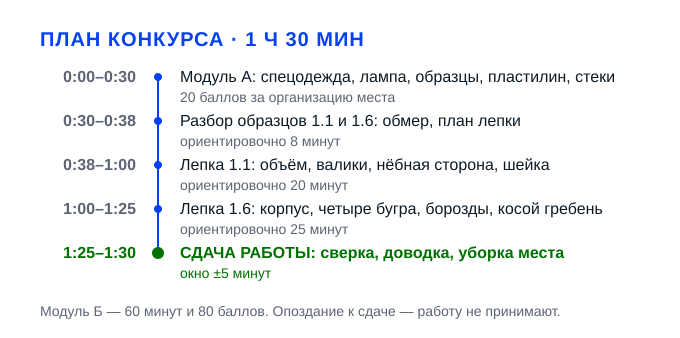
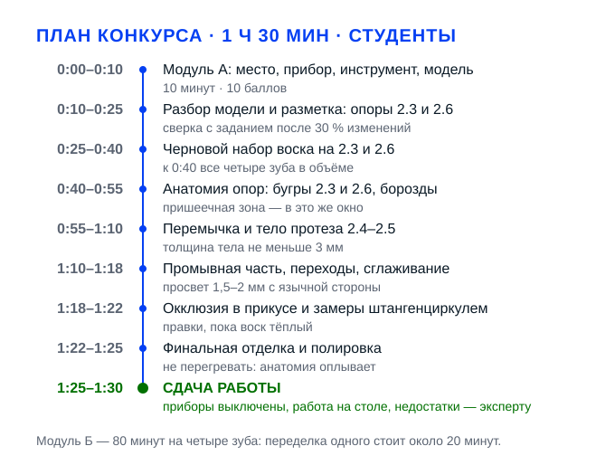
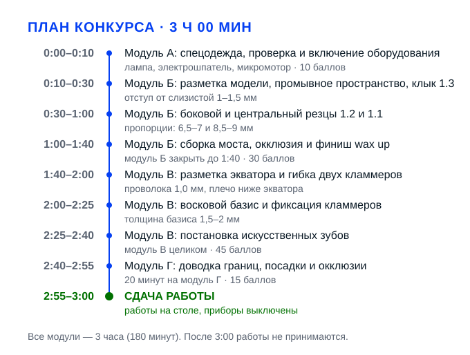

Зубной техник (Р, О)
Задания ниже — официальные файлы «Абилимпикс» (источник: abilympics-russia.ru), разложенные по категориям. Решения написаны по тексту задания, регламенту и критериям оценки; в них указано, что именно проверяет эксперт.
Школьник
14–16 лет, базовый уровень заданияВыдержка из официального конкурсного задания: страницы, относящиеся к категории «Школьник» (стр. 4–6 источника).
Пошаговое решение
Задание для школьников короткое по формулировке и очень плотное по работе: 90 минут на всё, два модуля и 100 баллов. Модуль А — организация рабочего места, 30 минут и 20 баллов: надеть спецодежду, проверить лампу индивидуального освещения, принять образцы, скульптурный пластилин, коврик и набор для лепки. Модуль Б — 60 минут и 80 баллов: вылепить из пластилина зубы 1.1 и 1.6 верхней челюсти, воспроизведя полную анатомическую форму образцов в масштабе 1:1. Оценивают не красоту и не скорость, а совпадение с образцом по объёму, контурам, буграм и бороздам, поэтому первые десять минут уходят не на лепку, а на разбор того, что именно нужно повторить. Главные риски — потерять масштаб (слепить «похоже, но мельче»), сгладить рельеф и не успеть привести рабочее место в порядок, а за организацию и уборку в этом задании дают почти четверть баллов.

Задача 1. Организовать рабочее место до старта модуля БМодуль А · 20 баллов · 30 минут
Модуль А длится 30 минут и стоит 20 баллов из 100 — это пятая часть результата, которую берут не лепкой, а порядком. За это время нужно надеть спецодежду с застёгнутыми манжетами, проверить и включить лампу индивидуального освещения, принять и осмотреть образцы зубов 1.1 и 1.6, убедиться, что на столе есть упаковка скульптурного пластилина, коврик и набор для лепки, а затем разложить инструмент так, чтобы в модуле Б к нему не тянуться через всю столешницу. Порядок здесь важнее скорости: эксперты фиксируют готовность к работе в первые минуты, и вернуться к этому этапу потом уже не получится.
Действие 1.1. Надеть спецодежду и подготовить руки
Шаг 1.1.1
Надеваем халат или фартук сразу, до того как сесть за стол, и застёгиваем его полностью, а манжеты рукавов затягиваем вокруг запястья так, чтобы край не свисал на ладонь. В конкурсном задании этот пункт вынесен отдельной строкой — «надеть спецодежду, застегнуть манжеты рукавов халата», — и проверяют его буквально, по пуговицам. Если халат одноразовый на кнопках, проходим по ним снизу вверх: нижние кнопки у спанбонда почти всегда остаются незастёгнутыми. Рукава не подворачиваем — застёгнутая манжета не даёт рукаву задеть свежий пластилин и размазать вылепленный рельеф.
Спецодежда — первое, что эксперт видит и фиксирует ещё до старта, и в модуле А вместе с готовностью стола она составляет все 20 баллов. Логика оценки простая: зубной техник работает с материалом, который потом побывает во рту у пациента, поэтому чистая закрытая одежда и подобранные рукава — не формальность, а часть профессионального стандарта. Балл снимают даже при хорошей лепке: если участник сидит в расстёгнутом халате, модуль А уже неполный.
Проверьте себя по трём признакам: халат застёгнут по всей длине и не расходится на груди, обе манжеты плотно сидят на запястьях и не сползают при подъёме руки, рукав заканчивается выше основания большого пальца. Поднимите руки вперёд, как будто держите стек, и посмотрите: ничего не свисает и не тянет.
Самая частая ошибка — накинуть халат на плечи и застегнуть две верхние кнопки, чтобы «не мешало». Второй по частоте промах — застегнуть халат, но оставить расстёгнутыми манжеты: визуально это почти не видно, а проверяют именно их. Оба варианта стоят части баллов модуля А и, что важнее, задают неверный тон всей работе.
Эксперт осматривает участника на входе в зону и ещё раз — в момент старта модуля Б. Смотрит на застёгнутый халат, манжеты и на то, остаётся ли одежда чистой к концу работы: следы пластилина на груди тоже считаются.
Шаг 1.1.2
Подбираем волосы под шапочку или резинку так, чтобы они не падали на лицо и не касались стола, а длинную чёлку убираем назад, а не закалываем сбоку. Надеваем маску и защитные очки, если они есть в оснащении места: маска закрывает нос и рот целиком, очки садятся на переносицу и не сползают при наклоне головы к работе. Проверяем, что ничто не давит на виски: в течение 60 минут модуля Б вы будете смотреть на деталь с расстояния 20–25 сантиметров, и любое давление к концу работы превращается в головную боль и потерю точности.
Требования охраны труда в конкурсном задании прямо называют комплект: халат медицинский одноразовый, маска, очки защитные. Оценивается это в модуле А, а влияет на весь модуль Б: упавшая на стол прядь или сползшая маска отвлекают и заставляют поправлять себя грязными руками. Для участников с нарушением слуха на площадке предусмотрен сурдопереводчик, и маска не должна мешать видеть лицо эксперта, когда он показывает задание.
При наклоне головы к столу на 30–40 градусов ничего не съезжает: шапочка держится на затылке, очки не касаются ресниц, маска не запотевает от дыхания. Быстрый тест — наклонитесь над ковриком и посмотрите вверх: поле зрения должно остаться чистым, без бликов и без края оправы поперёк взгляда.
Ошибка новичка — надеть шапочку «на макушку», оставив затылок открытым: спереди всё аккуратно, а сзади волосы выбиваются и попадают на коврик. Вторая ошибка — работать без очков, потому что «пластилин не летит»: мелкие крошки при заглаживании всё равно уходят в сторону лица, а стереть их с глаз грязной рукой на площадке нечем.
Эксперт проверяет комплект защиты одним взглядом при обходе в первые минуты и отмечает в листе, надет ли он полностью или частично. Отдельно он отмечает, поправлял ли участник маску или очки перепачканными пластилином руками: это тоже читается как культура работы.
Шаг 1.1.3
Моем руки с мылом до запястий, вытираем насухо бумажным полотенцем и только после этого садимся за стол: мокрые руки оставляют на пластилине липкие следы, а пластилин после воды плохо заглаживается. Снимаем кольца, часы, браслеты, длинные серьги и подвески, ногти должны быть коротко подстрижены, без лака и покрытия. Украшения мешают не только гигиене: кольцо снимает с ладони чувствительность, а именно ладонью удобнее всего проверять симметрию бугров на моляре. Если ногти длинные, их лучше подрезать заранее, дома: на площадке для этого нет ни времени, ни инструмента.
Модуль А оценивает готовность к работе, и руки — её главный инструмент: в задании нет ни боров, ни шпателей, вся форма создаётся пальцами и стеком. Кольцо или часы на рабочей руке цепляют пластилин, оставляют на поверхности полосы и сбивают масштаб надавливания. Кроме того, на площадке действуют санитарные требования, и эксперт вправе отметить нарушение отдельно от лепки.
Руки сухие, тёплые, без украшений, ногти короткие. Проверьте тыльную сторону ладоней и промежутки между пальцами — там остаётся больше всего пластилина после работы, и именно оттуда он переносится на светлые части детали, пачкая эмалевую поверхность будущей коронки.
Типичная ошибка — снять только часы, оставив тонкое кольцо «оно не мешает»: на 1.1 кольцо оставляет вмятину на вестибулярной поверхности, которую потом невозможно загладить, не потеряв общий контур. Вторая — вытереть руки о халат вместо полотенца: халат становится переносчиком грязи, а эксперт это видит.
Эксперт смотрит на руки при старте и в течение работы, отдельно отмечая, возвращается ли участник к мытью рук после уборки коврика и работы с крошками.
Действие 1.2. Проверить и включить лампу индивидуального освещения
Шаг 1.2.1
Осматриваем лампу до включения: проверяем, цел ли сетевой шнур по всей длине, плотно ли сидит вилка в розетке, нет ли на корпусе трещин и следов перегрева, держится ли шарнир, на котором поворачивается плафон. Плавно проводим рукой вдоль шнура, не натягивая его: если чувствуется место, где изоляция продавлена или перекручена, работать за этим столом нельзя. Кнопку пока не нажимаем — сначала осмотр, потом включение, потому что при повреждённом шнуре включение и есть та самая опасная минута.
В последовательности выполнения задания проверка состояния лампы вынесена отдельным пунктом перед включением, и это не формальность: 20 баллов модуля А дают за грамотную организацию, а работа с неисправным светильником — нарушение требований охраны труда. В разделе о технике безопасности сказано: о неисправностях участник сообщает эксперту и не приступает к работе до их устранения. Промолчать и включить — значит потерять баллы и рискнуть зря.
Шнур целый, вилка сидит до упора, корпус без трещин, плафон держится и поворачивается с усилием, но без хруста. Если что-то не так — поднимаем руку и зовём эксперта до включения, а не после. Проверьте заодно, что плафон не касается стола и не перегревает пластилин: тёплый материал теряет форму прямо под пальцами.
Частая ошибка — дёрнуть шнур, чтобы поправить положение лампы: у настольных моделей крепление шнура в корпусе слабое, и рывок вырывает контакт. Вторая — включить лампу, не глядя на неё, и потом обнаружить, что плафон закреплён на уровне глаз и слепит.
Эксперт наблюдает за подготовкой оборудования и фиксирует, осматривал ли участник лампу или просто нажал кнопку. Осмотр шнура и вилки он воспринимает как часть подготовки: участник, который сразу нажимает кнопку, в его записях выглядит менее готовым.
Шаг 1.2.2
Включаем лампу выключателем в положение «Вкл.» и наводим плафон так, чтобы свет падал на коврик сбоку и немного сверху, под углом примерно 45 градусов, а не прямо в глаза. Плафон ставим на 25–30 сантиметров от рабочей поверхности: ближе он перегревает пластилин и сушит его, дальше — рельеф теряет тени. Свет должен идти с одной стороны, потому что именно боковой свет читает бугры и борозды: при верхнем освещении моляр выглядит плоским пятном, и вы не увидите, где провалилась фиссура.
На площадке освещение общее, и его недостаточно для работы с деталью размером 10–11 миллиметров: индивидуальная лампа нужна именно для того, чтобы видеть микрорельеф. Правильно поставленный свет напрямую влияет на 80 баллов модуля Б, потому что при плоском свете ошибки формы обнаруживаются только на сдаче, когда исправлять уже нечем. Включение лампы входит в обязательную последовательность модуля А.
Тень от вашей руки не падает на деталь, на коврике видна тень от каждого бугра, на глаз не слепит. Быстрая проверка: положите на коврик кусочек пластилина и поверните его — при правильном свете видно, как меняется рельеф, при неправильном он остаётся ровным.
Ошибка — поставить лампу строго сверху и вплотную: пластилин размягчается, деталь начинает «плыть» под пальцами, а тени исчезают. Вторая — направить свет в лицо, чтобы «было светлее»: через полчаса работы глаза устают, и точность падает как раз на мелких элементах.
Эксперт отмечает положение лампы при обходе: смещённый в сторону свет с явной тенью считается правильным, свет «в лоб» — нет. Он смотрит и на то, не приходится ли участнику щуриться: при плохом свете мелкий рельеф на детали не читается, и это видно со стороны.
Действие 1.3. Принять образцы и материалы
Шаг 1.3.1
Сверяем стол с перечнем из задания: образцы зубов, упаковка скульптурного пластилина, коврик и набор для лепки. Проходим по списку вслух или про себя, трогая каждый предмет рукой: так видно, что действительно лежит на столе, а не «должно лежать». Отдельно проверяем, что образцов два — 1.1 и 1.6 — и что они не перепутаны местами: у школьников по заданию воспроизводятся именно эти два зуба, а при 30-процентном изменении задания главный эксперт может заменить их на 2.1 и 2.6, и тогда на столе будут другие образцы.
Модуль А стоит 20 баллов и называется «организация рабочего места», поэтому наличие и правильность набора оценивают буквально. Если образцов нет, перепутаны номера или не хватает инструмента, заменить их после старта можно только через главного эксперта и только при уважительной причине. Тридцать минут на подготовку даны именно для того, чтобы обнаружить нехватку спокойно, а не в середине лепки, когда половина времени уже израсходована.
На столе два образца с маркировкой, упаковка пластилина не вскрыта, коврик на месте, стек и стеки в наборе. Если чего-то нет — поднимаем руку сразу: это единственный момент, когда вопрос решается быстро и без потери баллов.
Классическая ошибка — начать с лепки, не проверив набор: нехватка стека обнаруживается на этапе борозд, когда деталь уже вылеплена. Вторая — взять образец 1.1 за 1.6 и лепить не тот зуб: работа будет аккуратной и полностью неверной.
Эксперт проходит по рабочим местам в модуле А и сверяет наличие позиций; отсутствие чего-либо фиксируется в протоколе. Он же проверяет, не перепутаны ли образцы 1.1 и 1.6 местами: при смене задания на 2.1 и 2.6 это первое, что бросается в глаза.
Шаг 1.3.2
Берём образцы в руки по одному и осматриваем их как эталон: смотрим, что именно воспроизведено — только коронка или коронка с шейкой и частью корня, есть ли подставка, на которой образец стоит. Примеряем образец к своему будущему изделию по высоте: у 1.1 высота коронки около 10,5 миллиметра, у 1.6 — около 7,5 миллиметра, и это первое, что нужно запомнить глазом, потому что вылепленная «на глаз» деталь почти всегда выходит крупнее образца. Ставим образцы перед собой на коврик так, чтобы они не мешали работать, но были видны постоянно — лучше справа и чуть выше коврика.
В задании сказано: воссоздать анатомическую форму с воспроизведением полного объёма представленного образца. Значит, оценивают совпадение с образцом, а не с идеалом из учебника: если на образце нет корня, вылепленный корень — это отклонение от задания, а не достоинство. Постоянно видимый образец нужен ещё и потому, что сравнение «на глаз» через 20 минут работы память искажает, а сверка в конце показывает расхождение, которое уже не исправить.
Образцы стоят устойчиво, не качаются, не заслоняют коврик, видны боком и сверху. Проверьте, что вы можете, не вставая и не поворачиваясь, перевести взгляд с детали на образец за одну секунду — при лепке сверка идёт каждые две-три минуты.
Ошибка — убрать образцы «чтобы не мешали» в сторону или подальше на край стола: деталь начинает лепиться по памяти и расходится с эталоном по объёму. Вторая — поставить образец прямо перед собой и работать, задевая его локтем: образец падает, мнётся, и сверять больше не с чем.
Эксперт смотрит, пользуется ли участник образцом в процессе, а не только в начале: постоянные взгляды на эталон — признак правильной работы. Если образец лежит в стороне и не используется, он делает вывод, что деталь лепится по памяти, и сравнивает результат особенно строго.
Шаг 1.3.3
Вскрываем упаковку скульптурного пластилина и проверяем его на ощупь: брусок должен быть мягким, но не липким, при сгибании не трескаться, при разминании в руках не оставлять жирных следов. Отделяем от бруска небольшой кусок и скатываем в шарик — хороший скульптурный пластилин держит форму и не оседает под собственной тяжестью. Если брусок жёсткий и крошится, его нужно размять в ладонях дольше обычного, а не мочить водой: вода разрушает структуру, и потом поверхность детали пойдёт трещинами.
Пластилин — единственный материал задания, и его свойства определяют, получится ли чёткий рельеф на 80 баллов модуля Б. Слишком мягкий пластилин «плывёт»: бугры оплывают уже через минуту после формовки, борозды заплывают. Слишком жёсткий не держит тонкие элементы — режущий край и краевые валики крошатся. Проверка занимает две минуты и сохраняет всю работу.
Шарик скатан и держит форму, на поверхности нет трещин и крошек, руки после разминания остаются почти чистыми. Если пластилин липнет к пальцам как тесто — он перегрет, дайте ему полежать минуту и начните снова.
Частая ошибка — греть пластилин на лампе или над радиатором: он становится текучим и перестаёт держать форму. Вторая — начинать лепку с холодного бруска, который крошится под пальцами: деталь получается рыхлой, и загладить её до гладкости уже невозможно.
Эксперт обращает внимание, как участник обращается с материалом: мнёт ли аккуратно, не собирает ли крошки с пола и не размазывает ли пластилин по коврику.
Действие 1.4. Разложить инструмент и нарезать заготовки
Шаг 1.4.1
Раскладываем набор для лепки по зонам: стеки и стеки-лопатки — справа от коврика, тонкая игла или зубочистка для борозд — рядом с ними, обрезной стек и линейка — слева, крошки и обрезки — в отдельную крышку или лоток, а не на коврик. Каждый инструмент кладём ручкой к себе, чтобы брать его не глядя: во время лепки взгляд не должен уходить с детали. Те предметы, которыми вы точно не будете пользоваться, убираем из рабочей зоны совсем — лишнее на столе мешает и создаёт риск задеть вылепленную деталь локтем.
Порядок на столе — это и есть содержание модуля А, за который дают 20 баллов. Кроме оценки, раскладка экономит время: модуль Б идёт всего 60 минут на два зуба, и поиск стека по всей столешнице отнимает минуты, которых потом не хватит на доводку. Инструмент, лежащий в зоне досягаемости одной руки, позволяет работать без пауз, а значит, держать пластилин в равномерно размятом состоянии.
Всё нужное достаётся одной рукой, не вставая; на коврике нет ничего, кроме заготовки и, при необходимости, образца рядом; обрезки складываются в лоток, а не смахиваются на пол. Проверьте, что между ковриком и краем стола осталось место для локтя — иначе рука будет висеть и точность упадёт.
Ошибка — держать весь набор в куче перед собой: стеки пачкаются пластилином, а вы каждый раз ищете нужный. Вторая — складывать обрезки на коврик: они прилипают к детали и портят поверхность в самый неподходящий момент.
Эксперт оценивает организацию места визуально при обходе: чистая рабочая зона, инструмент по местам, отсутствие лишнего. Он отмечает и то, лежит ли инструмент ручкой к участнику: это признак продуманной организации, а не случайной раскладки.
Шаг 1.4.2
Разминаем пластилин до рабочей консистенции: берём кусок размером с грецкий орех и разминаем его в ладонях одну-две минуты, пока он не станет однородным и тёплым, после чего несколько раз перегибаем и снова разминаем. Готовый к работе пластилин скатывается в гладкий цилиндр без трещин по краям и не прилипает к пальцам. Разминать нужно ровно столько, сколько нужно для следующего шага: размятый заранее и полежавший пластилин подсыхает и начинает покрываться тонкой коркой.
Из холодного пластилина невозможно вылепить тонкий режущий край и чёткие краевые валики: он рвётся по волокнам, и поверхность получается рваной. Перегретый, наоборот, теряет способность держать форму, и бугры моляра оплывают за минуту. Рабочая консистенция — это то состояние, при котором материал слушается пальца, и именно от него зависит, будет ли рельеф читаться при оценке.
Пластилин однородный, без светлых и тёмных разводов, скатывается в цилиндр, не липнет к пальцам, при нажатии ногтем оставляет чёткую, а не рваную вмятину. Если после разминания на ладонях остаётся жирный блеск — материал слишком мягкий для тонкой работы, дайте ему остыть пару минут.
Ошибка — размять сразу весь брусок: к моменту лепки моляра пластилин уже подсохнет и начнёт крошиться. Вторая — разогревать кусок в горячей воде: он напитывается влагой, и поверхность детали потом идёт пузырями.
Эксперт смотрит на пластичность материала, когда участник начинает формовку: рваные, крошащиеся края детали — признак неподготовленного пластилина. Он смотрит на первые движения формовки: если пластилин рвётся под пальцами, участник теряет время на исправление поверхности.
Шаг 1.4.3
Делим размятый пластилин на заготовки: для 1.1 отрезаем стеком кусок, из которого скатывается столбик примерно 12 миллиметров высотой и 8 миллиметров в поперечнике, для 1.6 — кусок покрупнее, около 12 миллиметров в поперечнике при высоте 9–10 миллиметров. Заготовки кладём на коврик отдельно друг от друга, на расстоянии двух-трёх сантиметров, и накрывать их ничем не нужно: они должны оставаться чуть тёплыми. Излишки пластилина убираем в упаковку и отставляем в сторону — на коврике должно остаться только то, что пойдёт в работу, а остальное понадобится для исправлений.
Заготовка с запасом по объёму — страховка: лишнее всегда можно снять стеком, а нарастить недостающее незаметно почти невозможно, потому что место стыка остаётся видимым швом. Размеры заготовки заданы с превышением над размерами коронки, потому что при формовке часть объёма уходит на уплотнение материала под пальцами. Отдельно лежащие заготовки не слипаются и не деформируются, пока вы работаете с первой.
Заготовки держат форму столбика, стоят устойчиво, не расползаются по коврику. Проверьте линейкой: 1.1 — около 12 миллиметров по высоте, 1.6 — около 9–10 миллиметров, оба с запасом в полтора-два миллиметра относительно будущей коронки.
Ошибка — отрезать кусок «ровно по размеру коронки»: после уплотнения его не хватит, и деталь выйдет ниже образца. Вторая — оставить заготовки лежать вплотную: они слипаются в один комок, и разделить их без деформации уже не получится.
Эксперт отмечает, готова ли работа к старту модуля Б в момент, когда объявлено начало: заготовки, инструмент и образцы на местах — значит, организация выполнена.
Задача 2. Прочитать образцы и построить план лепкиМодуль Б · 80 баллов · разбор образца
Перед лепкой нужно разобрать образцы на элементы и запомнить их размеры: без этого через двадцать минут работы глаз «привыкает» и перестаёт замечать, что деталь выросла или потеряла рельеф. Разбор занимает 8–10 минут из 60 и окупается полностью: у 1.1 считаются высота коронки, ширина, три вертикальных валика на вестибулярной поверхности, бугорок и краевые валики с нёбной стороны; у 1.6 — четыре бугра разного размера, косой гребень и рисунок борозд. Всё, что вы назовёте вслух и измерите сейчас, придётся воспроизвести руками, и именно по этим элементам эксперт будет считать 80 баллов.
Действие 2.1. Обмерить образцы
Шаг 2.1.1
Берём штангенциркуль или линейку с миллиметровыми делениями и обмеряем образец 1.1 по трём направлениям: высота коронки от режущего края до шейки, ширина в самой широкой части и толщина от вестибулярной поверхности до нёбной. Губки штангенциркуля ставим без нажима, чтобы не вмять образец, и считываем показание, глядя прямо на шкалу. У 1.1 ориентиры такие: высота коронки около 10,5 миллиметра, ширина 8,5 миллиметра, толщина 7 миллиметров — но решающим является то, что показывает инструмент на вашем образце, а не таблица.
Задание требует воспроизвести форму в масштабе 1:1, и масштаб — это первое, что проверяют при оценке: деталь меньше образца на миллиметр по ширине уже читается как ошибка формы. Обмер даёт три числа, которые потом работают как контрольные точки: по ним вы в любой момент поймёте, не «поплыла» ли деталь. Штангенциркуль, кстати, разрешено привезти с собой, и в перечне инструментов он назван отдельной строкой.
Три числа записаны (на полях листа задания или просто запомнены точно), повторный обмер через минуту даёт те же значения. Если разница больше 0,5 миллиметра — вы давите губками на мягкий образец, ослабьте нажим.
Ошибка — мерить «на глаз», приложив линейку сбоку и не глядя на шкалу: именно так появляется деталь на два миллиметра крупнее. Вторая — сильно сжимать образец губками: пластилин или воск деформируется, и вы запомните неверный размер.
Эксперт смотрит, пользуется ли участник измерительным инструментом: наличие обмера видно по уверенности, с которой деталь держит размер. Он же сравнивает деталь с образцом по этим трём размерам, поэтому участник, который их знает, отвечает на вопросы уверенно.
Шаг 2.1.2
Тем же штангенциркулем обмеряем 1.6: высоту коронки (около 7,5 миллиметра), мезиодистальный размер — расстояние между мезиальной и дистальной поверхностями, около 10–11 миллиметров, и вестибулооральный, от щёчной поверхности до нёбной, около 11–12 миллиметров. Отдельно отмечаем, что ширина моляра больше высоты: коронка 1.6 — приземистая, а не вытянутая, и это главное отличие от резца, которое чаще всего теряют при лепке. Если на образце показан корень, измеряем и его длину, но за основу берём именно то, что видно на образце.
1.6 — самый крупный зуб в этой паре, и его пропорции задают всю композицию: если сделать моляр вытянутым, как резец, он перестанет читаться как моляр, даже при правильных буграх. Соотношение ширины и высоты — тот признак, по которому эксперт с первого взгляда отличает верную форму от похожей. Кроме того, зная габариты, вы поймёте, сколько пластилина нужно на заготовку.
Записаны три числа, и соотношение проверено простым действием: ширина должна быть больше высоты примерно в полтора раза. Приложите образец к линейке боком и сверху — разница видна сразу. Числа должны совпасть с первым обмером с точностью до половины миллиметра, а ширина — быть больше высоты в полтора раза.
Ошибка — лепить моляр по тем же пропорциям, что и резец, то есть высоким и узким: такой зуб не узнаётся даже с хорошими буграми. Вторая — не заметить, что образец 1.6 шире в вестибулооральном направлении, и сделать его плоским с боков.
Эксперт при оценке первым делом смотрит на общие пропорции: они дают больше всего баллов из 80 и теряются быстрее всего. Он сопоставляет ширину и высоту детали и по этому соотношению понимает, разбирал ли участник форму или лепил по памяти.
Шаг 2.1.3
Сверяем оба обмера с масштабом: прикладываем образцы к линейке рядом и смотрим, что 1.6 шире 1.1 примерно на 2–3 миллиметра, а по высоте ниже его на 3 миллиметра. Это соотношение запоминаем как ориентир: в процессе лепки достаточно поставить обе детали рядом, чтобы увидеть, не «разъехались» ли они по размеру. Если ваши числа сильно расходятся с этими ориентирами, скорее всего вы мерили с наклоном или не по самой широкой части.
Масштаб 1:1 в задании указан не случайно: он превращает оценку в сравнение двух деталей между собой и с образцом. Участник, который держит в голове соотношение двух зубов, замечает ошибку сразу, а тот, кто лепит каждый по отдельности, узнаёт о ней только на сдаче. Это самая дешёвая страховка из всех доступных.
Обе детали (пока заготовки) укладываются рядом и различаются по размеру так, как образцы. Проверка занимает десять секунд и повторяется каждые 15 минут работы. Если моляр оказался уже резца, вы перепутали детали или обмеряли не по самой широкой части: перемеряйте, не снимая с коврика.
Ошибка — вылепить оба зуба одного размера, «чтобы смотрелось аккуратно»: в анатомии это грубая ошибка, и она стоит баллов сразу в двух деталях. Вторая — подгонять детали друг под друга, забыв про образцы.
Эксперт сравнивает детали с образцами по отдельности и между собой; несоответствие масштаба фиксируется как ошибка формы. Он ставит обе детали рядом: соотношение размеров между резцом и моляром тоже входит в оценку формы.
Действие 2.2. Разобрать форму 1.1 по поверхностям
Шаг 2.2.1
Кладём 1.1 перед собой вестибулярной (губной) поверхностью вверх и разбираем её на элементы: поверхность выпуклая, самая широкая часть смещена к режущему краю, а не к середине коронки; по ней идут три очень пологих вертикальных валика, разделённых едва заметными бороздками, — они соответствуют трём долям, из которых формируется коронка, и у молодого зуба на режущем крае видны их вершины-зубчики. Мезиальный (обращённый к соседнему зубу со стороны средней линии) угол режущего края почти прямой и чёткий, дистальный — заметно скруглён.
Именно эти три элемента отличают 1.1 от любого другого резца и дают основную часть баллов за форму: гладкая «лопатка» без валиков читается как недоделанная работа, даже если размеры совпали. Асимметрия углов — тоже анатомический признак, а не небрежность: у 1.1 мезиальный угол острый и высокий, дистальный ниже и скруглён. Ошибка в этой асимметрии сразу видна при сравнении с образцом.
Валики видны при боковом свете, режущий край читается ровной линией с легким скруглением, мезиальный угол выше дистального. Проверьте себя, повернув образец под лампу: рельеф должен проявляться тенями, а не только на ощупь.
Частая ошибка — сделать вестибулярную поверхность идеально гладкой и плоской: так проще, но это потеря главного признака резца. Вторая — сделать оба угла одинаково скруглёнными, отчего зуб становится симметричным и «нечитаемым».
Эксперт осматривает вестибулярную поверхность при боковом свете и отмечает наличие валиков и разницу углов отдельными пунктами. Он смотрит и на разницу углов: симметрично скруглённый край сразу показывает, что форму упростили.
Шаг 2.2.2
Переворачиваем образец нёбной (язычной) стороной вверх и разбираем её: это вогнутая поверхность, в пришеечной трети которой выступает бугорок, а по краям идут два валика — мезиальный и дистальный, сходящиеся к шейке. Между бугорком и валиками остаётся углубление — нёбная ямка, иногда с маленьким слепым углублением у самой шейки. Вогнутость нёбной поверхности у 1.1 выражена сильнее, чем у боковых резцов, и это самый узнаваемый её признак. Отмечаем для себя, насколько глубоко на образце проработана ямка.
Нёбная сторона — то, что чаще всего делают плоским или вообще пропускают, а ведь коронка — объёмное тело, и при взгляде сбоку и сверху нёбный рельеф виден так же хорошо, как губной. Бугорок и краевые валики создают ту самую толщину в пришеечной зоне, которая отличает настоящий резец от плоской пластинки. Оценка формы идёт по всем поверхностям, а не только по лицевой.
При взгляде с нёбной стороны видна впадина, бугорок в нижней трети и два валика по краям; при взгляде сбоку коронка имеет клиновидное сечение — толще у шейки, тоньше к режущему краю. Проверьте пальцем: нёбная поверхность должна ощущаться как ложка, а не как доска.
Ошибка — сделать нёбную сторону выпуклой, «как губную»: сечение теряет клин, и зуб выглядит как брусок. Вторая — переусердствовать с глубиной ямки: стенка становится тонкой и проминается пальцем. Кроме того, тонкая стенка крошится при заглаживании, и на поверхности появляются рваные края.
Эксперт поворачивает деталь и смотрит нёбную поверхность на просвет рельефа; плоская нёбная сторона — минус по критерию формы. Он проверяет и толщину стенки большим пальцем: слишком тонкая стенка проминается, и это заметно при осмотре.
Шаг 2.2.3
Смотрим на 1.1 сбоку и с мезиальной стороны: коронка имеет форму клина, толстая у шейки и сходящаяся к режущему краю, а линия шейки идёт не прямо, а дугой, причём со стороны дистальной поверхности эта дуга круче. Толщина у шейки — около 7 миллиметров, у режущего края — не более 1–1,5 миллиметра. Запоминаем этот профиль как главный контрольный признак: именно он виден на сдаче, когда деталь ставят рядом с образцом и смотрят сбоку.
Профиль — то, что отличает объёмную деталь от вырезанного силуэта, и именно по нему чаще всего теряют баллы: с фронта работа выглядит правильно, а сбоку представляет собой плоскую пластину одинаковой толщины. Режущий край в 1–1,5 миллиметра — это ещё и технологическое требование: более толстый край не читается как режущий, более тонкий быстро проминается.
При взгляде сбоку видно сужение от шейки к краю, сечение напоминает клин; толщина края проверяется ногтем — он должен чуть пружинить, но не сгибаться пополам. Шейка оформлена дугой, а не прямой линией.
Ошибка — оставить одинаковую толщину по всей высоте: деталь теряет объём. Вторая — сделать край толщиной в полмиллиметра, и он обминается уже при первом осмотре экспертом. Третья ошибка — сделать край слишком тонким, и он обминается уже при первом осмотре экспертом.
Эксперт обязательно смотрит деталь сбоку: профиль и линия шейки входят в критерий формы наравне с рельефом поверхности. Он осматривает деталь с мезиальной стороны и сверяет крутизну линии шейки с образцом.
Действие 2.3. Разобрать форму 1.6 по буграм и бороздам
Шаг 2.3.1
Кладём 1.6 жевательной поверхностью вверх и находим четыре бугра: два щёчных — мезиально-щёчный и дистально-щёчный, и два нёбных — мезиально-нёбный и дистально-нёбный. Сравниваем их по размеру: самый крупный — мезиально-нёбный, самый мелкий — дистально-нёбный, два щёчных занимают среднее положение. Запоминаем и высоту: бугры возвышаются над полем жевательной поверхности примерно на 1,5–2 миллиметра, а не на полкоронки, как иногда лепят. Если на образце виден дополнительный бугорок у мезиально-нёбного бугра (бугор Карабелли), отмечаем его наличие — на оценку он влияет как признак точности.
Жевательная поверхность моляра — это в первую очередь рельеф из четырёх бугров, и их разница в размере анатомически обязательна. Четыре одинаковых бугра выглядят аккуратно, но это ошибка формы, которую эксперт видит сразу. Правильно построенные бугры дают и верный силуэт коронки сбоку, и верную толщину стенок, поэтому разбор начинается именно с них.
Четыре бугра нащупываются пальцем как отдельные возвышения, самый крупный — мезиально-нёбный. Проверьте, что между буграми есть заметные понижения: если поверхность ощущается ровной, рельеф ещё не построен.
Ошибка — вылепить все бугры одной высоты и размера: поверхность становится плоской и «машинной». Вторая — сделать бугры слишком высокими, отчего коронка теряет приземистость, характерную для 1.6. Третья ошибка — вылепить бугры слишком высокими, и коронка теряет приземистость, характерную для первого моляра.
Эксперт осматривает жевательную поверхность сверху и в косом свете, оценивая число и соотношение бугров. Он сравнивает высоту бугров с образцом и отмечает, читается ли приземистость коронки.
Шаг 2.3.2
Разбираем борозды: центральная борозда идёт по жевательной поверхности и делит её на щёчную и нёбную половины, от неё отходят борозды к краям — мезиальная и дистальная, а щёчная борозда уходит на щёчную поверхность и заканчивается неглубокой ямкой у шейки. Между буграми остаются углубления — центральная, мезиальная треугольная и дистальная ямки. И главный признак верхнего моляра — косой гребень: валик, идущий от мезиально-нёбного бугра к дистально-щёчному и пересекающий жевательное поле по диагонали. Находим его на образце и запоминаем направление.
Рисунок борозд — второй по значимости признак после бугров: он определяет, узнаётся ли зуб как первый моляр верхней челюсти. Косой гребень есть только у верхних моляров, и на детали он должен читаться, иначе форма обеднена. Глубина борозд тоже регламентирована практикой: слишком глубокие делают стенки хрупкими, слишком мелкие исчезают под пальцем при заглаживании.
Борозды видны как тонкие линии глубиной около половины миллиметра, косой гребень пересекает поле по диагонали от мезиально-нёбного бугра. Проверьте иглой: она должна входить в борозду, но не проваливаться насквозь.
Ошибка — нарисовать борозды «крестом» и на этом остановиться: пропадает косой гребень, и моляр становится похож на нижний. Вторая — продавить борозды слишком глубоко, до тонкой стенки, которая рвётся при заглаживании.
Эксперт смотрит рисунок борозд сверху и отмечает наличие косого гребня отдельным пунктом критерия. Он специально поворачивает деталь в поисках косого гребня: у верхнего моляра это признак, по которому узнают форму.
Шаг 2.3.3
Поворачиваем образец и разбираем боковые поверхности: щёчная — выпуклая, с двумя полубуграми и бороздой между ними, которая не доходит до шейки, а заканчивается ямкой; мезиальная — по форме близка к ромбу или трапеции, с уплощением выше шейки; дистальная — меньше мезиальной и более выпуклая. Контур коронки сверху напоминает скошенный ромб: он шире в середине и сужается к мезиальной стороне. Запоминаем и то, что стенки коронки у моляра почти вертикальные, а не расходятся к шейке, как у резца.
Боковые поверхности видит эксперт, когда берёт деталь в руки и поворачивает — а поворачивает он её обязательно, потому что оценка идёт по полной анатомической форме. Ромбовидный контур и разная величина мезиальной и дистальной поверхностей — те признаки, по которым моляр отличают от премоляра. Вертикальные стенки нужны ещё и технологически: они не дают детали расползтись под собственным весом.
Сверху контур читается как ромб, мезиальная поверхность крупнее дистальной, щёчная борозда видна на боковой поверхности и заканчивается ямкой. Проверьте симметрию: деталь не должна быть перекошена в одну сторону.
Ошибка — сделать все четыре боковые поверхности одинаковыми, как у цилиндра: деталь теряет характерный контур. Вторая — расширить коронку к шейке, отчего моляр становится похож на конус. Третья ошибка — перепутать мезиальную и дистальную стороны, отчего весь рельеф ложится зеркально образцу.
Эксперт поворачивает деталь и осматривает контур с четырёх сторон; несовпадение мезиальной и дистальной поверхностей считается ошибкой формы. Он сравнивает щёчную и нёбную стороны по выпуклости и отмечает, не перепутаны ли они местами.
Задача 3. Вылепить из пластилина зуб 1.1Модуль Б · 80 баллов · зуб 1.1
1.1 — верхний правый центральный резец, и в паре с моляром он выглядит простым: гладкая лопатка с ровным краем. На самом деле именно на нём теряют баллы чаще всего, потому что простые поверхности труднее держать в размере. Работа идёт от общего объёма к частному: сначала клин нужной толщины, потом выпуклость и валики с губной стороны, затем вогнутость с нёбной, и только в конце — шейка и заглаживание. На весь зуб отводится около 20 минут из 60, и лучше недоделать рельеф, чем потерять пропорции.
Действие 3.1. Сформировать общий объём коронки
Шаг 3.1.1
Берём заготовку для 1.1 и скатываем её в столбик высотой около 12 миллиметров, постоянно поворачивая ладонью, чтобы поперечник был одинаковым сверху и снизу. Затем ставим столбик на коврик вертикально и прижимаем сверху пальцем, формируя плоскую площадку будущего режущего края. Столбик не сжимаем посередине: нам нужен ровный цилиндр, из которого потом снимется лишнее, а не бочка. Работаем на коврике, а не в воздухе — так пластилин не растягивается под собственным весом.
Общий объём задаёт габарит детали, а габарит — первое, что сравнивают с образцом при оценке формы в модуле Б. Цилиндр удобен тем, что из него можно снять материал в любом направлении, не добавляя нового: наращивание почти всегда оставляет видимый шов. Кроме того, ровный цилиндр задаёт вертикаль, и коронка потом не получится заваленной в сторону.
Столбик стоит устойчиво, высота около 12 миллиметров, поперечник одинаковый по всей длине, на поверхности нет трещин и вмятин от пальцев. Проверьте линейкой или на глаз по образцу: заготовка должна быть выше образца примерно на полтора миллиметра.
Ошибка — скатать шарик вместо цилиндра: из шарика коронка выходит бочкообразной, и плоские боковые поверхности потом не получаются. Вторая — сжать заготовку посередине, отчего она приобретает форму гантели и теряет объём на шейке.
Эксперт смотрит на исходную заготовку при обходе: ровный объём говорит о том, что участник работает от целого, а не лепит по частям. Он отмечает и то, лежит ли заготовка на коврике: поднятая в воздух деталь растягивается под собственным весом.
Шаг 3.1.2
Придаём заготовке клиновидную форму: кладём столбик на коврик горизонтально и прижимаем ладонью так, чтобы с одной стороны толщина уменьшилась до 1–1,5 миллиметра, а с другой осталась около 7 миллиметров. Удобнее не давить сверху, а прокатывать стек с плоской лопаткой, снимая материал слоями по 0,5 миллиметра с одной стороны. Верхний край, который станет режущим, слегка скругляем подушечкой пальца, но не заглаживаем до блеска: рельеф ещё будет дорабатываться.
Клин — это профиль резца, и он определяет, читается ли деталь сбоку как зуб. Толстая у шейки и тонкая у края коронка даёт правильное сечение, а одинаковый по толщине брусок выглядит вырезанным из пластины. Толщина 7 миллиметров у шейки и 1–1,5 миллиметра у края — те контрольные цифры, по которым проверяют профиль.
При взгляде сбоку видно сужение от основания к краю, толщина края проверяется ногтем: он должен слегка пружинить. Основание осталось толщиной около 7 миллиметров, край — не толще полутора. Толщину у шейки проверьте штангенциркулем, не снимая деталь с коврика, и не давите губками.
Ошибка — снять слишком много с одной стороны и получить «лезвие»: край потом проминается, и деталь теряет форму при первом же касании. Вторая — оставить толщину одинаковой, потому что «так ровнее». Третья ошибка — снимать материал не стеком, а ногтем: на поверхности остаются царапины, которые не заглаживаются.
Эксперт оценивает профиль при взгляде сбоку, поворачивая деталь; плоский брусок сразу читается как ошибка формы. Он смотрит на профиль и на то, сохранилась ли толщина у основания, где держится весь объём коронки.
Шаг 3.1.3
Размечаем будущую границу шейки: отмеряем от режущего края 10,5 миллиметра и проводим по этому уровню очень тонкую линию иглой или краем стека — по всей окружности, но без нажима. Это будет уровень, до которого коронка оформляется как анатомическая часть, а ниже пойдёт переход в шейку. Одновременно проверяем высоту: если до метки остаётся больше 11 миллиметров, лишнее снимаем сверху, а не снизу, потому что основание уже задаёт толщину.
Разметка — единственный способ не «уползти» по высоте: при заглаживании и доработке рельефа коронка почти всегда укорачивается на полмиллиметра-миллиметр, и без метки это замечают только на сдаче. Высота 10,5 миллиметра входит в число контрольных размеров образца, поэтому она должна быть видна глазом в процессе работы, а не вспоминаться в конце.
Метка замкнута по окружности, расстояние от неё до режущего края около 10,5 миллиметра. Проверьте штангенциркулем сбоку, не снимая деталь с коврика, и не давите губками. Если метка получилась выше одиннадцати миллиметров от основания, высоту правьте сверху, а не снизу.
Ошибка — сделать метку глубокой бороздой: она не загладится и останется на готовой детали как лишняя линия. Вторая — разметить высоту по образцу на глаз, отчего деталь выходит выше или ниже на миллиметр.
Эксперт обращает внимание на пропорции детали относительно образца: высота и ширина сравниваются в первую очередь. Он быстро прикидывает высоту детали рядом с образцом и отмечает расхождение больше миллиметра.
Действие 3.2. Построить вестибулярную поверхность
Шаг 3.2.1
Кладём заготовку губной стороной вверх и формируем выпуклость: подушечкой большого пальца проглаживаем поверхность от шейки к краю, добавляя объём в средней и верхней трети и оставляя шейку более плоской. Самая выпуклая часть должна оказаться не в середине коронки, а ближе к режущему краю — примерно на две трети высоты. Движения идут в одном направлении, без круговых растираний, иначе пластилин размазывается и поверхность теряет чёткость.
Смещённая к режущему краю выпуклость — анатомический признак центрального резца: именно из-за неё коронка выглядит «наклонённой» вперёд. Если сделать выпуклость по центру или у шейки, деталь становится похожей на боковой резец или на клык. Кроме того, правильная выпуклость задаёт тот мягкий блик, по которому эксперт оценивает поверхность.
При взгляде сбоку самая выступающая точка находится выше середины; при взгляде сверху поверхность плавно выпуклая, без провалов. Проведите пальцем от шейки к краю: он должен ощущать подъём, а не ровную плоскость.
Ошибка — сделать поверхность плоской «чтобы ровнее смотрелось»: деталь теряет объём, и это видно с первого взгляда. Вторая — выпятить середину, отчего коронка становится похожа на бочку. Третья ошибка — сгладить поверхность ладонью целиком, отчего выпуклость исчезает вовсе и коронка становится плоской.
Эксперт осматривает вестибулярную поверхность при боковом свете, оценивая выпуклость и её положение по высоте. Смещение самой выпуклой точки вверх или вниз по высоте он отмечает отдельно от общей формы.
Шаг 3.2.2
Наносим три очень пологих вертикальных валика: мысленно делим губную поверхность на три части по ширине и по границам проводим две бороздки глубиной не более 0,3 миллиметра — тонкой иглой или остриём стека, сверху вниз, не доходя до шейки на два миллиметра. Валики получаются сами: пластилин между бороздками остаётся чуть выше. Разглаживаем их пальцем вдоль, чтобы границы были мягкими, а не прорезанными. Верхние концы валиков на режущем крае дают три едва заметных зубчика — у молодого зуба они есть.
Три валика — это три доли, из которых формируется коронка резца, и их наличие отличает 1.1 от упрощённой «лопатки». В конкурсном задании отдельно сказано про воспроизведение полной анатомической формы, а не силуэта, поэтому поверхностный рельеф входит в оценку наравне с размерами. Глубина бороздок небольшая намеренно: слишком глубокие читаются как дефект поверхности.
Бороздки видны только при боковом свете и на ощупь почти не ощущаются, валики не имеют резких краёв. Проверьте, что бороздки идут вертикально и не сходятся к шейке в одну точку. Бороздки должны доходить до края, а не обрываться за два миллиметра до него.
Ошибка — прорезать бороздки слишком глубоко, до 1 миллиметра: поверхность выглядит разрисованной линиями. Вторая — сделать валики выпуклыми буграми, отчего зуб становится ребристым и перестаёт читаться как резец.
Эксперт проверяет наличие валиков при боковом освещении и оценивает их плавность, а не только сам факт. Он поворачивает деталь под лампой, чтобы валики проявились тенями, а не только на ощупь.
Шаг 3.2.3
Оформляем режущий край: он должен быть почти прямым, с лёгким скруглением и небольшой толщиной, а два его угла — разными. Мезиальный угол — тот, что обращён к средней линии и соседнему зубу 1.2, — делаем более высоким и чётким, почти прямым; дистальный — ниже и заметно скруглённым, с плавным переходом на боковую поверхность. Срезаем лишнее стеком по краю и заглаживаем подушечкой пальца вдоль, а не поперёк.
Разница углов — анатомическая норма и одновременно признак, по которому понимают, что участник разобрал образец, а не вылепил симметричную заготовку. Симметричный край сразу выдаёт упрощение. Кроме того, скруглённый дистальный угол даёт правильный силуэт в паре с соседним зубом, если эксперт ставит детали рядом.
Один угол выше и острее, второй скруглён; линия края ровная, без ступенек и провисаний. Посмотрите на деталь сверху: режущий край должен читаться тонкой ровной полосой одинаковой толщины. Углы должны читаться по-разному даже при взгляде с расстояния вытянутой руки.
Ошибка — сделать край абсолютно симметричным и закруглить оба угла одинаково. Вторая — срезать край слишком тонко, до прозрачности: он проминается пальцем при заглаживании и теряет линию. Третья ошибка — завалить край назад, отчего коронка теряет наклон, характерный для центрального резца.
Эксперт смотрит на режущий край с фронта и сбоку, отмечая его толщину, и отдельно проверяет разницу углов, поворачивая деталь губной стороной к свету и сравнивая с образцом.
Действие 3.3. Построить нёбную поверхность
Шаг 3.3.1
Переворачиваем деталь нёбной стороной вверх и выбираем углубление: ложкой стека или подушечкой пальца снимаем материал от середины к краям, формируя пологую вогнутость. По мезиальному и дистальному краям оставляем валики шириной около 1 миллиметра, которые сходятся к шейке, — они получаются автоматически, если не снимать материал у самых краёв. Глубина вогнутости небольшая, около 0,5–0,7 миллиметра: стенка не должна стать тонкой.
Вогнутая нёбная поверхность с краевыми валиками — вторая половина объёма коронки, и без неё деталь выглядит как выпуклая с двух сторон пластинка, то есть не как резец. Валики нужны ещё и потому, что они дают правильную толщину коронки в средней части, а толщина проверяется при взгляде сверху. Это тот рельеф, который эксперт ищет специально, поворачивая деталь.
При взгляде с нёбной стороны видна пологая ложбина, по краям — два валика, сходящиеся к шейке. Проверьте большим пальцем: поверхность должна ощущаться вогнутой, но не тонкой, стенка не продавливается.
Ошибка — выскоблить углубление слишком глубоко, до тонкой стенки: деталь проминается и теряет форму при любом касании. Вторая — оставить нёбную поверхность выпуклой, «как получилось». Третья ошибка — снять материал и с краёв, уничтожив валики, которые держат толщину коронки.
Эксперт обязательно переворачивает деталь: нёбная сторона оценивается по тому же критерию формы, что и губная. Если поверхность выпуклая, он отмечает это как ошибку формы, а не как дефект поверхности.
Шаг 3.3.2
В пришеечной трети нёбной поверхности формируем бугорок: скатываем маленький шарик диаметром около 2 миллиметров, прикладываем его к поверхности у самой шейки и разглаживаем края так, чтобы бугорок переходил в поверхность плавно. Над бугорком, между ним и краевыми валиками, оставляем небольшое углубление — нёбную ямку, а у самой шейки можно едва наметить слепое углубление иглой. Бугорок не должен выглядеть наклеенной нашлёпкой.
Бугорок — место прикрепления мышц языка и главный ориентир нёбной стороны резца, по нему зуб узнаётся с обратной стороны. На образце он почти наверняка есть, и его отсутствие читается как незавершённая работа. При этом важно, чтобы он был встроен в поверхность: приклеенный шарик с видимой границей — типичный дефект, который эксперт отмечает отдельно.
Бугорок нащупывается как плавное возвышение у шейки, его края переходят в поверхность без ступеньки; над ним видна ложбинка. Посмотрите на просвет под лампой: граница бугорка не должна читаться линией.
Ошибка — прилепить шарик и не разгладить его: остаётся кольцевой шов, который видно при любом освещении. Вторая — сделать бугорок слишком крупным, отчего он начинает мешать при смыкании с образцом. Третья ошибка — поставить бугорок слишком низко, у самого основания, где он уже не читается.
Эксперт осматривает пришеечную зону нёбной поверхности и отмечает выраженность бугорка и плавность его перехода. Он смотрит на просвет: граница между бугорком и поверхностью не должна читаться линией.
Действие 3.4. Оформить шейку и довести поверхность
Шаг 3.4.1
Оформляем шейку: по намеченной метке снимаем материал так, чтобы линия перехода коронки в основание шла не прямо, а пологой дугой, причём со стороны дистальной поверхности дуга круче, чем с мезиальной. Удобно работать узкой лопаткой стека, поворачивая деталь на коврике, а не поднимая её в воздух. Основание оставляем плоским — деталь должна устойчиво стоять, иначе она будет падать при каждом касании.
Дуга шейки и её разная крутизна с мезиальной и дистальной сторон — признак, по которому анатомическую коронку отличают от цилиндра с плоским низом. У 1.1 дистальная кривизна заметно больше. Плоское основание нужно ещё и практически: в конце работы деталь должна стоять на коврике ровно, потому что её оставляют на столе для оценки.
Линия шейки читается дугой, дистальная сторона поднимается выше мезиальной, основание плоское и деталь не качается на коврике. Проверьте, поставив деталь на стол и слегка толкнув пальцем: она должна стоять, а не заваливаться.
Ошибка — сделать шейку прямой линией, как обрез цилиндра: деталь теряет признак коронки. Вторая — закруглить основание, отчего деталь не стоит и падает во время работы. Третья ошибка — срезать шейку слишком высоко, отчего коронка укорачивается на миллиметр и пропорции едут.
Эксперт смотрит линию шейки при осмотре детали сбоку и снизу; прямой обрез считается упрощением формы. Он проверяет и то, стоит ли деталь на коврике ровно: падающая деталь мнётся при каждом касании.
Шаг 3.4.2
Доводим поверхность до состояния, когда на ней нет отпечатков пальцев, крошек и случайных вмятин: проглаживаем подушечкой пальца вдоль поверхности, смачивая палец в воде лишь слегка, а лучше — вообще без воды, работая тёплой ладонью. Мелкие неровности убираем не стеком, а разглаживанием: стек снимает материал и вместе с ним рельеф. В конце проходим по всем переходам — от губной поверхности к краю, от края к нёбной, от нёбной к шейке — и проверяем, что нигде не осталось ступенек.
Гладкость поверхности входит в оценку наравне с формой: отпечатки и крошки читаются как небрежность, даже если пропорции верные. Кроме того, разглаживание без воды сохраняет структуру пластилина — смоченная поверхность после высыхания даёт сетку трещин, которая проявляется уже на столе при оценке.
Поверхность однородная, без блестящих и матовых пятен, при боковом свете нет теней от вмятин. Проведите ногтем плашмя по губной поверхности: он должен скользить, не цепляясь за неровности. Проверьте также основание: на нём не должно быть наплывов пластилина, иначе деталь стоит криво.
Ошибка — «полировать» поверхность мокрым пальцем: пластилин размягчается, рельеф заплывает, и деталь теряет чёткость. Вторая — убирать дефекты стеком, срезая вместе с ними валики и бугорок. Третья ошибка — тереть поверхность тканью: остаются волокна, которые потом уже не убрать.
Эксперт осматривает поверхность в косом свете; отпечатки пальцев и крошки фиксируются как дефекты отдельно от ошибок формы. Он смотрит на деталь под углом к лампе, где видны все мелкие неровности поверхности.
Задача 4. Вылепить из пластилина зуб 1.6Модуль Б · 80 баллов · зуб 1.6
1.6 — верхний правый первый моляр, самый крупный и самый сложный зуб в задании: четыре бугра разного размера, косой гребень, рисунок борозд и приземистая коронка, которая шире, чем выше. На него уходит основная часть модуля Б — около 25 минут из 60, потому что рельеф здесь строится в два прохода: сначала общий корпус и бугры, потом борозды. Ошибка, которая стоит дороже всего, — сделать моляр по пропорциям резца, высоким и узким: тогда никакой рельеф уже не спасёт, потому что силуэт сравнивают с образцом первым.
Действие 4.1. Сформировать корпус моляра
Шаг 4.1.1
Берём заготовку для 1.6 и формуем приземистый объём: прижимаем кусок ладонью к коврику до высоты 9–10 миллиметров, а затем растягиваем в стороны так, чтобы по ширине получилось около 11 миллиметров, а в глубину — около 12. Проще всего сделать это, прокатывая заготовку под ладонью круговыми движениями и подправляя края пальцами: пластилин сам распределяется в призму. Верхнюю площадку выравниваем стеком — это будущее жевательное поле.
Приземистость — главный силуэтный признак 1.6, и её проверяют до всякого рельефа: коронка моляра шире, чем выше, примерно в полтора раза. Из высокого узкого объёма потом не получаются ни площадка для четырёх бугров, ни вертикальные стенки. Площадка нужна ещё и потому, что борозды прорезаются по плоскости, а не по куполу.
Высота 9–10 миллиметров, ширина около 11, глубина около 12; верхняя площадка ровная, деталь стоит на коврике устойчиво. Сравните с образцом 1.6 бок о бок: заготовка должна быть на 2 миллиметра выше и шире его.
Ошибка — сохранить вытянутый столбик от резца и начать лепить бугры на нём: получается высокий «моляр-бочонок», который не узнаётся. Вторая — расплющить заготовку слишком сильно, до 7 миллиметров, и потерять объём, из которого не выйдут бугры нормальной высоты.
Эксперт сравнивает общий силуэт с образцом, поворачивая деталь; пропорции оцениваются в первую очередь. Он ставит заготовку рядом с образцом 1.6 и сравнивает высоту и ширину, не дожидаясь рельефа.
Шаг 4.1.2
Размечаем на верхней площадке четыре точки будущих бугров: делим площадку на четыре сектора крестом, но не по центру — линии смещены так, чтобы мезиально-нёбный сектор был самым крупным, а дистально-нёбный самым мелким. Намечаем точки стеком или остриём иглы едва заметно, без нажима. Стороны помечаем для себя: щёчная сторона — та, что была обращена к щеке на образце, и на детали она должна остаться на том же месте, иначе косой гребень ляжет по неверной диагонали.
Разметка бугров до формовки — единственный способ не получить четыре одинаковых возвышения: если лепить «как получится», рука сама делает симметрию. Асимметрия бугров у 1.6 анатомически обязательна, и именно она даёт правильный рисунок борозд. Плюс разметка заранее фиксирует ориентацию детали, без неё легко перепутать щёчную и нёбную стороны.
Четыре точки видны, расстояния между ними разные, крупнейший сектор — мезиально-нёбный. Проверьте, что вы можете показать пальцем, где будет щёчная сторона: если сомневаетесь — поверните деталь к образцу и сверьтесь.
Ошибка — разметить крест ровно по центру и получить четыре равных сектора. Вторая — потерять ориентацию и вылепить косой гребень с нёбной стороны на щёчную, то есть зеркально. Третья ошибка — забыть, какая сторона щёчная, и вылепить весь рельеф зеркально образцу.
Эксперт смотрит на расположение бугров сверху: смещение крупного бугра к мезиально-нёбному углу — признак правильно разобранной формы. Он смотрит и на смещение разметки: у 1.6 крупный бугор всегда у мезиально-нёбного угла.
Шаг 4.1.3
Формуем контур коронки сверху: он должен читаться как скошенный ромб — углы мезиально-щёчный и дистально-нёбный оттянуты сильнее, а линия мезиальной поверхности идёт почти прямо. Пальцами приминаем углы, подрезаем стеком лишнее по периметру, добиваясь, чтобы ширина и глубина соответствовали обмерам. Стенки делаем почти вертикальными: у моляра они не расходятся к шейке, как у резца, а идут вниз ровно.
Ромбовидный контур — то, что отличает первый моляр от второго и от премоляра, и его видно при взгляде сверху, то есть в самом удобном для эксперта ракурсе. Вертикальные стенки дают детали устойчивость: пластилин с наклонными стенками расползается под собственным весом за время работы. Кроме того, ровные стенки нужны для борозд, которые на щёчной стороне выходят на боковую поверхность.
Сверху контур читается ромбом, мезиальная сторона крупнее дистальной, все четыре стенки идут вниз без наклона. Проверьте, поставив деталь на коврик и посмотрев на неё с уровня стола: стенки должны быть вертикальными.
Ошибка — сделать коронку цилиндрической, без скошенных углов: теряется характерный контур. Вторая — расширить деталь к шейке, отчего моляр превращается в конус и начинает заваливаться набок. Третья ошибка — оставить наклонными две стенки, отчего деталь начинает крениться набок при работе.
Эксперт осматривает деталь сверху и с четырёх сторон; контур и вертикальность стенок входят в критерий формы. Он отмечает, читается ли скошенный ромб: у второго моляра контур был бы заметно иным.
Действие 4.2. Вылепить бугры и скаты
Шаг 4.2.1
Начинаем с самого крупного бугра — мезиально-нёбного: на разметке в этом секторе набираем пластилин небольшими кусочками, приминаем и формуем возвышение высотой около 1,5–2 миллиметров над полем. Скат бугра, обращённый к центру жевательной поверхности, делаем пологим, а наружный, к нёбной стороне, — более крутым. Разглаживаем переход к площадке пальцем, пока граница не станет плавной. Если на образце виден дополнительный бугорок на этом бугре, намечаем его отдельным маленьким возвышением.
Именно этот бугор задаёт ориентир для всех остальных: он самый высокий и крупный, и по нему выстраивается высота остальных. Начинать с него удобно ещё и потому, что от него пойдёт косой гребень. Крутой наружный и пологий внутренний скат — анатомическая норма, при равных скатах бугор выглядит как полусфера, а не как бугор зуба.
Бугор возвышается над полем на 1,5–2 миллиметра, наружный скат круче внутреннего, переход к площадке плавный, без ступеньки. Проверьте пальцем: бугор должен ощущаться как холм, а не как нашлёпка. Бугор должен быть выше поля, но ниже края коронки, иначе он читается как отдельный столбик.
Ошибка — набрать бугор из отдельного шарика и не разгладить основание: остаётся кольцевая граница, которая видна при любом свете. Вторая — сделать бугор слишком высоким, отчего нарушается общая высота коронки.
Эксперт осматривает жевательную поверхность в косом свете и оценивает высоту бугров относительно поля. Он сравнивает его с остальными буграми: этот всегда самый крупный и самый высокий.
Шаг 4.2.2
Формуем два щёчных бугра — мезиально-щёчный и дистально-щёчный: они ниже мезиально-нёбного примерно на 0,3–0,5 миллиметра и разделены бороздой, которую пока только намечаем вдавлением пальца. Каждый бугор делаем со своим скатом к центру и уплощённой вершиной, а не остриём. Между ними у щёчного края оставляем понижение — там потом пройдёт щёчная борозда, которая выйдет на боковую поверхность.
Два щёчных бугра — самая заметная часть коронки при взгляде сбоку, и их соотношение с нёбными задаёт наклон жевательной поверхности. На верхних молярах нёбные бугры выше щёчных, и если сделать наоборот, деталь перестаёт читаться как зуб верхней челюсти. Уплощённые вершины нужны потому, что острые кончики проминаются при заглаживании и исчезают.
Оба щёчных бугра ниже мезиально-нёбного, между ними есть понижение, вершины уплощённые. Посмотрите на деталь со щёчной стороны: должны читаться два возвышения и ложбина между ними. Стенки бугров не должны быть отвесными, как у столбиков: скаты идут плавно к полю.
Ошибка — сделать щёчные бугры выше нёбных: у верхнего моляра это грубая ошибка, которую видно с первого взгляда. Вторая — слить бугры в один вал, потеряв борозду между ними. Третья ошибка — сделать скаты одинаковыми, отчего бугры читаются полусферами.
Эксперт поворачивает деталь щёчной стороной и сравнивает высоту бугров с образцом. Он поворачивает деталь щёчной стороной к свету и сравнивает ложбину между буграми с образцом.
Шаг 4.2.3
Формуем последний, самый мелкий бугор — дистально-нёбный: он ниже остальных примерно на 0,5 миллиметра и меньше по площади, его скат к центру короткий. После этого выравниваем общее поле: проводим пальцем по площадке и смотрим, чтобы вершины бугров лежали на одном уровне с небольшим понижением к дистальной стороне. Если какой-то бугор выбивается, снимаем с него немного пластилина, а не добавляем остальным.
Разница высот бугров — это то, что делает жевательную поверхность живой и узнаваемой; четыре одинаковых бугра выглядят как пуговицы. У 1.6 дистальная половина поля ниже мезиальной, и это надо сохранить. Снимать лишнее, а не добавлять, важно технологически: наращивание оставляет швы, а снятие всегда даёт чистую поверхность.
Четыре бугра различаются по высоте в ожидаемом порядке, дистальная сторона чуть ниже. Проведите по вершинам пальцем — он должен ощущать ступеньки высоты, но не острые края. Разница высот должна быть видна глазом, а не только на ощупь подушечкой пальца.
Ошибка — подравнять все бугры под одну высоту «чтобы аккуратно смотрелось»: это анатомически неверно и хорошо заметно на сравнении с образцом. Вторая — оставить дистально-нёбный бугор таким же крупным, как мезиальный.
Эксперт оценивает соотношение всех четырёх бугров, а не только наличие рельефа. Он проверяет, что самый мелкий бугор не вылеплен крупнее мезиально-нёбного и не потерялся среди остальных.
Действие 4.3. Прорезать борозды и косой гребень
Шаг 4.3.1
Прорезаем центральную борозду: тонкой иглой или остриём стека ведём линию по дну понижения между буграми в мезиодистальном направлении, глубиной около 0,5 миллиметра, не доходя до краёв на 1 миллиметр. От неё отводим мезиальную и дистальную борозды к соответствующим краям, а в местах пересечения слегка расширяем углубление — там образуются ямки. Инструмент держим почти вертикально и ведём линию одним движением, а не пилим туда-сюда: так края борозды остаются ровными.
Рисунок борозд делит жевательное поле на бугры и скаты и читается сверху как анатомическая карта зуба. Глубина около половины миллиметра — рабочий диапазон: мельче борозда заплывает при заглаживании, глубже стенка становится тонкой и рвётся. Ямки в местах пересечения — не декоративная деталь, а признак проработанности рельефа.
Борозды тонкие, ровные, одинаковой глубины, игла входит в них и не проваливается; в местах пересечения видны небольшие углубления. Проверьте сверху при боковом свете: рисунок должен читаться целиком, а не отдельными штрихами.
Ошибка — процарапать борозды, «пиля» инструментом: края получаются рваными, а пластилин наворачивается комочками. Вторая — продавить борозду слишком глубоко, до тонкой стенки, которая рвётся при первом же заглаживании.
Эксперт смотрит на рисунок борозд сверху; рваные края и разная глубина фиксируются как дефекты поверхности. Он смотрит, одинаковой ли глубины борозды и не рвутся ли их края при заглаживании.
Шаг 4.3.2
Формируем косой гребень: валик шириной около 1 миллиметра, идущий от мезиально-нёбного бугра по диагонали к дистально-щёчному. Набирать его не нужно — достаточно не прорезать борозду поперёк этого направления, а аккуратно обвести валик стеком с двух сторон, слегка приподняв его пальцем. Гребень должен быть ниже бугров, но отчётливо выше дна борозд: примерно на 0,5 миллиметра над полем. Направление проверяем по образцу и не меняем.
Косой гребень есть только у верхних моляров, и это самый узнаваемый признак первого моляра: по нему эксперт понимает, что участник разобрался в анатомии, а не вылепил четыре бугра наугад. Он также делит центральную ямку на две части, что меняет весь рисунок борозд. Ошибка в его направлении делает деталь зеркальной относительно образца.
Гребень читается как валик между двумя бороздами, идёт по диагонали от мезиально-нёбного бугра к дистально-щёчному, его высота меньше высоты бугров. Проверьте, что он не перерезан поперёк ни одной бороздой.
Ошибка — прорезать центральную борозду напрямую через гребень: он исчезает, и поле распадается на четыре изолированных бугра. Вторая — сделать гребень направленным в другую сторону, зеркально образцу.
Эксперт специально ищет косой гребень при осмотре: он входит в критерий анатомической формы. Он проверяет направление гребня, приложив деталь рядом с образцом и повернув обе одинаково.
Шаг 4.3.3
Оформляем ямки и вывод борозд на боковые поверхности: в мезиальной части поля расширяем треугольное углубление, в дистальной — небольшое понижение, а щёчную борозду продолжаем со дна на щёчную поверхность, доводя её до уровня чуть выше шейки и заканчивая мелкой ямкой. Края борозд слегка приглаживаем пальцем, чтобы они не были режущими, но не затираем их полностью. Каждую линию проверяем на симметричность относительно своей оси.
Вывод борозд на боковые поверхности нужен потому, что эксперт осматривает деталь с разных сторон, и прерванная на краю борозда читается как недоделанный рельеф. Ямки — те самые анатомические ориентиры, по которым сравнивают деталь с образцом; без них поверхность выглядит схематичной. Приглаживание краёв при этом обязательно: острые края борозд крошатся при касании.
Борозда видна на щёчной поверхности и заканчивается ямкой, ямки на поле намечены, края борозд не режут палец. Проверьте деталь, повернув её на 90 градусов: линии должны продолжаться, а не обрываться на краю.
Ошибка — оставить борозды только на жевательном поле, не выводя их на бок: с щёчной стороны деталь выглядит гладкой и незавершённой. Вторая — загладить края борозд так сильно, что рисунок заплывает и исчезает.
Эксперт осматривает деталь с четырёх сторон и проверяет, продолжается ли рельеф на боковых поверхностях. Он наклоняет деталь, чтобы увидеть, продолжается ли щёчная борозда на боковой поверхности.
Действие 4.4. Оформить боковые поверхности и шейку
Шаг 4.4.1
Доводим щёчную поверхность: она должна быть выпуклой, с двумя полубуграми в верхней части и уплощением ближе к шейке. Мезиальную поверхность делаем крупнее дистальной и слегка уплощённой в пришеечной трети, дистальную — меньше и более округлой. Работаем подушечкой пальца и широкой лопаткой стека, постоянно поворачивая деталь на коврике: так видно, не появилось ли перекоса, когда одна сторона выпуклая, а другая уплощена несимметрично.
Боковые поверхности эксперт видит, когда берёт деталь в руки, а берёт он её обязательно: оценка идёт по полной анатомической форме. Разная величина мезиальной и дистальной поверхностей и пришеечное уплощение — признаки первого моляра, отличающие его от второго. Кроме того, выпуклая щёчная сторона даёт правильный силуэт при взгляде спереди.
Щёчная сторона выпуклая, мезиальная крупнее дистальной, на мезиальной есть уплощение выше шейки. Проверьте, поставив деталь на коврик и обойдя её взглядом: контур должен меняться от стороны к стороне.
Ошибка — сделать все четыре стороны одинаково выпуклыми, как у цилиндра: деталь теряет характерный контур. Вторая — уплощить щёчную сторону, перепутав её с мезиальной. Третья ошибка — сделать дистальную сторону крупнее мезиальной, перепутав ориентацию детали.
Эксперт поворачивает деталь и сравнивает боковые поверхности с образцом по выпуклости и размеру. Он сравнивает пришеечное уплощение на мезиальной стороне с образцом.
Шаг 4.4.2
Оформляем шейку: по всему периметру проводим линию перехода коронки в основание, снимая материал узкой лопаткой стека под небольшим углом. Линия идёт с лёгкой волной, опускаясь на мезиальной и дистальной сторонах и поднимаясь на щёчной и нёбной. Основание оставляем плоским и чуть шире коронки — так деталь устойчиво стоит на коврике. В конце проверяем, что стенки остались вертикальными и коронка не «съехала» в одну сторону при снятии материала.
Шейка — та часть, по которой деталь стыкуется с образцом при сравнении: если переход срезан грубо или слишком высоко, коронка выглядит короче, чем нужно, и пропорции едут. Плоское основание нужно практично: работу оставляют на столе, и она должна стоять, а не лежать на боку. Проверка вертикальности стенок после снятия материала — обязательный шаг, потому что рука при работе стеком незаметно снимает больше с одной стороны.
Линия шейки читается по всему периметру, основание плоское, деталь стоит устойчиво, стенки вертикальные. Поставьте деталь рядом с образцом и сравните высоту коронки: расхождение больше миллиметра — сигнал вернуться к разметке.
Ошибка — срезать шейку слишком высоко, отчего коронка укорачивается и моляр становится приземистым сверх меры. Вторая — оставить основание закруглённым: деталь падает при каждом касании и мнётся. Третья ошибка — снять шейку с одной стороны глубже, отчего деталь начинает крениться.
Эксперт осматривает линию шейки и устойчивость детали на столе; высота коронки сравнивается с образцом. Он отмечает, читается ли волна линии шейки на всех четырёх сторонах коронки.
Задача 5. Сверить с образцом, доработать и сдать работуМодуль Б · 80 баллов · сдача
Последние 10–12 минут модуля Б решают больше, чем кажется: детали уже вылеплены, и именно сейчас ошибки можно убрать, а порядок на столе — восстановить. Сверка идёт по контрольным точкам, которые вы обмерили в начале: высота, ширина, толщина, разница углов у резца, соотношение бугров у моляра. После доводки работу ставят на коврик, инструмент убирают, лампу выключают, а обо всех замеченных недостатках сообщают эксперту — это прямо записано в последовательности выполнения задания.
Действие 5.1. Сверить детали с образцами
Шаг 5.1.1
Ставим 1.1 и 1.6 рядом с их образцами и обмеряем заново теми же тремя размерами, что и в начале: высоту коронки от режущего края до шейки, ширину в самой широкой части и толщину. Губки штангенциркуля ставим без нажима, потому что размягчённый пластилин продавливается и показывает меньше реального. Результаты сравниваем с первыми числами: расхождение до 0,5 миллиметра допустимо, больше — повод возвращаться к правке.
Сверка по числам, а не «на глаз» — единственный способ поймать ошибку масштаба: за 40 минут работы глаз адаптируется, и деталь кажется точной, даже если выросла на два миллиметра. В задании оценивается воспроизведение формы в масштабе 1:1, и масштаб — первое, что проверяют на сдаче. Плюс обмер даёт уверенность: с ним вы идёте к эксперту с понятным результатом.
Все три размера каждой детали отличаются от первых обмеров не более чем на 0,5 миллиметра. Запишите или запомните числа: если расхождение есть, видно, в какую сторону и насколько. Если деталь выросла, лишнее снимают стеком, а не сдавливают пальцами: давление меняет форму.
Ошибка — сверить только высоту и успокоиться: ширина и толщина «плывут» незаметно, а именно они дают силуэт. Вторая — давить губками на мягкую деталь и получить заниженное значение, решив, что всё в порядке.
Эксперт при оценке ставит детали рядом с образцами и сравнивает габариты; совпадение по трём размерам читается как точная работа. Расхождение в полмиллиметра он ещё считает допустимым, в миллиметр — уже нет.
Шаг 5.1.2
Осматриваем каждую деталь с четырёх сторон и в косом свете, поворачивая её на коврике: у 1.1 проверяем выпуклость и три валика с губной стороны, вогнутость с бугорком — с нёбной, разницу углов режущего края и дугу шейки; у 1.6 — четыре бугра разной величины, косой гребень, рисунок борозд, ромбовидный контур сверху и вертикальность стенок. Свет от лампы смещаем так, чтобы тени падали вбок: при верхнем освещении половина рельефа не читается.
Косой свет — рабочий инструмент контроля: он показывает те неровности, которые не видны при прямом освещении и не ощущаются пальцем. Осмотр с четырёх сторон повторяет то, что будет делать эксперт, поэтому всё найденное сейчас ещё можно исправить. Рельеф — это большая часть из 80 баллов модуля Б, и именно он теряется при заглаживании.
На каждой поверхности видны все элементы, которые вы перечислили при разборе образца; при повороте детали тени двигаются, а не исчезают. Если какой-то элемент не находится за десять секунд — его, скорее всего, уже нет.
Ошибка — осматривать деталь только сверху и только под своей лампой в её обычном положении: половина ошибок остаётся незамеченной. Вторая — крутить деталь в руках, сминая только что выполненные элементы.
Эксперт осматривает деталь именно так — поворачивая и наклоняя её; на сдаче видно всё, что не проверили сами. Он делает это до оценки и после, чтобы видеть, что участник успел исправить сам.
Шаг 5.1.3
Сравниваем две детали между собой: 1.6 должен быть шире 1.1 примерно на 2–3 миллиметра и ниже на 3 миллиметра, а по стилю исполнения они должны выглядеть одной работой — одинаковая гладкость поверхности, одинаковая глубина борозд, одинаково оформленная шейка. Если одна деталь разительно отличается по аккуратности, значит, на неё не хватило времени, и доводить надо именно её. Ставим обе детали на коврик рядом с образцами в том порядке, в котором их будут оценивать.
Парная работа оценивается как единое задание на 80 баллов, и разнобой между деталями читается как небрежность: одна идеальная, вторая черновая — типичная картина, когда участник увлёкся первым зубом. Соотношение размеров между 1.1 и 1.6 — тоже контрольный признак: если моляр меньше резца, масштаб нарушен в одной из деталей.
Обе детали соотносятся по размеру так же, как образцы, и выполнены в одной манере: одинаковая гладкость, одинаковая чёткость рельефа. Проверьте, положив их рядом и посмотрев с расстояния вытянутой руки — разница в аккуратности должна быть незаметна.
Ошибка — довести до идеала первый зуб и оставить второй «как получился»: вторая деталь теряет больше баллов, чем прибавляет первая. Вторая — подогнать размеры деталей друг под друга, забыв про образцы.
Эксперт сравнивает обе детали с образцами и между собой; несоответствие масштаба фиксируется отдельно. Он ставит детали рядом и смотрит, выдержано ли соотношение размеров между ними.
Действие 5.2. Устранить найденные дефекты
Шаг 5.2.1
Убираем поверхностные дефекты: отпечатки пальцев, крошки, случайные вмятины и наплывы разглаживаем подушечкой пальца вдоль поверхности, без воды и без стека. Крошки снимаем мягкой кисточкой или сдуваем, но не стираем ладонью: ладонь вдавливает их в пластилин. Если появилась трещина, её защипывают с двух сторон и разглаживают, а не замазывают сверху новым пластилином. На каждую правку отводим не больше минуты, чтобы не уйти в бесконечную доводку одной детали.
Отпечатки и крошки — та часть оценки, которую теряют зря: форма может быть верной, но неопрятная поверхность снижает впечатление от всей работы. Трещины опаснее, чем кажется: если их замазать сверху, при высыхании пластилина они проявятся снова и уже на сдаче. Правило «снимать, а не добавлять» здесь работает так же, как при формовке.
Поверхность однородная, при боковом свете нет теней от вмятин, трещин не видно даже при наклоне детали. Проведите пальцем плашмя: он должен скользить, не цепляясь. Крошки проверяйте при наклоне детали к свету, а не сверху: сверху их не видно.
Ошибка — замазать трещину новым пластилином: остаётся светлое пятно другого оттенка, и трещина возвращается. Вторая — стирать крошки ладонью, отчего они вдавливаются в поверхность и превращаются в бугорки.
Эксперт осматривает поверхность в косом свете и отмечает отпечатки как дефекты отдельно от ошибок формы. Он отмечает и то, не осталось ли на поверхности разводов от воды.
Шаг 5.2.2
Исправляем расхождения по форме — точечно и по одному: если у 1.1 пропал валик, поднимаем его пальцем вдоль линии, не трогая соседние; если у 1.6 заплыла борозда, проходим её иглой ещё раз, а затем приглаживаем края; если бугор оказался выше нужного, снимаем с него пластилин плоской лопаткой, а не давим пальцем, потому что давление расплющивает и соседние элементы. После каждой правки сразу смотрим деталь сбоку: общий контур не должен меняться.
Точечная правка сохраняет то, что уже сделано правильно, а исправление «в целом» обычно переделывает половину детали и теряет время. Модуль Б идёт 60 минут на два зуба, и на доводку остаётся 10–12 минут — этого хватает на пять-шесть точных движений и не хватает на переделку. Контроль контура после каждой правки нужен потому, что частные исправления понемногу меняют силуэт.
После правки элемент восстановлен, а высота и ширина детали не изменились больше чем на 0,5 миллиметра. Сверяйтесь с образцом после каждой правки, а не в конце серии. После правки ещё раз обмерьте деталь, чтобы не потерять размер вместе с дефектом.
Ошибка — «подправить» сразу всё: пока правили борозды, сгладились бугры, и работа возвращается к началу. Вторая — давить пальцем на выступающий бугор и сминать соседние. Третья ошибка — править рельеф, не глядя на образец, и увести форму от эталона.
Эксперт оценивает итоговый рельеф детали целиком: локальные правки, сделанные аккуратно, не видны, а переделки читаются как размытость формы. Он смотрит, не появилась ли размытость там, где делали правку: следы исправлений видны.
Действие 5.3. Сдать работу и привести место в порядок
Шаг 5.3.1
Ставим вылепленные зубы на коврик на рабочем месте, каждый на своё место, рядом с соответствующим образцом, так чтобы они не касались друг друга и не падали. Убираем инструмент: стеки протираем от пластилина и складываем в набор, обрезки собираем в лоток, крошки с коврика снимаем мягкой кисточкой или аккуратно сдуваем в сторону, а не смахиваем рукой на пол. Лампу индивидуального освещения выключаем выключателем в положение «Выкл.» только после того, как работа выставлена и осмотрена.
Последовательность сдачи в задании описана буквально: убрать инструмент, очистить коврик от остатков пластилина, привести в порядок рабочее место, поставить вылепленные зубы на коврик и выключить лампу. Всё это входит в организацию работы, за которую в модуле А предусмотрено 20 баллов, и оценивается наравне с самой лепкой. Порядок действий важен: сначала выставляем работу, потом убираем — иначе детали можно случайно смахнуть вместе с обрезками.
Детали стоят на коврике устойчиво и раздельно, инструмент убран, обрезков на коврике нет, лампа выключена. Пройдите по столу глазами эксперта: ничего лишнего, ничего пачкающего детали. Лампа должна быть выключена, но детали — на виду и не под обрезками, иначе их заденут при уборке.
Ошибка — выключить лампу до окончательной сверки: при общем свете мелкий рельеф уже не виден, и последний дефект остаётся. Вторая — смести обрезки рукой на пол: это нарушение порядка на рабочем месте и лишняя потеря баллов.
Эксперт осматривает рабочее место в момент сдачи: порядок, отсутствие обрезков и выключенное оборудование фиксируются в протоколе. Он также проверяет, не осталось ли пластилина на столешнице и на инструменте.
Шаг 5.3.2
Перед тем как поднять руку и позвать эксперта, коротко проговариваем про себя или ему, что сделано: вылеплены 1.1 и 1.6 из скульптурного пластилина в масштабе 1:1, у резца выполнены три валика, бугорок и разница углов, у моляра — четыре бугра разной величины, косой гребень и рисунок борозд. Если во время работы обнаружились недостатки — например, не хватило образца или инструмент оказался неисправен, — говорим о них прямо сейчас, до ухода с площадки, как требует задание.
Умение коротко и точно описать свою работу — часть оценки коммуникации и понимания задания: эксперт видит, разбирается ли участник в том, что слепил, или просто повторял движения. Сообщение о недостатках до сдачи снимает с вас ответственность за них: по правилам участник обязан сообщить эксперту обо всех обнаруженных неполадках. Промолчать и уйти — значит получить замечание, которое можно было предотвратить.
Работа выставлена, эксперт уведомлён, время сдачи зафиксировано. Убедитесь, что детали не будут задеты при уборке площадки: они должны остаться на столе до конца конкурса. Уточните у эксперта, нужно ли что-то ещё до конца модуля, и не отходите от стола до его ответа.
Ошибка — молча отойти от стола, считая, что «и так всё видно»: эксперт оценивает работу по протоколу, и незаявленная неполадка остаётся неучтённой. Вторая — начать объяснять устройство зуба вместо отчёта о сделанном, отнимая время у себя и у других.
Эксперт фиксирует время сдачи и слушает короткий отчёт участника; точность формулировок влияет на оценку коммуникации. Он задаёт один-два вопроса по форме, чтобы понять, разобрался ли участник в задании.
Студент
учащиеся колледжей и техникумовВыдержка из официального конкурсного задания: страницы, относящиеся к категории «Студент» (стр. 4–6 источника).
Пошаговое решение
Решение разобрано по официальному конкурсному заданию регионального чемпионата «Абилимпикс» 2026 для категории «Студенты» по компетенции «Зубной техник». Всё задание занимает полтора часа и делится на два модуля: Модуль А — организация рабочего места, 10 минут и 10 баллов, и Модуль Б — изготовление восковой композиции мостовидного протеза дефекта зубного ряда 2.3–2.6, 80 минут и 90 баллов. Нужно смоделировать воском четыре зуба верхней левой стороны: клык 2.3 и первый моляр 2.6 как опоры, премоляры 2.4 и 2.5 как промежуточную часть, и соединить их в единую конструкцию с промывной частью и правильной окклюзией. Учтите две вещи: тридцать процентов задания меняются за сутки до конкурса (вместо 2.3–2.6 может стоять 1.3–1.6), а свой воск и средства связи на площадку проносить нельзя.

Задача 1. Подготовить себя и рабочее место (Модуль А)Модуль А · 10 минут · 10 баллов
Модуль А длится всего десять минут и стоит десять баллов из ста, но именно он задаёт всё остальное: за восемьдесят минут модуля Б вы физически не успеете ничего переделать, если воск окажется слишком горячим, шпатель холодным, а лампа светит в глаза. Поэтому здесь работают не на скорость, а на порядок: спецодежда по перечню, проверенное электрооборудование, настроенный электрошпатель, инструмент, разложенный по зонам, и рабочая модель, осмотренная до первого касания воском. Всё, что не проверено в эти десять минут, превращается в потерю времени на моделировании, а время здесь — самый дорогой ресурс.
Действие 1.1. Надеть спецодежду и защитить себя
Шаг 1.1.1
Надеваем медицинский халат из отбеленной бязи — по перечню спецодежды это 100 % хлопок по ГОСТ, а не одноразовый спанбонд, — застёгиваем на все кнопки и плотно обхватываем манжеты вокруг запястий, чтобы они не свисали к модели. Волосы убираем под колпак целиком, включая затылок и виски: именно оттуда выбивается больше всего прядей. Маску надеваем по носу и рту, а сверху — защитные очки, потому что воск летит мелкими каплями и ожог замечаешь не сразу. Полы халата не должны лежать на столе: ткань собирает восковую стружку и переносит её на модель.
Спецодежда — половина модуля А, то есть пять баллов из десяти, и оценивают её не «в целом», а по признакам: тот ли халат из перечня, застёгнуты ли манжеты, убраны ли волосы, есть ли маска и очки. Очки при этом не формальность: охрана труда прямо называет ожоги глаз расплавленным воском вредным фактором, а травма на площадке останавливает работу целиком. Рукав должен заканчиваться на запястье, иначе он оказывается в зоне нагрева.
Проверяем себя по четырём точкам: манжеты обхватывают запястье, между тканью и кожей не пролезает палец; волос не видно ни спереди, ни на затылке — попросите волонтёра посмотреть со спины; маска не сползает при наклоне к модели; очки не запотевают — если запотели, поправьте их по верхнему краю.
Частая ошибка — надеть колпак «на макушку» и оставить затылок открытым: спереди всё аккуратно, а сзади волосы выбиваются, и балл за спецодежду потерян. Вторая — работать без очков, потому что «мешают»: первая же капля горячего воска при повороте шпателя уходит в глаз, и вместо восьмидесяти минут моделирования участник получает разбирательство.
Эксперт осматривает участника до старта, в первые же минуты модуля А, и дальше следит, остаётся ли халат чистым по ходу работы: пятна воска на груди и рукавах к середине конкурса тоже считаются нарушением.
Шаг 1.1.2
Моем руки с мылом до запястий, вытираем одноразовым полотенцем и только после этого садимся за стол. Снимаем часы, кольца, браслеты и длинные серьги: под ними остаётся воск, который потом переносится на модель, а камень из кольца при случайном движении оказывается в расплавленной массе. Ногти коротко подстрижены, без лака и покрытия. Стул регулируем по высоте так, чтобы локоть лежал на столе под прямым углом, а глаза находились в двадцати пяти — тридцати сантиметрах от модели: при меньшем расстоянии шея затекает уже к тридцатой минуте, а при большем вы не увидите фиссуру.
Гигиена рук и отсутствие украшений — обязательный пункт санитарных требований, входящий в те же десять баллов модуля А. Логика профессиональная: модель повторяет полость рта пациента, и воск с частицами с рук — это загрязнение будущей конструкции. Высота стула влияет на результат напрямую: мелкая моторика и глазомер, названные в описании компетенции профессионально важными качествами, работают только в удобной позе.
Руки сухие, полотенце использованное и сразу убрано. Украшений нет ни на руках, ни на шее. Сели за стол — проверьте три ощущения: локоть на столе без напряжения, стопы полностью на полу, спина не наклонена вперёд больше чем на десять градусов. Если приходится тянуться — придвиньте модель, а не наклоняйтесь.
Классика — протереть руки о халат: визуально они сухие, но ткань становится переносчиком восковой стружки. Вторая ошибка — оставить обручальное кольцо «оно не мешает»: под ним скапливается воск, а на модели появляются вдавленности от металла. Третья — сесть слишком низко: через полчаса дрожат пальцы, и тонкие стенки у шейки рвутся.
Эксперт смотрит на руки и посадку в начале модуля А и возвращается к этому взгляду в течение всей работы: чистые руки и удобная поза видны по тому, как участник держит шпатель.
Шаг 1.1.3
Убираем со стола всё, что не относится к заданию: телефон, сумку, личные вещи, лишние инструменты из набора. Средства связи на площадку проносить нельзя вообще — это прямо оговорено в особых указаниях к заданию, и телефон, найденный на столе, стоит участнику дисквалификации, а не штрафа в баллах. Из карманов халата убираем всё, кроме марлевой салфетки, если она нужна: карман над моделью — это постоянный источник пыли и ворса в воске. На столе оставляем только рабочую модель, воск, инструмент, лампу, электрошпатель и штангенциркуль.
Свободная площадь стола — условие работы: на одно рабочее место по схеме застройки приходится около двух квадратных метров, и на них должны поместиться модель, прибор, лоток и рука с шпателем. Лишний предмет заставляет тянуться через него, а тянущаяся рука с горячим шпателем — риск. Средства связи запрещены потому, что задание меняется на тридцать процентов за сутки, и подсказка обесценивает работу остальных участников.
Окиньте стол взглядом сверху: должно остаться ровно пять групп предметов — модель по центру, прибор справа, лоток с инструментом слева, воск в зоне досягаемости без наклона, лампа сверху. Уберите всё, что лежит в правом верхнем углу: обычно именно там скапливаются обрезки, упаковка и телефон. Проверьте карманы — они должны быть пустыми.
Самая частая ошибка — оставить телефон «в сумке на столе, я не буду брать». Эксперт фиксирует наличие средства связи на площадке, и дальше разбирается главный эксперт, а не вы. Вторая — оставить на столе обрезки от предыдущих тренировок: они плавятся и попадают в модель чёрными вкраплениями, которые не убрать ни шпателем, ни кистью.
Эксперт проходит по ряду в начале модуля и отмечает чистоту зоны и отсутствие запрещённых предметов — это самая быстрая часть оценки модуля А, и она делается до первого касания воском.
Действие 1.2. Проверить и включить оборудование
Шаг 1.2.1
Осматриваем электрооборудование по порядку: розетка закреплена в стене и не вываливается, сетевой шнур не имеет перегибов, заломов и оголённых участков, вилка входит плотно. Электрошпатель ставим на ровную устойчивую горизонтальную поверхность справа от модели, так, чтобы к регулятору и индикатору был свободный доступ, а разъём блока управления не упирался в стену. Наконечник укладываем в подставку и проверяем главное: разогретый кончик не должен касаться сетевого провода — это отдельное требование охраны труда, и оно появилось не из перестраховки, а из реальных прожогов изоляции.
Проверка оборудования входит в модуль А и оценивается вместе с организацией места: по описанию результата к концу десяти минут у участника должно быть подготовлено оборудование, а не просто включено. Охрана труда называет два вредных фактора — ожоги воском и поражение током при отсутствии заземления корпуса, — и оба снимаются этой проверкой. Заломленный шнур приводит и к другому: прибор выключается посреди моделирования, и воск остывает слоями.
Три проверки на месте. Первая: шнур лежит свободно, без натяжения, и не проходит под рукой, которая держит шпатель. Вторая: прибор не качается, если нажать на корпус сверху. Третья: подставка под наконечник стоит так, что до неё не надо тянуться через модель. Если хотя бы одно не выполняется — переставьте прибор до включения, а не в процессе.
Типичная ошибка — поставить шпатель слева от модели, потому что «так привычнее»: вы работаете правой рукой, и каждое движение к прибору идёт над моделью, капли воска падают на только что смоделированный зуб. Вторая — не осмотреть шнур: заломленный провод греется в месте перегиба, а запах палёной изоляции замечаешь уже после отключения прибора.
Эксперт проверяет размещение прибора и состояние проводки визуально, обходя рабочие места в начале модуля А; грубые нарушения фиксируются как нарушение охраны труда.
Шаг 1.2.2
Включаем лампу индивидуального освещения, переведя выключатель в положение «Вкл.», и направляем поток на модель под углом примерно сорок пять градусов — не сверху и не сбоку в упор. Свет должен падать так, чтобы рельеф читался тенями: при верхнем освещении фиссуры и краевые валики сливаются в одно пятно, а при боковом слепят блики на воске. Опускаем головку лампы настолько низко, насколько позволяет конструкция, и проверяем, что свет не уходит в глаза и не мешает соседу.
Включение лампы — отдельный пункт последовательности выполнения задания, и без него работа не оценивается по критериям анатомии: разницу между бугром и валиком на высоте около миллиметра видно только при направленном свете. Для участников с нарушением зрения требования к оснащению места прямо предусматривают освещение не менее трёхсот люкс и лупу с подсветкой, то есть свет здесь — техническое средство, а не удобство.
Положите на модель чистый лист или салфетку: тень от пальца должна быть мягкой и короткой, а поверхность — освещённой ровно, без яркого пятна в центре и тёмных краёв. Наклонитесь к модели в рабочую позу: если свет бьёт в глаза, опустите головку ниже или разверните её к стене. Блик на воске должен быть узким, а не заливать всю поверхность.
Частая ошибка — поставить лампу строго сверху «чтобы всё было видно»: тени исчезают, и участник моделирует плоские зубы, потому что не видит разницы между уровнями. Вторая — включить лампу и не отрегулировать положение: свет уходит в глаза, зрачок сужается, и через полчаса работы появляется ощущение пелены, из-за которого страдает точность.
Эксперт обращает внимание на положение лампы, когда подходит смотреть первые смоделированные зубы: при боковом свете видно, работает участник по рельефу или «на глазок».
Шаг 1.2.3
Включаем электрошпатель и выводим регулятор в рабочее положение — на практике это средняя часть шкалы, при которой моделировочный воск плавится и тянется за кончиком тонкой нитью, но не дымит и не кипит. Ждём выхода на режим не меньше двух минут по индикатору: холодный наконечник не плавит воск, а размазывает его комками. Пробуем на обрезке воска, который не пойдёт в работу: капля должна ложиться ровно, блестящей линзой, и застывать за две-три секунды, сохраняя форму, а не растекаться.
Настройка температурного режима названа в задании отдельным пунктом модуля А, и это ключевой параметр всей работы. Перегретый воск течёт и теряет форму — бугры оплывают, стенки у шейки становятся тоньше нужного. Недогретый ложится слоями и даёт раковины: воздух остаётся внутри, и при оплавлении поверхность проседает. Поэтому режим проверяют на обрезке: испортить пробную каплю ничего не стоит, а опорный зуб придётся переделывать.
Три признака готовности. Первый: воск на кончике шпателя образует каплю ровной формы, а при отрыве тянет нить в сантиметр-полтора. Второй: на обрезке капля застывает глянцевой и полупрозрачной, без пузырей и матовых пятен. Третий: через две секунды капля уже не липнет. Если воск дымит, убавьте регулятор и подождите минуту.
Классическая ошибка — начать работу сразу после включения, не дождавшись прогрева: первый зуб получается комковатым, участник прибавляет температуру, а к третьему зубу воск уже перегрет и течёт. Вторая — выставить максимум «чтобы быстрее плавилось»: воск у шейки проваливается, граница смазывается, и на прилегании теряются баллы, которые не вернуть.
Эксперт смотрит на пробную каплю и положение регулятора, когда впервые подходит к столу, и по характеру первых мазков видит, настроен ли режим: ровные блестящие полосы вместо комков.
Действие 1.3. Разложить инструмент, воск и рабочую модель
Шаг 1.3.1
Раскладываем индивидуальный набор моделировочного инструментария по зонам, а не в кучу. Слева, со стороны нерабочей руки, кладём то, чем держим и придерживаем: пинцет, гладилку с широким плоским концом, марлевую салфетку, штангенциркуль. Справа, под правую руку, — то, чем режем и плавим: два шпателя (широкий для набора массы и узкий для фиссур), скальпель или моделировочный нож, кисть. Инструмент укладываем ручками к себе, рабочими концами от себя, чтобы не хватать за горячую или острую часть.
Подготовка индивидуального набора — прямое требование модуля А, и балл ставят по факту готовности: набор должен быть разложен, а не лежать в чехле. Практический смысл в экономии движений: за восемьдесят минут вы берёте шпатель несколько сотен раз, и каждый лишний поиск — это секунды, которые складываются в минуты, а остывающий в руке воск теряет пластичность. Штангенциркуль из перечня оснащения кладём отдельно, чтобы он не пачкался в стружке.
Проверьте, что каждый инструмент можно взять, не отрывая взгляда от модели: протяните руку к шпателю и обратно три раза. Если приходится смотреть и искать — переложите. Убедитесь, что кончики шпателей чистые: старый нагар от воска портит цвет новой порции. Лезвие скальпеля не должно выступать за край лотка.
Чаще всего инструмент сваливают в лоток «потом разберусь»: к середине работы узкий шпатель оказывается под широким, и участник хватает разогретый кончик пальцами. Вторая ошибка — положить скальпель лезвием к себе или поперёк стола: движение руки над лотком заканчивается порезом, а кровь на халате и на модели останавливает работу.
Эксперт оценивает разложенный набор в модуле А и потом смотрит, поддерживается ли порядок: инструмент, сваленный в кучу к концу работы, читается как потеря организационных навыков.
Шаг 1.3.2
Готовим воск: берём только тот моделировочный воск, который выдан на площадке, — свой привозить запрещено особыми указаниями, как и готовые восковые композиции и ортопедические конструкции. Брусок режем на пластины толщиной два-три миллиметра и полоски шириной около сантиметра: такую полоску удобно брать шпателем и плавить порционно, не разогревая весь брусок. Отдельно откладываем пришеечный, более легкоплавкий воск, если он есть в наборе, и держим его подальше от нагретого прибора, чтобы он не размягчился от тепла корпуса.
Ограничение по воску — не придирка: если разрешить приносить свой материал, участники окажутся в неравных условиях, ведь разные воски дают разную усадку и блеск. Работа выданным воском означает, что качество финиша зависит только от рук, а оценка становится объективной. Порционная нарезка нужна по другой причине: плавя целый брусок, вы греете материал дольше, он перегревается, и на модели появляются мутные участки.
Пластина должна гнуться, но не крошиться при сгибе: крошащийся воск пересушен или старый, его надо заменить у эксперта до начала работы. Полоска плавится на шпателе за две-три секунды, не дымя. Пальцем придавите обрезок — след должен оставаться, но воск не должен липнуть к коже.
Ошибка, которая видна сразу, — принести свой воск «на всякий случай»: его изымают, а факт фиксируют, и дальше работа идёт под более внимательным взглядом. Вторая — нарезать воск крупными кусками: при плавлении он капает с шпателя мимо модели, и на столе образуется липкая масса, в которой вязнет инструмент.
Эксперт проверяет, что участник работает выданным материалом, и смотрит на подготовленные порции: аккуратно нарезанный воск говорит о понимании технологии.
Шаг 1.3.3
Осматриваем рабочую модель до первого прикосновения воском: цоколь ровный, без сколов и трещин, опорные зубы 2.3 и 2.6 не сломаны, культи не сточены, соседние зубы и антагонисты на месте. Проверяем, что модель не качается на столе — подкладываем под цоколь полоску бумаги или ставим на ровную поверхность. Протираем модель сухой кистью, сдуваем пыль и только потом кладём её в центр рабочей зоны, развернув зубным рядом к себе.
По описанию результата модуля А у участника должна быть подготовлена рабочая модель, и это отдельный пункт, а не следствие. Скол на цоколе или качающаяся модель означают, что вы моделируете на подвижной основе: воск трескается по границе, а окклюзионные контакты проверить невозможно. Пыль на гипсе — самая неприятная мелочь: воск не прилипает к запылённому участку, и при финальной отделке там открывается раковина, которую уже нечем закрыть.
Нажмите на цоколь пальцем с двух сторон — движения быть не должно. Осмотрите модель на просвет под лампой: трещины видны как тонкие тёмные линии. Проведите пальцем по опорным зубам: острых сколов и заусенцев гипса быть не должно. Поверхность должна быть матовой и сухой.
Самый дорогой промах — начать моделировать на качающейся модели: к сдаче выясняется, что связка опор треснула по цоколю, и работа разваливается при переносе. Второй — не заметить скол на опорном зубе: воск заполняет скол, граница коронки уходит в пустоту, и на прилегании теряются баллы, а исправить это уже нельзя.
Эксперт осматривает модель вместе с участником в начале работы и фиксирует дефекты модели до того, как они превратятся в дефекты работы: скол на опоре, качание цоколя, трещина.
Задача 2. Разобрать модель и спланировать моделированиеМодуль Б · первые 15 минут из 80
Прежде чем брать шпатель, надо понять, что именно вы строите. В задании дефект обозначен как 2.3–2.6, и это значит, что мостовидный протез перекрывает четыре зуба верхней левой стороны: два крайних держат конструкцию, два средних восстанавливают отсутствующие. Пятнадцать минут на разбор модели и разметку кажутся потерей времени, но именно здесь решается, будет ли анатомия каждого зуба своей формой или вы смоделируете четыре похожих колпака. Разметка карандашом по гипсу — самый дешёвый способ не потерять границу: стереть линию можно, переделать намоделированный зуб уже нет.
Действие 2.1. Понять дефект и распределить роли зубов
Шаг 2.1.1
Кладём модель перед собой зубным рядом от себя и находим дефект: считаем от центрального резца влево, отмечаем отсутствующие единицы и записываем для себя, что 2.3 и 2.6 стоят на модели, а 2.4 и 2.5 отсутствуют. Если по модели картина другая — скажем, отсутствует только 2.4, — роли перераспределяются, и опорой становится 2.5. Проверяем по цоколю маркировку и сверяем с заданием, которое объявил главный эксперт: по правилам тридцать процентов задания меняются за сутки, и вместо 2.3–2.6 может стоять 1.3–1.6.
Модуль Б стоит девяносто баллов из ста, и оценивают в нём именно восковое моделирование зубов 2.3, 2.4, 2.5 и 2.6 мостовидного протеза. Если участник смоделирует четыре красивых зуба не в той позиции, работа не соответствует заданию, и баллы теряются целиком, а не частично. Сверка с объявленным заданием защищает от самой обидной ошибки: тренироваться на одной позиции, а на конкурсе получить другую из тридцатипроцентного изменения.
Проговорите вслух или запишите: «опоры — 2.3 и 2.6, тело — 2.4 и 2.5». Пересчитайте зубы на модели ещё раз, двигаясь от средней линии влево до моляра: если между клыком и моляром пусто, схема верна. Сверьте номер рабочего места и маркировку модели с заданием на столе.
Типичный промах — принять за опору соседний зуб и смоделировать коронку на позиции, где нужна промежуточная часть: форма получается правильной, но конструкция не отвечает заданию. Вторая ошибка — не перечитать задание после тридцатипроцентного изменения и работать по заученной дома схеме.
Эксперт сверяет позиции с заданием, когда впервые подходит к столу, и отмечает, правильно ли участник определил опоры и тело протеза: ошибка здесь стоит всей работы.
Шаг 2.1.2
Оцениваем опорные зубы: высоту клинической коронки от десневого края до окклюзионной поверхности, наклон относительно соседних зубов, состояние придесневой зоны на модели. Измеряем штангенциркулем высоту 2.3 и 2.6 и запоминаем цифры — по ним потом сверяем смоделированный объём. Смотрим, хватает ли высоты для перекрытия, нет ли на модели ступеньки у шейки, которая заставит воск лечь толстым слоем.
В требованиях к квалификации для студентов записаны анатомия, физиология и биомеханика зубочелюстной системы, и на модели это проверяется через реальные размеры, а не через «на глаз». Занижённая опора даёт мостовидный протез с короткими коронками, который не держится; завышенная — выводит конструкцию из прикуса. Замеры нужны и для самоконтроля: по ним вы поймёте, что нарастили лишние полтора миллиметра, до того как это увидит эксперт.
Запишите три цифры по каждому опорному зубу: высота коронки, ширина в медиально-дистальном направлении, толщина у шейки. Проверьте наклон: ось 2.3 обычно слегка наклонена медиально, ось 2.6 — почти вертикальна. Если разница высот опор больше двух миллиметров, планируйте разную толщину воска, а не одинаковую.
Ошибка новичка — начать набирать воск, не измерив высоту: к концу работы 2.6 оказывается на миллиметр выше 2.3, линия окклюзии ломается, и на критерии анатомии и окклюзии теряются баллы сразу по двум пунктам. Вторая — не заметить узкую коронку 2.3 и смоделировать её шире соседнего резца, нарушив пропорции зубного ряда.
Эксперт проверяет высоту и пропорции опор после чернового набора массы, сравнивая их с антагонистами и соседними зубами: разница больше миллиметра видна без инструмента.
Шаг 2.1.3
Изучаем антагонисты и окклюзионную кривую: смотрим на нижний зубной ряд (он на модели или на отдельной гипсовой паре), отмечаем, какие бугры верхней челюсти попадают в фиссуры нижних, и запоминаем направление щечного перекрытия. Обращаем внимание на кривую Шпее и на то, как убывает высота бугров от моляра к премолярам: у 2.6 бугры выше и массивнее, у 2.4 — ниже и острее. Проверяем, смыкается ли модель в центральной окклюзии без качания.
Окклюзия — это то, что отличает мостовидный протез от набора красивых зубов. По описанию модуля результат — изготовленный мостовидный протез путём воскового моделирования, и эксперт накладывает модель в прикус. Если бугры 2.6 сделаны без учёта антагонистов, они либо не достают до фиссур, либо упираются в скат и поднимают прикус на полтора миллиметра — и то и другое видно сразу, как только модель смыкают.
Сомкните модели и посмотрите на просвет: в центральной окклюзии щели между зубами быть не должно, кроме мест, где её задаёт сама модель. Отметьте карандашом на гипсе точки контакта будущих бугров — это ваши ориентиры высоты. Проверьте, что модели не качаются при смыкании.
Самая частая ошибка — моделировать зубы по фотографии из учебника, не глядя на антагонистов: красивый, но «стерильный» ряд, который либо не контактирует, либо блокирует движение. Вторая — не заметить, что модели смыкаются с перекосом, и потом искать причину в собственной работе.
Эксперт смыкает модели с работой участника и смотрит именно на контакты бугров и на высоту прикуса — это ключевая часть оценки модуля Б, и её делают после отделки.
Действие 2.2. Разметить границы, оси и время
Шаг 2.2.1
Тонким твёрдым карандашом обводим границу будущих коронок на 2.3 и 2.6: линия идёт по десневому краю, повторяя его контур, и не поднимается выше чем на полмиллиметра, иначе воск ляжет на наддесневую часть культи и коронка получится длиннее соседних зубов. На промежуточной части 2.4 и 2.5 отмечаем границу промывной зоны — линию, где тело протеза будет соприкасаться с моделью, а не висеть над ней. Линии проводим одной толщины, не продавливая гипс.
Граница коронки — это тот признак, по которому эксперт первым делом проверяет прилегание: воск должен заканчиваться ровно по шейке, без натёков и без ступеньки. Разметка карандашом позволяет держать границу под контролем всё время работы: воск полупрозрачен, и линия видна сквозь тонкий слой, а стереть и перечертить её можно за секунды, в отличие от слоя воска.
Проведите по линии сухой гладилкой: она должна быть видна на всём протяжении, без разрывов на апроксимальных поверхностях. Сравните расстояние от линии до окклюзионной поверхности у 2.3 и 2.6 с сделанными замерами. Посмотрите на модель с язычной стороны — линия должна быть и там, а не только с щёчной.
Ошибка — обвести границу «примерно по кругу», не заходя на апроксимальные поверхности: воск там не ограничен, растекается на соседний зуб, и приходится срезать его скальпелем, рискуя задеть смоделированную анатомию. Вторая — продавить гипс карандашом: на культе остаётся канавка, которая после снятия воска читается как дефект.
Эксперт смотрит на разметку, проходя мимо, и потом сверяет с ней фактическую границу воска: совпадение линии на гипсе и края коронки говорит о дисциплине работы.
Шаг 2.2.2
Наносим на каждый из четырёх зубов ось и линию экватора. Ось 2.3 ведём от верхушки рвущего бугра к середине шейки с небольшим медиальным наклоном; ось 2.6 — от середины щёчной фиссуры вниз, почти вертикально. Экватор отмечаем как самую выпуклую линию коронки: у 2.3 он смещён к медиальной трети, у 2.6 идёт по середине щёчной поверхности и выше — с язычной стороны. Эти две линии дают вам каркас, внутри которого строится объём.
Экватор — не украшение: он задаёт направление, по которому пища уходит с коронки на десну, и одновременно это зона, где коронка должна быть самой широкой. Без разметки экватора участник делает зуб одинаковой толщины по всей высоте, и он выглядит как цилиндр. Ось нужна для симметрии: именно по ней эксперт замечает, что бугры смещены в сторону и зуб «завалился».
Посмотрите на модель сверху и с щёчной стороны: оси четырёх зубов должны образовывать расходящийся веер, а не идти параллельно. Экваторы должны подниматься от 2.4 к 2.6. Проверьте симметрию: расстояние от экватора до десневого края с щёчной и язычной сторон у 2.6 различается, и это нормально.
Частая ошибка — провести ось по центру зуба, игнорируя наклон: у 2.3 при таком подходе рвущий бугор уезжает дистально, и клык теряет характерную форму. Вторая — сделать экваторы на одной высоте у всех четырёх зубов: ряд выглядит искусственным, а на критерии анатомии теряются баллы за индивидуальность формы.
Эксперт оценивает анатомию по каждому зубу отдельно, и разметка осей — то, что позволяет ему увидеть, работал участник осознанно или набирал объём интуитивно.
Шаг 2.2.3
Расписываем время по зубам: на черновой набор массы на опорах — около пятнадцати минут, на анатомию 2.3 и 2.6 — двадцать, на тело протеза с 2.4 и 2.5 — двадцать пять, на промывную часть и переходы — десять, на проверку окклюзии и отделку — десять. Итого восемьдесят минут, и это без запаса, поэтому ориентир по часам ставим на середину работы: к сороковой минуте все четыре зуба должны быть в черновом объёме.
Модуль Б идёт восемьдесят минут, и это единственный ресурс, который нельзя восполнить. Участники, которые выкладываются в первые полчаса на одном клыке, к концу не успевают проработать моляр — а оценивают каждый зуб. План по этапам нужен ещё и потому, что эксперт подходит к столу несколько раз, и промежуточная картина должна выглядеть как последовательное движение, а не как хаос.
Проверьте расписание по контрольным точкам: двадцать пятая минута — опоры в массе, сороковая — все четыре зуба черновые, шестидесятая — анатомия закончена, семидесятая — промывная часть, восьмидесятая — сдача. Если на любом этапе отставание больше пяти минут, сокращайте отделку, а не анатомию.
Типичный провал — увлечься одним зубом и довести его до блеска, пока остальные три стоят пустыми: к сдаче работа выглядит как один готовый зуб и три заготовки, и баллы снимаются по всем позициям. Вторая ошибка — не оставить времени на окклюзионную проверку: исправление прикуса в последние пять минут всегда получается грубым.
Эксперт фиксирует темп работы по промежуточным подходам и видит, двигается участник по плану или «как пойдёт»: к сороковой минуте все четыре зуба должны быть в черновом объёме.
Действие 2.3. Подготовить поверхность модели
Шаг 2.3.1
Очищаем поверхность модели сухой кистью, сдуваем гипсовую пыль и протираем культи 2.3 и 2.6 марлевой салфеткой. Если на модели есть следы карандаша или пальцев, убираем их мягким ластиком, а не влажной тряпкой: вода размягчает поверхностный слой гипса, и воск потом отходит вместе с ним. Модель после очистки должна быть матовой, сухой и прохладной на ощупь.
Сцепление воска с гипсом определяет, доедет ли работа до сдачи целой. На запылённой или жирной поверхности воск ложится с воздушной прослойкой, и при финальном оплавлении эта прослойка превращается в раковину — именно она портит критерий качества поверхности. Влажный гипс даёт ещё хуже: воск скользит, граница у шейки плывёт.
Проведите по культе чистым пальцем: следов не остаётся, поверхность ощущается шероховатой, как мел. Пыли в углублениях нет — посмотрите под лампой сбоку. Карандашные линии при этом должны остаться на месте: если стёрлись, восстановите их.
Ошибка — протереть модель влажной салфеткой «чтобы чище было»: поверхность размокает, и первые капли воска уходят в гипс, оставляя тёмные точки. Вторая — очистить только щёчную сторону: с язычной остаётся пыль, и там же потом появляется раковина.
Эксперт осматривает подготовку поверхности редко и мельком, но результат виден на финише: раковины и тёмные вкрапления на просвете он заметит обязательно и отметит в протоколе.
Шаг 2.3.2
Наносим первый, самый тонкий слой воска — «запечатывающий». Нагретым шпателем с малым количеством воска проходим по культе 2.3 и 2.6 так, чтобы слой получился не толще десятой доли миллиметра и повторял рельеф гипса, не заполняя его. Движения короткие, в одном направлении, без возврата по остывшему участку. Этот слой нужен не для объёма, а для того, чтобы следующий воск лёг на воск, а не на гипс.
Воск лучше сцепляется с воском, чем с гипсом, и первый тонкий слой снимает главную причину отслоения. Кроме того, он показывает, где поверхность модели проблемная: если воск в каком-то месте не растекается, а собирается в каплю, там жир или пыль, и участок надо очистить заново до набора массы. Это тот этап, на котором дефект исправляется за тридцать секунд вместо переделки зуба.
Слой должен быть полупрозрачным: рисунок гипса и карандашная линия видны сквозь него. Пузырей и «проплешин» быть не должно. Ногтем проверьте край — воск держится, не отходит плёнкой. Если слой получился мутным и толстым, срежьте его гладилкой, пока он тёплый.
Типичная ошибка — сразу набрать полный объём: воск ложится на сухой гипс толстым комом, и между слоями остаётся воздух, который при отделке выходит наружу порами. Вторая — водить шпателем туда-сюда по остывающему воску: он не разглаживается, а тянется хлопьями.
Эксперт оценивает этот этап по конечному результату: поверхность без пузырей и равномерный цвет воска — признак правильной послойной работы, а мутные пятна читаются как спешка.
Шаг 2.3.3
Ещё раз проверяем всё, что понадобится в следующие шестьдесят пять минут: модель не качается, лампа стоит под сорок пять градусов, шпатель вышел на режим, узкий и широкий инструменты под рукой, воск нарезан, штангенциркуль и салфетка на месте. Убираем со стола обрезки и упаковку. С этого момента стол не покидаем без необходимости: каждая отлучка — это остывший воск и потеря темпа.
По последовательности выполнения задания модуль Б начинается с воскового моделирования и заканчивается выключением приборов, то есть внутри восьмидесяти минут нет буфера на подготовку. Всё, что не подготовлено в модуле А и в первые минуты модуля Б, придётся делать в ущерб моделированию, а это самые дорогие девяносто баллов задания.
Пробегите глазами по контрольному списку: пять предметов на столе, прибор включён, лампа направлена, модель неподвижна, воск нарезан. Возьмите шпатель и сделайте пробный мазок по обрезку — капля должна лечь ровно. После этого можно начинать первый зуб.
Самая обидная ошибка — начать моделирование и через десять минут обнаружить, что узкий шпатель остался в чехле, а лампа светит сбоку: приходится останавливаться, воск на зубе остывает неравномерно, и поверхность идёт полосами. Вторая — отойти «на минуту» и вернуться к остывшей модели, которую надо заново прогревать.
Эксперт как раз к этому моменту завершает обход модуля А и оценивает готовность места целиком, а не по отдельным предметам: прибор, лампа, разложенный инструмент.
Задача 3. Смоделировать опорные коронки 2.3 и 2.6Модуль Б · около 25 минут из 80
Опоры — это фундамент мостовидного протеза и одновременно два самых разных по форме зуба в задании: клык с одним мощным рвущим бугром и первый моляр с четырьмя буграми и косым гребнем. Моделировать их надо не одновременно, а по очереди, доводя каждый до состояния, в котором он уже держит форму без поддержки пальцем. Здесь же закладывается пришеечная зона: тонкая, плотно прилегающая к разметке, без натёков за границу. Именно эти два зуба эксперт будет рассматривать первыми, потому что по ним видно, владеет ли участник анатомией.
Действие 3.1. Набрать черновой объём на опорах
Шаг 3.1.1
Начинаем с 2.3. Берём широкий шпатель, плавим на нём полоску воска и каплями укладываем её по периметру коронки, ведя от десневой границы вверх и не переходя карандашную линию. Каждая капля должна касаться предыдущей, пока та ещё блестит, иначе на стыке останется шов. Шейку заполняем в первую очередь и тонко: у десны объём набирается медленнее, чем на бугре, и если сначала нарастить верхушку, воск у шейки потом не подступиться.
Послойный набор от шейки вверх — единственный способ получить равномерную толщину без пустот. Оценка модуля Б строится на анатомии, а анатомия начинается у десны: если шейка недолита, коронка получает вид «на ножке», и эксперт снимает баллы за форму, даже когда бугры сделаны правильно. Кроме того, тонкий слой у шейки — это условие прилегания: воск, положенный туда комом, при оплавлении сползает на гипс и выходит за границу.
Посмотрите на 2.3 с щёчной стороны: слой у шейки должен быть полупрозрачным и повторять контур культи, а не нависать над ним. Граница разметки видна по всему периметру. Проведите гладилкой по шейке: поверхность гладкая, без ступенек между каплями.
Самая частая ошибка — капать воск на верхушку культи и ждать, пока он стечёт вниз: у шейки он остывает первым и до десны не доходит, остаётся пустота, которая при отделке превращается в раковину. Вторая — брать слишком много воска за раз: капля падает мимо и уходит на соседний зуб, откуда её приходится срезать.
Эксперт подходит к столу в момент чернового набора и смотрит именно на шейку: у опытного участника она заполнена первой, а у новичка остаётся пустой до самого конца.
Шаг 3.1.2
Наращиваем объём до высоты клинической коронки, ориентируясь на сделанный замер, и добавляем сверху запас около половины миллиметра: лишнее всегда можно снять гладилкой, а недостающее придётся наращивать на остывшую поверхность, что даёт видимый шов. То же повторяем на 2.6, но массу берём крупнее: у моляра объём почти вдвое больше, и мелкими каплями его набирать долго. Разницу высот между 2.3 и 2.6 держим по замерам, а не по ощущению.
Запас в половину миллиметра — это страховка на усадку: моделировочный воск садится при остывании, и зуб, выведенный «ровно в размер», через минуту окажется ниже антагонистов. Разная тактика для клыка и моляра экономит время: на моляр уходит почти треть всего объёма работы, и если моделировать его теми же каплями, что клык, к сороковой минуте вы останетесь с одной готовой опорой.
Измерьте штангенциркулем высоту заготовки от десневого края до верхней точки: должно быть на полмиллиметра больше записанного замера и не больше. Сравните 2.3 и 2.6 между собой: разница высот должна соответствовать разнице исходных культей. Масса должна быть монолитной, без просветов на просвет.
Ошибка — набрать «на глазок» и потом обнаружить, что 2.6 ниже 2.3: наращивание на остывший воск даёт утолщение у шейки, а не высоту, и линия окклюзии остаётся сломанной. Вторая — перелить массу так, что она закрывает соседние зубы: срезать её, не задев разметку, почти невозможно.
Эксперт сверяет высоту заготовок с антагонистами, когда они впервые смыкаются с моделью, и отмечает запас или его отсутствие: полмиллиметра сверху — норма, ноль — риск.
Шаг 3.1.3
Пока воск тёплый, уплотняем массу: широкой гладилкой прижимаем её к культе короткими движениями от шейки к бугру, выгоняя воздух между слоями. Затем разглаживаем поверхность, ведя инструмент в одном направлении и слегка надавливая, чтобы снять лишний объём. Пузыри, которые вылезли на поверхность, прокалываем кончиком узкого шпателя и закрываем каплей воска, а не размазываем.
Пузырь внутри массы при финальном оплавлении лопается и оставляет кратер, который виден и на просвет, и в отражении лампы. Критерий качества поверхности оценивается отдельно, и один-два кратера на опорном зубе стоят участнику баллов, хотя работа в целом сделана верно. Уплотнение заодно выравнивает плотность: рыхлый воск при срезании скалывается кусками вместо стружки, и анатомию приходится восстанавливать заново.
Поверхность должна быть ровной и блестящей, без матовых участков: матовость означает воздух под слоем. Проведите ногтем по краю — воск не должен отходить пластиной. Посмотрите на просвет у лампы: тёмных точек внутри массы быть не должно.
Типичная ошибка — размазывать пузырь по поверхности: он не исчезает, а превращается в тонкую плёнку, которая лопается при остывании и оставляет след, похожий на царапину. Вторая — уплотнять холодный воск: он не течёт, а крошится по краю, и граница коронки получается рваной.
Эксперт смотрит на поверхность заготовки под лампой, и блеск без матовых пятен читается как признак аккуратной работы с массой, а не как удача: матовое пятно означает воздух под слоем.
Действие 3.2. Проработать анатомию 2.3 и 2.6
Шаг 3.2.1
Формируем 2.3 — клык. Сначала срезаем лишнее с верхушки и выводим один мощный рвущий бугор, смещённый к медиальной стороне: его вершина лежит примерно на середине коронки по ширине, а не по центру. Затем узким шпателем проходим по щёчной поверхности и закладываем медиальный и дистальный гребешки, между ними — пологую борозду. С язычной стороны выводим поясок и бугорок у шейки, без резких переходов.
Клык узнаётся именно по рвущему бугру и гребешкам, и спутать его с премоляром — значит потерять баллы за анатомию по всему ряду: эксперт оценивает каждый зуб отдельно и сразу видит, что 2.3 смоделирован «как премоляр». Кроме того, рвущий бугор участвует в боковом движении нижней челюсти, поэтому его форма и высота влияют на окклюзионную проверку, которую проводят в конце.
Посмотрите на 2.3 с щёчной стороны: бугор один, вершина смещена медиально, гребешки сходятся к ней под углом. Проведите ногтем по борозде — она должна читаться, но не быть глубокой канавкой. Сравните высоту бугра с соседним резцом: клык выше него на один-полтора миллиметра.
Самая частая ошибка — вывести два бугра, потому что шпатель сам делит верхушку при срезании: клык получается похожим на премоляр и теряет характер. Вторая — сделать гребешки слишком острыми: при оплавлении они оплывают и исчезают, а работа выглядит недоделанной.
Эксперт оценивает анатомию каждого зуба отдельно, и по 2.3 сразу видно, понимает ли участник разницу между клыком и премоляром: второй бугор на клыке — грубая ошибка формы.
Шаг 3.2.2
Переходим к 2.6 — первому моляру. Срезаем лишнее сверху, намечаем четыре бугра: мезиощёчный и дистощёчный крупнее, мезиолингвальный выше, дистолингвальный меньше. Между ними узким шпателем проводим борозды в форме буквы Н с поперечной перемычкой, а от мезиощёчного к дистолингвальному выводим косой гребень — он читается как приподнятый валик. Скальпелем подчищаем стенки борозд, чтобы дно было округлым, а не плоским.
Моляр — самая сложная позиция задания и самая заметная: четыре бугра, борозды и косой гребень создают тот рельеф, по которому эксперт проверяет, воспроизведена ли анатомическая форма, а не просто объём. Правильно сделанные борозды задают и окклюзию: именно в них попадают бугры нижних зубов при смыкании моделей, и если дно борозды плоское, контакт получается точечным и неустойчивым.
Смотрите на 2.6 сверху: четыре бугра разной высоты, борозды образуют читаемый рисунок, косой гребень проходит от мезиощёчного к дистолингвальному. Проведите по борозде тонким инструментом — она не прерывается на середине. Наклоните модель к лампе: тени должны показать рельеф без бликов.
Ошибка — сделать все четыре бугра одинаковыми: моляр выглядит как кубик с крестом борозд и не совпадает по высотам с антагонистами. Вторая — прорезать борозды слишком глубоко: они доходят до гипса, при оплавлении воск проваливается, и в борозде появляется сквозной дефект.
Эксперт разглядывает моляр дольше остальных зубов и проверяет именно рисунок борозд и соотношение высот бугров: четыре одинаковых бугра он отмечает сразу.
Шаг 3.2.3
Выводим экватор и контактные пункты. По отмеченной линии добавляем воска так, чтобы коронка была самой широкой именно на экваторе, а к шейке и к окклюзионной поверхности сужалась. На апроксимальных поверхностях 2.3 и 2.6 формируем площадки контакта с соседними зубами — не точки, а овальные площадки размером около квадратного миллиметра. Сразу после этого измеряем высоту обеих коронок штангенциркулем и сравниваем с запасом.
Экватор и контактные пункты — это те элементы, по которым мостовидный протез работает в полости рта: они удерживают пищу от травмы десны и распределяют жевательную нагрузку на соседние зубы. В критериях оценки анатомия и форма значатся отдельными позициями, и плоская апроксимальная поверхность читается там как незавершённая работа. Замер после проработки нужен потому, что при срезании лишнего участник часто убирает вместе с ним и высоту.
Проведите пальцем по щёчной поверхности: самая выпуклая линия должна совпасть с разметкой. Посмотрите на просвет между 2.3 и соседним резцом: контактная площадка есть, но щель внизу сохраняется. Высота по штангенциркулю — в пределах половины миллиметра от записанного замера.
Типичная ошибка — стереть экватор при разглаживании: коронка становится плоской, и зуб выглядит вдавленным между соседями. Вторая — сделать контакт сплошной стенкой: воск соединяет коронку с соседним зубом, и при снятии работы сосед повреждается.
Эксперт проверяет контактные пункты и ширину коронки в самой широкой части, сравнивая её с соседними зубами того же ряда, и отдельно смотрит, сохранён ли экватор.
Действие 3.3. Обработать пришеечную зону
Шаг 3.3.1
Утончаем воск у десневой границы до состояния, при котором он просвечивает: ориентир — толщина примерно в две-три десятых миллиметра, то есть воск виден, но гипс сквозь него уже не читается отчётливо. Утончаем не срезанием снаружи, а прижиманием тёплой гладилкой и снятием излишка по касательной, чтобы не потереть разметку. Спускаемся к границе постепенно, проходя по кругу два-три раза.
Толстый слой у шейки — главная причина того, что коронка выглядит «наплывом»: край получается толстым, не повторяет контур десны и при примерке не садится. Тонкая пришеечная зона предусмотрена самой технологией: именно там воск переходит в металл или керамику, и толщина задаёт будущее прилегание. Критерий прилегания по границе оценивается отдельно и стоит дороже, чем красота бугров.
Смотрите на просвет у лампы: у самой границы воск должен быть заметно светлее, чем на экваторе. Пальцем проведите от десны вверх: перехода-ступеньки быть не должно, поверхность поднимается плавно. Разметка на гипсе при этом остаётся видимой.
Ошибка — сточить воск до гипса: граница получается рваной, и при оплавлении там появляется просвет. Вторая — оставить толщину «на всякий случай»: край нависает над гипсом, и на критерии прилегания теряются баллы по обоим опорным зубам сразу.
Эксперт осматривает границу коронок с наклоном модели, и именно пришеечная зона показывает качество работы: толстый край виден без инструмента, а тонкий читается на просвет.
Шаг 3.3.2
Убираем натёк воска за границу: скальпелем или узким шпателем срезаем всё, что сползло на гипс ниже разметки, держа инструмент плоско к поверхности, чтобы не поцарапать культю. Двигаемся по периметру против часовой стрелки, затем проходим ещё раз по часовой и проверяем, не осталось ли тонкой восковой плёнки. Плёнку снимаем тёплой гладилкой, а не ножом.
Любой воск за границей — это утолщение, которое после отливки превратится в металл или керамику, заходящие на десну. В задании оценивают именно границу коронки, и натёк читается как грубая ошибка формы. Кроме того, натёк мешает снять работу с модели: воск сцепляется с гипсом, и при извлечении рвётся сама коронка.
Проведите по гипсу вокруг коронки ногтем: ниже границы поверхность должна быть сухой и шершавой, без воскового блеска. Посмотрите на модель под углом: граница — это чёткая линия, а не размытая полоса. С обратной стороны коронки проверьте то же самое.
Самая обидная ошибка — срезать натёк вместе с частью пришеечного воска: граница становится волнистой, и восстановить её, не тронув анатомию, уже нельзя. Вторая — оставить тонкую плёнку на язычной стороне, где её не видно: при снятии с модели там отрывается кусок коронки.
Эксперт проводит пальцем или инструментом по границе и смотрит, есть ли ступенька и натёк: гладкий переход и сухой гипс вокруг — признак правильной пришеечной зоны.
Шаг 3.3.3
Проверяем опоры в контексте ряда: между 2.3 и соседним резцом должен сохраняться естественный промежуток, у 2.6 — читаться контакт с соседним премоляром, а со стороны дефекта оба зуба должны быть готовы к соединению с телом протеза. Смотрим, не закрывает ли воск десневой сосочек и не нависает ли над промежутком. Если что-то мешает, поправляем сейчас, пока соседние зубы не соединены перемычкой.
Опоры и тело протеза оценивают вместе, и ошибка на этом этапе дешевле, чем после соединения: как только воск связал четыре зуба, любая правка одного тянет за собой остальные. Промежутки у десны важны и технологически: они дают доступ инструменту при финальной отделке и позволяют снять работу с модели без разрушения межзубных перегородок гипса.
Проведите узким шпателем в промежутке между 2.3 и резцом: инструмент проходит, воск не связал зубы. Осмотрите десневой сосочек — он не закрыт воском. Со стороны 2.4 у 2.3 и со стороны 2.5 у 2.6 поверхность готова к стыковке: она ровная и без наплыва.
Ошибка — залить промежуток воском «чтобы крепче держалось»: получается блок из соседних зубов, который на оценке читается как грубая форма. Вторая — не заметить, что воск закрыл десневой сосочек: в этом месте потом не встанет промывная часть, и переход тело-опора придётся переделывать.
Эксперт смотрит на опоры в ряду, а не изолированно, и оценивает, сохранены ли промежутки и рельеф десны: залитый воском сосочек он отмечает как ошибку формы.
Задача 4. Смоделировать промежуточную часть 2.4 и 2.5Модуль Б · около 30 минут из 80
Тело протеза — самая ответственная часть работы: два премоляра, которые висят над дефектом, не имеют опоры снизу и держатся только на перемычках от 2.3 и 2.6. Здесь одновременно решаются три задачи: анатомия двух разных премоляров, жёсткость всей конструкции и промывная часть, которая не должна давить на десну. Ошибка в перемычке губит всю работу, потому что при переносе модели воск трескается именно по ней, а не по коронкам.
Действие 4.1. Соединить опоры и сформировать каркас
Шаг 4.1.1
Плавим узкую полоску воска и укладываем её от 2.3 к 2.6 по гребню альвеолярного отростка, ведя перемычку на уровне, где будет тело протеза. Важно не тянуть воск через промежуток, а именно укладывать: шпатель подносим к 2.3, капля схватывается, затем ведём к 2.6 и там прижимаем. Проходим так дважды — сначала тонкой дорожкой, потом поверх неё, добиваясь монолита без шва посередине.
Перемычка — то, что превращает четыре отдельных зуба в мостовидный протез, и по описанию задания результат модуля — именно изготовленный мостовидный протез. Разрыв или трещина в этом месте означает, что работа не держится: при снятии с модели она распадается на части, и баллы теряются не за один зуб, а за всю конструкцию. Двойной проход делают потому, что одиночная дорожка остывает и не сплавляется с опорами.
Возьмите модель двумя пальцами за цоколь и слегка наклоните: перемычка не должна шевелиться относительно опор. Посмотрите с язычной стороны — линия стыка не видна, воск однородный. Проведите ногтем по переходу: ступеньки быть не должно.
Типичная ошибка — приварить перемычку к уже остывшим опорам: на стыке остаётся холодный шов, который держится на честном слове и лопается при первом же переносе. Вторая — вывести перемычку слишком высоко, почти на уровне окклюзионной поверхности: тогда телу протеза не останется места, и премоляры получатся плоскими сверху.
Эксперт проверяет целостность перемычки, когда берёт работу в руки для осмотра, и это первое, что показывает прочность конструкции: холодный шов на стыке виден сразу.
Шаг 4.1.2
Задаём толщину тела: по высоте перемычка должна быть не меньше трёх миллиметров, а по направлению от щёчной поверхности к язычной — достаточной, чтобы в ней читался объём обоих премоляров. Проверяем штангенциркулем в самом узком месте и запоминаем цифру. Если тоньше — добавляем воск по язычной стороне, потому что с щёчной добавка испортит вестибулярную поверхность.
Тонкое тело — это не только хрупкая работа на столе, но и ошибка технологии: в реальном протезе такая конструкция прогибается под жевательной нагрузкой, и облицовка скалывается. Оценка формы и анатомии идёт по каждому зубу, и зуб, у которого толщина ушла в перемычку, выглядит как плоская пластина. Замер нужен до того, как вы начнёте резать борозды: после прорезания борозд объём уменьшается ещё на полмиллиметра.
Штангенциркуль в самом узком месте: не меньше трёх миллиметров по высоте. Посмотрите на модель с язычной стороны под лампой — тело должно читаться как два отдельных зуба с шейками, а не как ровная балка. Проверьте, что переход от опоры к телу не тоньше самого тела.
Самая частая ошибка — экономить воск на теле, чтобы «не было толсто»: работа трескается при отделке, а на оценке читается как незавершённая конструкция. Вторая — наоборот, нарастить балку толщиной в пять миллиметров: премоляры теряют рельеф, и борозды потом негде прорезать.
Эксперт оценивает толщину тела на глаз и инструментом, а также смотрит, читаются ли отдельные зубы внутри промежуточной части, а не ровная балка: тело тоньше трёх миллиметров он отмечает отдельно.
Шаг 4.1.3
Разглаживаем переходы от опор к телу: тёплой широкой гладилкой проходим по стыку 2.3–2.4 и 2.5–2.6, ведя инструмент вдоль поверхности и слегка прижимая. Задача — убрать «талию», то есть сужение на стыке, которое появляется при укладке перемычки: именно там остывающий воск даёт усадочную трещину. Смотрим на переход с трёх позиций — снизу, с щёчной стороны и с язычной, — и в каждой проходим гладилкой, пока поверхность не станет непрерывной.
Сужение на стыке — это концентратор напряжения, а в восковой модели ещё и место, где остывающий воск даёт усадочную трещину. Кроме того, плавный переход — признак правильной формы: в оценке анатомии мостовидного протеза тело не должно выглядеть приклеенным к коронкам. Эксперт видит этот переход сразу, потому что он на виду с щёчной стороны.
Проведите по стыку пальцем: переход должен быть плавным, без ямки и без валика. Посмотрите на просвет: тёмной полосы на стыке нет. Убедитесь, что при разглаживании вы не стёрли пришеечную границу опор.
Ошибка — разглаживать стык, не подогревая воск: он не течёт, а сдвигается, и на месте стыка остаётся вмятина. Вторая — разгладить с щёчной стороны и забыть про язычную: там остаётся ступенька, которая при снятии работы цепляется за гипс.
Эксперт осматривает переходы с обеих сторон, и наличие «талии» сразу снимает баллы за форму: плавный переход читается как понимание того, что тело протеза не приклеено к коронкам.
Действие 4.2. Смоделировать первый премоляр 2.4
Шаг 4.2.1
Формируем 2.4: два бугра, щёчный выше и крупнее язычного, между ними узкая борозда, которая не доходит до апроксимальных краёв и замыкается краевыми валиками. Срезаем лишнее сверху узким шпателем, намечаем вершины бугров на одной линии с 2.3 и 2.5, затем закругляем скаты. Щёчный бугор выводим так, чтобы его вершина была смещена к медиальной стороне — у первого премоляра она ближе к передней части.
Первый премоляр отличается от второго, и это различие входит в оценку анатомии: у 2.4 щёчный бугор заметно мощнее язычного, борозда уже, а коронка более вытянута в медиально-дистальном направлении. Если сделать 2.4 и 2.5 одинаковыми, эксперт отметит отсутствие индивидуальности формы, и баллы уйдут не за грубую ошибку, а за формальный подход — а такие потери обиднее всего.
Смотрите сверху: два бугра, щёчный выше, борозда замкнута валиками с обеих сторон. Проведите по скатам ногтем — переходы плавные, без заусенцев. Сравните высоту бугров с 2.3: 2.4 должен быть чуть ниже и заметно шире.
Частая ошибка — прорезать борозду насквозь, от края до края: зуб распадается на две половинки, и при оплавлении они оплывают раздельно. Вторая — сделать бугры равными по высоте: 2.4 выглядит как симметричная гайка и не совпадает с антагонистом.
Эксперт сравнивает 2.4 с 2.5 и смотрит, различаются ли они по форме, а не только по размеру: у первого премоляра щёчный бугор должен быть заметно мощнее язычного.
Шаг 4.2.2
Дорабатываем контакты и рельеф 2.4: формируем апроксимальные площадки к 2.3 и к 2.5, выводим краевые валики по медиальному и дистальному краю, добавляем лёгкую вогнутость на язычной поверхности в пришеечной трети. Скальпелем подчищаем дно борозды до округлой формы, держа лезвие почти плоско, чтобы не прорезать стенку насквозь. Стружку снимаем кистью, а не пальцем: на пальцах остаётся воск с предыдущих участков, и на светлом премоляре появляются тёмные разводы.
Краевые валики удерживают пищу в борозде и не дают ей уходить на десну, а апроксимальные площадки обеспечивают непрерывность зубного ряда. Оба элемента проверяются на критерии анатомии, и оба легко потерять при разглаживании. Кисть вместо пальца — правило гигиены: на пальцах остаётся воск с предыдущих участков, и на светлом премоляре появляются тёмные разводы.
Проведите инструментом по краевому валику от медиального края к дистальному: валик непрерывен и чуть выше дна борозды. Стык с 2.3 и с 2.5 — площадка, а не линия. Поверхность чистая, без стружки и разводов.
Ошибка — стереть краевые валики, разглаживая окклюзионную поверхность: борозда открывается к краю, и зуб выглядит срезанным. Вторая — оставить стружку на поверхности: при оплавлении она превращается в бугорки, которые уже не убрать.
Эксперт проверяет окклюзионную поверхность премоляра на просвет и под лампой, где видно и краевые валики, и чистоту борозд: след пальца или стружка читаются как небрежность.
Действие 4.3. Смоделировать второй премоляр 2.5
Шаг 4.3.1
Моделируем 2.5: два бугра почти равной высоты, язычный чуть меньше и смещён медиально, борозда длиннее, чем у 2.4, и часто раздваивается у краёв. Коронка шире и короче предыдущей. Срезаем лишнее, намечаем бугры, выводим скаты и добавляем продольную бороздку на щёчной поверхности ближе к пришеечной трети — она есть у большинства вторых премоляров и хорошо читается в отражении света.
2.5 — последний премоляр перед моляром, и его форма связана с переходом от премоляров к молярам: он шире 2.4 и его бугры ближе к равным. Анатомия каждого зуба оценивается отдельно, поэтому одинаковые 2.4 и 2.5 — это два минуса, а не один. Продольная бороздка кажется мелочью, но именно она отличает смоделированный зуб от учебной заготовки.
Сверху: два бугра почти равны, борозда длиннее, чем у 2.4, зуб шире и короче. Посмотрите с щёчной стороны под углом — бороздка читается как мягкая тень, а не как царапина. Высоты бугров — на одной линии с 2.4 и 2.6.
Самая частая ошибка — скопировать 2.4 и слегка увеличить размер: второй премоляр получается копией первого и не читается как самостоятельный зуб. Вторая — сделать бугры слишком высокими: при смыкании моделей 2.5 упирается в антагонист и поднимает прикус на всей конструкции.
Эксперт оценивает 2.5 в сравнении с 2.4 и с антагонистом, и разница высот видна ему без инструмента: второй премоляр ниже и шире первого, а бугры у него почти равны.
Шаг 4.3.2
Выводим контакты 2.5 с 2.4 и с 2.6: площадки на апроксимальных поверхностях, плавный переход в перемычку у 2.6, сохранённый промежуток у десны. Затем измеряем штангенциркулем высоту всех четырёх зубов от десневой границы и выкладываем цифры в ряд: 2.3 — самый высокий, дальше 2.6, между ними 2.4 и 2.5 ниже опор. Если какая-то цифра выбивается больше чем на полмиллиметра, поправляем сейчас.
Ряд цифр — самый быстрый способ увидеть, что линия окклюзии сломалась. Окклюзионная поверхность и высота прикуса входят в оценку модуля, и проверяют их смыканием моделей, а не на глаз. Промежуток у десны нужен и здесь: без него промывная часть не сформируется, а тело протеза ляжет на модель сплошной массой.
Четыре цифры выстроены по возрастанию и соответствуют исходным замерам с допуском в полмиллиметра: 2.3 выше всех, за ним 2.6, между ними 2.4 и 2.5. Инструмент проходит в промежутках у десны, не задевая воск. При смыкании моделей контакт есть, но модель не качается и просвет между остальными зубами не меняется.
Ошибка — не замерять ряд и обнаружить перекос только на финальной проверке: исправлять высоту на готовой конструкции приходится срезанием бугров, и анатомия теряется. Вторая — соединить 2.5 с 2.6 плотной стенкой: промежуток исчезает, работа не снимается с модели.
Эксперт проверяет линию окклюзии по всем четырём зубам сразу и фиксирует перекос как ошибку формы, даже если каждый зуб по отдельности сделан аккуратно: сломанная линия видна на смыкании.
Действие 4.4. Сформировать промывную часть
Шаг 4.4.1
С язычной стороны под телом протеза выбираем воск так, чтобы между ним и гребнем модели осталось пространство около полутора — двух миллиметров. Работаем узким шпателем и маленьким скальпелем, двигаясь от 2.3 к 2.6 и держа инструмент наклонно, чтобы не прорезать тело насквозь. Пространство должно быть плавным, без ступенек и острых кромок, одинаковым по всей длине: у опор его немного меньше, под премолярами — максимальное.
Промывная часть — это то, за счёт чего мостовидный протез не воспаляет десну: пространство даёт возможность смывать остатки пищи и не сдавливает слизистую. В восковой композиции этот элемент виден с язычной стороны, и эксперт проверяет его наряду с анатомией. Слишком маленькое пространство читается как ошибка конструкции, слишком большое — как провал между телом и десной.
Посмотрите на модель с язычной стороны и на просвет: между телом и гребнем видна ровная полоса пространства, одинаковая по всей длине. Тело не просвечивает насквозь — толщина сохранена. Края промывной части мягко закруглены.
Типичная ошибка — прорезать тело насквозь: в воске появляется окно, и работа перестаёт быть мостовидным протезом. Вторая — сделать промывную часть только под 2.4 и 2.5, оставив переходы у опор сплошными: там тело ложится на модель, и при снятии воск отрывается вместе с гипсом.
Эксперт осматривает работу с язычной стороны и проверяет промывную часть отдельно, потому что с щёчной её не видно: просвет под телом и толщина в этом месте — его зона внимания.
Шаг 4.4.2
Оформляем зону контакта с десной: у 2.4 и 2.5 оставляем узкую полоску касания в придесневой части, а по краям выводим плавные переходы к соседним зубам. Проверяем, что нигде нет участка, где воск лежит на гребне модели широкой площадкой, — именно такие площадки дают компрессию слизистой. Слегка прогреваем поверхность гладилкой, чтобы убрать следы скальпеля, и сразу смотрим на просвет: тонкие места проявляются светлее.
Правильная промывная часть касается слизистой узкой полосой, а не площадкой: широкое касание — это компрессия, из-за которой в реальной практике появляются пролежни. В задании этот элемент оценивают как часть формы тела протеза, и он отличает осмысленную моделировку от простого набора объёма. Прогрев гладилкой нужен потому, что следы скальпеля при финальном оплавлении не исчезают, а превращаются в борозды.
Положите модель под лампу и посмотрите вдоль гребня: полоса касания узкая и ровная, переходы плавные. Следов лезвия нет — поверхность блестит. Воск нигде не выходит за границу разметки промывной зоны.
Ошибка — оставить широкую площадку касания «чтобы держалось крепче»: на оценке это читается как непонимание конструкции, а в реальной работе было бы прямым противопоказанием. Вторая — не прогреть поверхность после скальпеля: при отделке следы остаются и выглядят как царапины.
Эксперт смотрит на зону контакта с десной и на чистоту поверхности после скальпеля: широкое касание он читает как непонимание конструкции, а следы лезвия — как спешку.
Шаг 4.4.3
Сглаживаем все переходы по кругу: от опор к телу, от тела к промывной части, от промывной части к шейкам. Проходим мягкой тёплой гладилкой и тонкой кистью, смоченной в воде, если она разрешена на площадке. Убираем последние крошки воска, скатывая их кончиком инструмента, а не сдувая: дыхание оставляет на холодном воске конденсат, от которого поверхность мутнеет.
Финальное сглаживание — то, что переводит работу из состояния «смоделировано» в состояние «готово к оценке». Критерий качества поверхности проверяется визуально и на просвет, и именно мелкие переходы читаются как небрежность. Конденсат от дыхания — реальная проблема: на нём воск мутнеет, и поверхность теряет блеск, который эксперт ожидает увидеть.
Проведите пальцем по всей длине конструкции: нигде нет зацепа. Посмотрите на просвет — мутных участков нет, воск однородный по цвету от опоры до опоры. Стружки и крошек на поверхности и рядом с работой не осталось, а граница промывной части читается как ровная линия.
Типичная ошибка — сдувать крошки: на поверхности появляется мутноватый налёт, который уже не отполировать. Вторая — разглаживать слишком горячим шпателем: тонкие края промывной части оплывают, и пространство уменьшается на глазах.
Эксперт проверяет именно переходы, потому что по ним видно, доведена ли работа до конца или брошена на черновом этапе: сглаженный переход не цепляет инструмент.
Задача 5. Проверить, отделать и сдать работуМодуль Б · последние 20 минут из 80
Последние двадцать минут решают, увидят ли эксперты то, что вы сделали. Проверка окклюзии, финальная отделка и уборка идут в жёсткой последовательности: сначала убеждаемся, что конструкция смыкается и держится, потом доводим поверхность, и только после этого выключаем прибор и убираем стол. Если поменять порядок, полировка закроет дефект, который вы не успели найти, а уборка отнимет время у правки, которую уже не сделать.
Действие 5.1. Проверить окклюзию и целостность
Шаг 5.1.1
Смыкаем модели в центральной окклюзии и смотрим контакты по всей длине конструкции: бугры 2.3, 2.4, 2.5 и 2.6 должны попадать в фиссуры и краевые валики антагонистов, а не упираться в скаты. Проверяем по одному зубу, начиная с 2.6: находим точку касания и оцениваем просвет вокруг неё. Затем ведём модель в боковое движение — на рабочей и на балансирующей стороне контакты не должны блокировать скольжение.
Окклюзия — центральный критерий модуля Б: работа оценивается как мостовидный протез, а протез без правильных контактов не работает, даже если анатомия идеальна. Завышенный бугор поднимает прикус, и это видно по просвету между остальными зубами при смыкании — эксперт смыкает модели именно для этой проверки. Блокировка бокового движения читается как ошибка формы ската.
При смыкании модели не качаются, а между зубами вне конструкции просвет остаётся прежним. Точки контакта есть на каждом из четырёх зубов — не меньше одной на зуб. При боковом движении модель скользит без рывка. Если где-то контакт слишком плотный, там видна вдавленность в воске.
Самая частая ошибка — проверить только 2.6 и решить, что раз моляр сходится, то и остальное в порядке: 2.4 и 2.5 при этом висят в воздухе, и на критерии окклюзии теряются баллы по двум позициям. Вторая — проверять на весу, держа модель в руке: без опоры на стол смыкание всегда получается плотнее, чем есть.
Эксперт смыкает модели сам и проверяет контакты по каждому зубу отдельно — это одна из ключевых точек осмотра, и на ней видно, проверял ли участник окклюзию до сдачи.
Шаг 5.1.2
Замеряем штангенциркулем три параметра: высоту каждого зуба от десневой границы, толщину тела в самом узком месте и ширину перемычки у 2.3 и у 2.6. Записываем цифры и сравниваем с теми, что были получены до отделки: после оплавления высота обычно уменьшается на две-три десятых миллиметра, и этот запас должен остаться в пределах допуска. Замеры делаем на остывшей работе, иначе губки инструмента оставляют вмятины.
Замеры — единственный объективный способ поймать то, что глаз пропускает: после сглаживания поверхность становится красивее, а объём при этом уменьшается, и зуб может выйти из контакта. Штангенциркуль включён в перечень оснащения, которое участник может привезти с собой, именно для этих проверок. Цифры пригодятся и при ответе эксперту: участник, который называет размеры своей работы, выглядит убедительнее.
Высота зубов укладывается в половину миллиметра от исходных замеров, тело не тоньше трёх миллиметров, перемычки сохранили толщину. Цифры не должны «плясать» между соседними зубами больше чем на полмиллиметра, кроме опор. Если параметр вышел за допуск, правьте немедленно, пока воск ещё тёплый.
Ошибка — положиться на глаз: после полировки зуб кажется достаточно высоким, а при смыкании оказывается на полмиллиметра ниже. Вторая — замерить один раз в начале и больше не подходить к инструменту: именно финальная отделка съедает объём.
Эксперт может попросить назвать размеры, и точные цифры подтверждают, что участник контролировал работу, а не угадывал: названная толщина тела должна совпадать с фактической.
Шаг 5.1.3
Осматриваем границы коронок по всему периметру и целостность конструкции: нет ли трещин на перемычках, не просвечивает ли тело насквозь, не отошёл ли воск у шейки. Проверяем работу на просвет у лампы, медленно поворачивая модель: тонкие участки светятся, а трещины читаются как тёмные линии. Отдельно смотрим промежутки между опорами и соседними зубами — они должны остаться свободными.
Трещина в воске при переносе работы превращается в разлом, и оценивать будет нечего. Просвет у шейки означает, что граница не прилегает: в реальной технологии это открытая зона, где скапливается налёт. Оба дефекта исправимы за минуту, пока воск тёплый и работа ещё на столе, и неисправимы после сдачи.
На просвет воск однороден, тёмных линий и раковин нет. Проведите ногтем по перемычке — трещина цепляется. Граница коронок видна как чёткая линия по всему периметру, без мутных участков. Промежутки у десны свободны.
Ошибка — не заметить микротрещину на перемычке: она проявляется уже при снятии работы, когда исправлять поздно. Вторая — залить воском промежуток у соседнего зуба «для прочности»: работа перестаёт сниматься с модели.
Эксперт осматривает работу на просвет и берёт её в руки, проверяя целостность перемычек: разлом или трещина на этом этапе означают, что конструкция не дойдёт до оценки.
Действие 5.2. Отделать поверхность
Шаг 5.2.1
Оплавливаем поверхность тёплой гладилкой короткими движениями по направлению роста зуба: от шейки вверх, без возврата. Инструмент должен быть чуть горячее, чем при моделировании, но не настолько, чтобы воск потек за края. Проходим по щёчной, язычной и окклюзионной поверхностям, заходя в борозды кончиком узкого шпателя и не задерживаясь в одной точке — задержка на полсекунды уже стирает валик.
Оплавление убирает следы инструмента и делает поверхность глянцевой — именно по ней оценивают качество отделки. Движения «от шейки вверх» повторяют естественный рельеф и не разрушают гребешки и валики. Перегретый инструмент стирает анатомию за одно движение, и восстановить её на готовой работе почти невозможно.
Поверхность блестит ровно, без матовых полос и ряби. Рельеф читается: борозды и валики на месте, углы не оплыли, промывная часть не потеряла форму. При наклоне модели к лампе блик скользит по поверхности непрерывно, без разрывов на стыках.
Частая ошибка — водить шпателем туда-сюда: воск не разглаживается, а собирается волнами, и поверхность идёт рябью. Вторая — перегреть инструмент и снести краевые валики: окклюзионная поверхность становится плоской, контакты теряются.
Эксперт смотрит финиш под лампой и отмечает, читается ли рельеф после отделки или поверхность «зализана» — при перегреве анатомия исчезает быстрее, чем кажется.
Шаг 5.2.2
Полируем поверхность капроновой тканью или плотной салфеткой, двигаясь вдоль рельефа и слегка прижимая. На борозды и промывную часть проходим ватной палочкой или кистью, чтобы не сгладить дно. Ткань меняем, как только она начинает оставлять разводы. Полировку делаем только на остывшей работе: на тёплом воске она ничего не даёт, а ворс остаётся в углублениях.
Полировка даёт тот ровный глянец, по которому работу воспринимают целиком, и убирает восковую пыль из углублений. Оценивают её вместе с качеством поверхности, и разница между «блестит» и «блестит ровно» заметна именно на сравнении четырёх зубов между собой. На тёплом воске ткань снимает тонкий слой и оставляет ворс.
Наклоните модель к свету под разными углами: блик одинаковый на всех четырёх зубах. В бороздах нет светлой пыли, а на перемычках — разводов от ткани. На самой ткани после полировки не остаётся тёмных следов: если остаются, значит, снимается воск и работу пора прекращать.
Ошибка — тереть изо всех сил: на поверхности появляются микроцарапины, которые под лампой читаются как матовые полосы. Вторая — полировать, не убрав стружку из борозд: она втирается в дно и выглядит как грязь.
Эксперт оценивает равномерность блеска по всем зубам и чистоту углублений: разница в глянце между 2.3 и 2.6 читается как неравномерная отделка, даже когда оба зуба сделаны правильно.
Шаг 5.2.3
Делаем финальный осмотр в той же последовательности, в которой будет смотреть эксперт: сначала общий вид конструкции целиком, затем каждый зуб по отдельности с щёчной и язычной стороны, потом границы, промывная часть и окклюзионная поверхность. Убираем последние крошки и волоски кистью, поправляем то, что заметили, двигаясь от общего к частному и не торопясь в конце.
Такой порядок осмотра совпадает с порядком оценки, и он позволяет увидеть работу глазами эксперта, а не автора. Участник, который смотрел только на свои любимые борозды, пропускает натёк у шейки или след пальца на язычной стороне. Критерии оценки модуля Б перечисляют и анатомию, и форму, и поверхность, поэтому осмотр должен пройти по всем трём.
Пройдите по чек-листу из пяти пунктов и ответьте себе «да» на каждый: конструкция целая, анатомия читается, границы чистые, промывная часть сформирована, поверхность блестит ровно. Если хотя бы один ответ «нет» — правьте, пока есть время.
Типичная ошибка — закончить на том, что уже сделано, и не оглядеть работу целиком: след пальца на 2.5 или застывшая капля на перемычке видны сразу, но только если смотреть на всю конструкцию, а не на последний зуб.
Эксперт осматривает работу целиком, затем по зубам, и фиксирует всё, что участник не убрал на финальном осмотре: след пальца, застывшую каплю, натёк у шейки.
Действие 5.3. Сдать работу и привести место в порядок
Шаг 5.3.1
Выключаем электрошпатель, даём наконечнику остыть в подставке и только потом убираем его в лоток. Переводим выключатель лампы индивидуального освещения в положение «Выкл.». Собираем индивидуальный набор инструмента: шпатели и скальпель — в чехол, штангенциркуль — отдельно, кисть — в лоток. Ничего не оставляем на модели: положенный на конструкцию инструмент проминает тонкую перемычку.
Выключение приборов и уборка инструмента — прямые пункты последовательности выполнения задания, и они входят в оценку модуля наряду с самой моделью. Остывание наконечника в подставке — требование безопасности: уложенный сразу в лоток шпатель касается других инструментов и провода. Уборка ещё и защищает работу: случайно сдвинутый инструмент ломает тонкую перемычку.
Индикатор прибора погас, наконечник холодный на ощупь, лампа выключена. На столе нет разложенного инструмента, кроме того, что нужно для сдачи, крышка чехла закрыта. Работа стоит на месте и не сдвинулась, модель не качается — проверьте это до того, как отойти.
Ошибка — убрать горячий наконечник сразу: он плавит пластик лотка и может лечь на сетевой провод. Вторая — выключить прибор, но оставить включённой лампу: формально модуль не завершён, и это фиксируется.
Эксперт проверяет выключение оборудования и порядок на столе в момент сдачи, до того как забрать работу: включённая лампа фиксируется как незавершённый модуль.
Шаг 5.3.2
Очищаем стол от восковой стружки и капель: сметаем кистью в лоток, липкие следы снимаем тёплой салфеткой, а не скребком. Модель с готовой работой ставим в центр стола, не накрывая и не сдвигая к краю. Затем подходим к эксперту, называем свой номер рабочего места, показываем работу и коротко сообщаем обо всех замеченных недостатках — например, о сколе на модели, который был до начала работы.
По заданию выполненную работу нужно оставить на столе, а обо всех обнаруженных во время работы недостатках — сообщить эксперту соревнований. Это правило защищает участника: дефект модели, о котором он сказал заранее, не спишут на его работу. Убранный стол тоже оценивается: чистота рабочего места входит в модуль, и стружка вокруг готовой модели читается как незавершённость.
Стол чистый, работа в центре, модель не качается. Вы назвали номер места и недостатки, услышали подтверждение эксперта. Уходя, оглянитесь: на столе не должно остаться ничего, что не относится к работе.
Самая обидная ошибка — сдвинуть работу к краю стола, освобождая место для уборки: модель падает, и вместо оценки получается акт. Вторая — промолчать о дефекте модели: его заметят при осмотре и отнесут к работе участника.
Эксперт принимает работу, сверяет номер рабочего места и фиксирует заявленные недостатки в протоколе: сказанное заранее не спишут на работу участника, а замеченное потом — спишут.
Специалист
работающие профессионалыВыдержка из официального конкурсного задания: страницы, относящиеся к категории «Специалист» (стр. 4–10 источника).
Пошаговое решение
Разбор конкурсного задания регионального чемпионата «Абилимпикс» 2026 по компетенции «Зубной техник» для категории «Специалисты». На всё отводится три часа: десять минут на организацию рабочего места, девяносто на восковое моделирование мостовидного протеза 1.1–1.3, шестьдесят на съёмный пластиночный протез с гнутыми круглыми удерживающими кламмерами при дефекте по Кеннеди I классу 1 подклассу и двадцать на окончательную доводку базиса. Баллы распределены неравномерно: организация — десять, мост — тридцать, съёмный протез — сорок пять, финиш — пятнадцать, поэтому центр тяжести смещён во второй час. Главные риски не в мелкой моторике, а в геометрии: отступ промывного пространства, положение плеча кламмера относительно экватора, толщина базиса и точечный окклюзионный контакт. Правило тридцати процентов: участок могут заменить на 2.1–2.3, поэтому первым делом читайте маркировку модели.

Задача 1. Организовать рабочее место и запустить оборудованиеМодуль А · 10 баллов
Первые десять минут конкурса — единственное время, когда можно что-то исправить без потери баллов за саму работу. За эти минуты нужно надеть спецодежду, проверить электрику, вывести на режим электрошпатель и микромотор, разложить инструмент по зонам и промерить модель. Модуль стоит всего десять баллов из ста, но ошибки, допущенные здесь, отнимают время у модуля Б, где разыгрывается тридцать баллов, и у модуля В, где сорок пять. Поэтому организация — не формальность перед стартом, а способ не потерять второй час.
Действие 1.1. Войти в рабочую зону по правилам
Шаг 1.1.1
Надеваем медицинский костюм или халат из бязи, застёгиваем его полностью и подворачиваем манжеты так, чтобы они плотно облегали запястье, а сверху надеваем шапочку и убираем под неё все волосы — и спереди, и на затылке. Снимаем часы, кольца, браслеты и длинные серьги, ногти должны быть коротко острижены и без покрытия. Обувь закрытая и сменная, потому что под ногами будет гипсовая пыль и мелкие капли разогретого воска.
Модуль А стоит десять баллов из ста, и это единственные баллы, которые закрываются до того, как вы взяли в руки шпатель. В чек-листе эксперта спецодежда идёт отдельной строкой: застёгнутый халат, убранные волосы и чистое запястье без украшений. Воск при семидесяти–девяноста градусах течёт и липнет, и одна волосинка, вдавленная в поверхность смоделированной коронки, на заключительном осмотре читается как дефект поверхности.
Отойдите к зеркалу или попросите соседа посмотреть на вас со спины: волос не должно быть видно ни спереди, ни сзади, манжеты застёгнуты, украшений на руках нет. Проверьте, что шапочка сидит плотно и не сползает при наклоне головы над моделью, а наклоняться придётся много — девяносто минут модуля Б проходят в этой позе.
Самая частая ошибка — надеть шапочку на макушку, оставив затылок открытым: спереди всё аккуратно, а сзади волосы выбиваются прямо над моделью. Вторая — оставить обручальное кольцо, рассудив, что оно не мешает: под ним остаются воск и гипс, а эксперт фиксирует нарушение на входе, и объяснение «я привык» не принимается.
Эксперт осматривает участника до старта, при первом обходе площадки, и дальше следит, остаётся ли халат застёгнутым в процессе: расстёгнутый к середине работы халат тоже считается нарушением.
Шаг 1.1.2
Моем руки с мылом до запястий, вытираем насухо одноразовым полотенцем и надеваем маску так, чтобы она закрывала нос и рот. Руки должны быть именно сухими: влажные пальцы оставляют на разогретом воске матовые отпечатки, которые потом приходится срезать вместе с частью поверхности. Маску поправляем только за резинки, а не за ткань, и меняем, если она отсырела от дыхания.
Гигиена и внешний вид входят в модуль А, но практический смысл важнее формального: воск и гипс дают пыль, а при работе микромотором эта пыль летит в лицо. Кроме того, чистые сухие руки — условие точности: на жирных пальцах воск скользит, и шпатель идёт по поверхности рывками, оставляя волнистый след.
Руки сухие, использованное полотенце убрано в мусор, а не брошено на стол рядом с моделью. Маска сидит по размеру, не сползает при разговоре и не закрывает обзор при наклоне над моделью. Если полотенца на столе нет, попросите его у эксперта до начала работы: это занимает секунду и нарушением не считается.
Вытирать руки о халат — классика: ткань становится влажной и липкой, воск цепляется за неё, и к концу работы халат выглядит так, будто в нём месили гипс. Потеря небольшая, но реальная: балл за внешний вид и замечание в протоколе, которое потом читают при разборе.
Эксперт смотрит на руки и маску при первом подходе, а дальше эпизодически, во время обхода: меняется ли маска, не работают ли с воском грязными руками.
Шаг 1.1.3
Проходим по всей цепочке питания: розетка, сетевой шнур, вилка, корпус прибора. Вилку берём за корпус и вставляем до упора, шнур прокладываем так, чтобы он не лежал под ногами, не касался горячего жала шпателя и не свисал со стола петлёй. Отдельно проверяем лампу индивидуального освещения: цел ли плафон, держится ли шарнир, нет ли оголённых проводов у основания.
Проверка состояния электрооборудования — отдельный пункт модуля А, прямо прописанный в последовательности выполнения задания. Логика жёсткая: электрошпатель работает при семидесяти–девяноста градусах, микромотор даёт до пятнадцати тысяч оборотов, и любая неисправность означает не потерю балла, а остановку работы. Замену неисправного прибора можно получить только через эксперта, и время на это уйдёт из модуля Б.
Шнуры целые, без заломов и следов оплавления, вилка сидит плотно, корпус не шатается, лампа включается и не мигает. Если что-то вызывает сомнение, не трогаем и сразу говорим эксперту, а не проверяем «на живую» собственными руками.
Привычка выдёргивать вилку за шнур, чтобы быстрее: жила внутри переламывается, и прибор начинает отключаться посреди работы, когда воск уже разогрет. Вторая ошибка — заметить повреждённый провод и промолчать, рассчитывая, что дотянет до конца конкурса.
Эксперт проверяет, осматривал ли участник оборудование вообще: если включение идёт сразу, без осмотра, это видно по шнурам, которые так и остаются лежать петлёй на проходе.
Действие 1.2. Включить и отрегулировать оборудование
Шаг 1.2.1
Включаем лампу индивидуального освещения выключателем в положение «Вкл.» и разворачиваем плафон так, чтобы свет падал на модель сверху и чуть слева: тогда тень от правой руки со шпателем не закрывает рабочую зону. Голову к плафону не подставляем и не трогаем его мокрыми руками. Если лампа с регулировкой яркости, ставим среднее положение: на максимуме блики на воске сливаются, и рельеф перестаёт читаться.
Без направленного света мелкие детали — фиссуры, экватор, пришеечный переход — не видны, и моделировка получается слепой. В модуле Б оценивают именно рельеф поверхности, поэтому свет здесь не удобство, а инструмент контроля собственной работы: то, чего вы не видите, вы не сможете довести.
На поверхности воска видна тень от каждого валика и заметен блеск на границе перехода. Проверьте на своей ладони: если свет режет глаза, для работы с воском он слишком ярок и будет давать блики. Заодно проверьте, видна ли граница шейки на модели: при правильном свете её не нужно искать, наклоняя голову.
Поставить лампу сбоку так, что модель освещена, но рука бросает на неё тень в самый момент работы. Ещё хуже — включить лампу один раз и не поправлять её положение после того, как модель повернули на сто восемьдесят градусов для работы с язычной стороны.
Эксперт отмечает, включена ли лампа к началу модуля Б и пользуется ли участник направленным светом, а не общим освещением бокса. Лампу, развёрнутую в сторону прохода, он тоже отмечает: она слепит соседей по площадке.
Шаг 1.2.2
Включаем электрошпатель, ставим регулятор на рабочую температуру около семидесяти–восьмидесяти градусов и ждём три–четыре минуты, пока жало выйдет на режим. Проверяем на кусочке моделировочного воска: воск должен плавиться и тянуться за жалом каплей, а не дымить и не чадить. Нагар снимаем сразу, пока он горячий, металлической щёткой, а не ножом, которым можно создать на жале задир.
Температура жала определяет, как ляжет воск: на недогретом шпателе он не растекается и остаётся бугром, на перегретом кипит, даёт пузыри и запах горелого. В модуле Б оценивается поверхность моделировки, а пузырь в воске — это раковина, которая после литья превратится в дефект уже на металле.
Капля воска сходит с жала ровно, поверхность застывает матовой, дыма нет. Если жало посинело или покрылось чёрным нагаром, прибор перегрет: сбрасываем регулятор на деление и даём остыть, а не работаем быстрее.
Работать без проверки температуры и обнаружить это на первой же капле, которая стечёт на модель и размоет уже сделанный участок. Вторая ошибка — держать шпатель включённым на максимуме всё время, пока вы обдумываете следующий шаг: жало обгорает, а рабочая зона наполняется дымом.
Эксперт смотрит на жало и на то, как воск ведёт себя под ним: ровный блеск и отсутствие копоти для него признак того, что участник управляет режимом, а не просто греет.
Шаг 1.2.3
Включаем микромотор в положение «Вкл.», проверяем, что наконечник затянут, а бор или фреза сидит в нём без люфта. Обороты ставим небольшие: для воска достаточно пяти–десяти тысяч в минуту, потому что на высоких оборотах воск плавится и наматывается на фрезу. Прогоняем наконечник на холостом ходу пару секунд и слушаем: посторонний стук или вибрация означают, что бор установлен криво.
Микромотор нужен для снятия излишков и проработки рельефа после шпателя, и от его настройки зависит, останется ли на поверхности аккуратная фиссура или смазанная борозда. Кроме того, он входит в перечень оборудования, которое участник обязан включить и проверить в модуле А, так что готовность всей цепочки эксперт фиксирует уже на старте.
Наконечник не бьёт, фреза вращается ровно, при касании воска стружка идёт мелкой и не налипает на бор. При выключенном моторе проверьте пальцем, что бор не шатается в цанге: люфт в полмиллиметра на конце фрезы даёт рывок на поверхности.
Оставить обороты с прошлой работы на максимуме: первое же касание вырывает из модели кусок воска вместе с рельефом. Вторая ошибка — работать в незатянутом наконечнике, когда фреза уходит в сторону и режет соседнюю поверхность.
Эксперт слушает, как работает мотор, и смотрит, не летит ли воск в стороны: мелкая стружка и ровный звук для него признак правильной настройки. Отдельно он слушает, не визжит ли наконечник на высоких оборотах: это признак изношенного подшипника.
Действие 1.3. Разложить инструмент, воск и модель
Шаг 1.3.1
Раскладываем индивидуальный набор по зонам: справа режущий и колющий инструмент — скальпель, шпатели с острым концом, слева гладилки, кисточки и тампоны, в центре рабочая модель на подставке. Каждый инструмент кладём рукояткой к себе, чтобы брать его не глядя. То, чем не пользуетесь, убираем с центра стола: лишнее мешает поворачивать модель. Салфетку кладём слева, ближе к кисти, чтобы вытирать инструмент, не пересекая рукой модель.
Порядок на столе — это пункт «подготовить индивидуальный набор инструментов» в модуле А, но реальная его цена проявляется в модуле Б: если за каждой гладилкой приходится тянуться через модель, воск остывает, а рука сбивает уже сделанный участок. Кроме того, острый инструмент, оставленный кончиком к себе, — прямая травма, а не просто неудобство.
Руку можно положить на стол, не задев инструменты, модель стоит свободно и поворачивается на триста шестьдесят градусов, острые концы смотрят от вас. Под рукой должна лежать салфетка: воск с жала и с инструмента снимается только на неё, а не о халат.
Свалить инструмент кучей в лоток: половину времени вы тратите на поиск, а тонкие гладилки гнутся, цепляясь друг за друга. Вторая ошибка — держать скальпель открытым на столе в зоне локтя, где вы работаете предплечьем.
Эксперт при обходе смотрит именно на организацию: есть ли зоны, лежит ли модель свободно, нет ли на столе лишнего — по этому видно, работал человек в лаборатории или собирается импровизировать.
Шаг 1.3.2
Готовим два вида воска: базисный в пластинах для базиса съёмного протеза и моделировочный, лавкс или его аналог, для коронок. Пластину базисного воска размягчаем в тёплой воде пятидесяти–пятидесяти пяти градусов, а не над открытым пламенем: на огне воск перегревается, теряет пластичность и начинает крошиться при формовке. Моделировочный воск держим бруском и отрезаем полоску шириной три–четыре миллиметра по мере надобности.
Свойства воска определяют качество моделировки: перегретый базисный воск становится хрупким и даёт трещины по границе, а недогретый не прилипает к модели и отслаивается при снятии. В модуле В за восковую композицию съёмного протеза дают сорок пять баллов, самую большую часть задания, и начинается она с правильной подготовки материала.
Пластина гнётся, как плотная кожа, не рвётся и не липнет к пальцам; при нажатии остаётся вмятина, которая медленно выправляется. Если воск потёк и закапал, он перегрет: дайте ему остыть до пластичного состояния, а не остужайте в холодной воде.
Плавить воск над спиртовкой: он темнеет, в него попадает копоть, и базис получается с чёрными вкраплениями, которые уже не убрать. Вторая ошибка — держать пластину в воде всё время: воск набирает воду и потом плывёт на модели, давая усадку по краю.
Эксперт смотрит на цвет и пластичность воска: тёмный, слоистый или крошащийся воск сразу говорит о нарушении режима подготовки. Если воск рвётся по сгибу, он отмечает это как нарушение режима размягчения.
Шаг 1.3.3
Берём рабочую модель, ставим её на подставку и осматриваем: дефект в переднем отделе верхней челюсти, культи опорных зубов, границы будущего промывного пространства, состояние цоколя. Проверяем, что модель не качается, штифты не выступают, на поверхности культей нет пор и сколов. Штангенциркулем сразу промеряем ширину и высоту соседних зубов: эти цифры понадобятся при моделировке.
Модель — единственный источник размеров. Если не снять ширину и высоту зубов сразу, моделировать придётся по памяти, и центральный резец выйдет шире бокового не на полмиллиметра, а на два. Соотношение размеров центрального резца, бокового и клыка — первое, что оценивают в модуле Б, где разыгрывается тридцать баллов.
Модель стоит ровно, культи чистые, границы дефекта видны без напряжения. Запишите на листке три цифры — ширину и высоту 1.1, 1.2 и 1.3 — и держите листок перед глазами: к середине работы глазомер сбивается, а цифры нет.
Начать моделировку, не осмотрев модель, и обнаружить скол на культе в середине работы, когда исправлять придётся уже смоделированное. Вторая ошибка — моделировать без промеров, на глаз, из-за чего зубной ряд выходит несимметричным.
Эксперт проверяет, промерял ли участник зубы и сохраняет ли пропорции: несимметричный ряд виден сразу, даже без линейки. Модель с треснувшим цоколем он считает дефектом оснастки и тоже отмечает в протоколе.
Задача 2. Смоделировать из воска мостовидный протез 1.1–1.3Модуль Б · 30 баллов
Девяносто минут на три зуба — это примерно полчаса на зуб, но считать так нельзя: 1.1, 1.2 и 1.3 связаны в одну неразъёмную конструкцию, и время уходит не на каждый зуб по отдельности, а на последовательность операций. Сначала разметка границ и промывного пространства, затем клык, потом боковой и центральный резцы, потом соединение в мост и проработка окклюзии. Порядок именно такой: клык задаёт высоту и наклон ряда, а соединять имеет смысл только полностью смоделированные зубы. Помните про правило тридцати процентов: главный эксперт может заменить участок на 2.1–2.3, и тогда вся анатомия другая, поэтому маркировку на модели читаем до первого движения шпателем.
Действие 2.1. Разобрать задание на модели и нанести ориентиры
Шаг 2.1.1
Первым делом читаем маркировку на модели и сверяем её с заданием: в базовом варианте это дефект 1.1–1.3 верхней челюсти, но по правилу тридцати процентов участок может быть заменён на 2.1–2.3, поэтому смотрим не на память, а на обозначения на цоколе. Затем ставим модель в окклюдатор и смыкаем с антагонистами, чтобы увидеть, сколько места осталось по высоте и какой наклон имеют соседние зубы. Если обозначения на цоколе стёрты или читаются неоднозначно, уточняем у эксперта до первого движения шпателем, а не после того, как клык уже смоделирован.
Пропорции правой и левой стороны различаются: центральный резец самый широкий, боковой уже его на два–два с половиной миллиметра, клык имеет рвущий бугор. Если перепутать сторону или участок, вся моделировка пойдёт по неверной анатомии, а модуль Б — это тридцать баллов, почти треть итога.
Номера на модели совпадают с заданием, окклюдатор смыкается без перекоса, зазор для будущих зубов виден и достаточен по высоте. Проговорите про себя три вещи: где срединная линия, где клык, где граница дефекта.
Смоделировать ряд в другую сторону, поставив клык на место центрального резца. Работа выглядит аккуратно, но анатомически неверна, и баллы снимают за форму каждого из трёх зубов, то есть почти за весь модуль.
Эксперт проверяет соответствие смоделированных зубов именно тому участку, который указан в задании, — это первое, что он смотрит при оценке модуля Б. При замене участка на 2.1–2.3 он смотрит, заметил ли участник смену стороны.
Шаг 2.1.2
Тонкой иглой или остриём скальпеля наносим на модель три линии. Первая — клиническая шейка каждого зуба, по ней пойдёт край коронки. Вторая — контур промывного пространства тела протеза: он отступает от слизистой на один–полтора миллиметра, чтобы под мостом можно было промыть промежуток. Третья — граница опорных элементов, если культи уже подготовлены. Линии ведём без нажима: гипс легко скалывается по борозде.
Промывное пространство — обязательный элемент мостовидного протеза в переднем отделе. Если тело ляжет на слизистую вплотную, под ним будет застаиваться пища и начнётся воспаление. В модуле Б оценивают не только форму зубов, но и правильность конструкции, а читается она именно по этим линиям.
Линии замкнуты, отступ промывного пространства одинаков по всей длине и равен примерно одному–полутора миллиметрам. Промерьте штангенциркулем в двух точках, у середины и у края дефекта: разница не должна превышать трёх десятых миллиметра.
Разметить границу приблизительно и потом вести воск на глаз: с одной стороны тело сядет на слизистую, с другой повиснет слишком высоко. На модели в профиль это видно сразу, а исправлять придётся вместе с уже нанесённым воском.
Эксперт осматривает модель на просвет и сбоку: равномерность отступа читается лучше, чем форма зубов, и именно поэтому её проверяют первой. Отступ он меряет на глаз по толщине цоколя, но ошибку в полмиллиметра замечает сразу.
Шаг 2.1.3
Смачиваем модель водой или наносим тонкий разделительный слой, чтобы разогретый воск не прилипал к гипсу и потом легко снимался. Культи протираем мягкой кисточкой, сдуваем пыль, проверяем, что штифты не выступают над поверхностью. Если модель покрыта лаком, лишний слой не нужен: воск и так ляжет ровно. Смачивать лучше мягкой широкой кистью: губка оставляет на гипсе ворсинки, и они потом попадают в воск.
Воск, прилипший к гипсу, при снятии рвётся по тонким участкам, то есть по режущему краю и по пришеечной зоне, где точность важнее всего. Подготовка поверхности занимает минуту, а сохраняет результат целого часа работы, поэтому её никогда не пропускают в лаборатории.
Капля воска на пробном участке застывает и снимается цельной лепёшкой, не оставляя волокон на гипсе. Поверхность матовая, без блестящих пятен разделителя, культи сухие и чистые. Проверьте и то, что вода не стоит в углублениях: лужица под телом протеза даст пузырь.
Работать по сухому, неподготовленному гипсу: первый же слой воска прикипает, и при попытке поправить форму вы отрываете его вместе с поверхностным слоем гипса, обнажая пористую структуру. Исправить это уже нельзя: оторванный слой гипса оставляет на культе заметную ямку.
Эксперт проверяет, снимается ли восковая композиция с модели без повреждений, — это видно уже на этапе сдачи работы. По влажности модели он судит, понимает ли участник, зачем вообще нужен разделительный слой.
Действие 2.2. Смоделировать клык 1.3
Шаг 2.2.1
Набираем воск на жало шпателя и переносим на культю небольшими порциями, начиная от пришеечной зоны и поднимаясь к режущему краю. Слой ведём ровным, толщиной полтора–два миллиметра, не стараясь сразу получить форму: задача первого прохода — закрыть культю целиком и получить заготовку. Шпатель держим под углом тридцать–сорок градусов к поверхности и ведём от себя, чтобы воск ложился, а не сгребался.
Клык — самый массивный зуб в этом участке, и его коронка должна держать форму, поэтому тонкий слой воска при снятии провиснет. Набирать порциями нужно потому, что вылитая сразу большая капля стекает и уносит уже нанесённый слой, а модуль Б оценивает поверхность и точность края.
Культя закрыта полностью, воск лежит без пузырей и не просвечивает гипсом. Проверьте пальцем через салфетку: поверхность тёплая, но не липнет и не тянется за пальцем. Если воск просвечивает розовым, слой тонок: добавьте ещё порцию до полного перекрытия.
Наносить воск одной большой каплей: он стекает по скату, оголяет пришеечную зону, и приходится начинать заново. Вторая ошибка — греть модель шпателем до состояния, когда воск плавится на ней: гипс отвлажняется и размокает по краю.
Эксперт смотрит на равномерность слоя и отсутствие пузырей: раковина в воске означает раковину в металле после литья. Толщину слоя он оценивает по краю культи, где воск виден в профиль.
Шаг 2.2.2
Формируем вестибулярную поверхность клыка: выпуклый валик по середине, два ската к медиальному и дистальному углам, рвущий бугор смещён к медиальной стороне примерно на треть ширины коронки. Ширина коронки клыка семь с половиной–восемь миллиметров, высота десять–одиннадцать, пришеечная часть уже режущего края, и это сужение делаем плавным. Работаем гладилкой, а не шпателем: гладилка снимает излишек и одновременно уплотняет воск.
Рвущий бугор — главный признак клыка: если его не выделить, зуб читается как резец, и баллы снимают за анатомию. Кроме того, от формы вестибулярной поверхности зависит, как зуб выглядит в улыбке, а передний отдел оценивают именно визуально, при направленном свете.
При боковом свете виден валик и два ската, бугор выступает над уровнем режущего края на один–полтора миллиметра и смещён к медиальному углу. Скаты не должны быть одинаковыми: дистальный всегда длиннее и положе.
Сделать бугор по центру коронки: клык теряет характерную форму и становится похож на большой резец. Вторая ошибка — вывести бугор слишком высоким, из-за чего он будет преждевременно контактировать с антагонистами и снимет оценку за окклюзию.
Эксперт смотрит на зуб в профиль и с вестибулярной стороны: смещение бугра к медиали — тот признак, по которому отличают смоделированный клык от универсального зуба.
Шаг 2.2.3
Переворачиваем модель и моделируем язычную поверхность клыка: зубной бугорок у шейки, краевые гребни по медиальному и дистальному краю, ложечкообразное углубление в средней трети. Контактные поверхности делаем с лёгкой конусностью к шейке, без ступенек. Между клыком и соседним зубом оставляем плотный контакт, но не свариваем их воском в сплошной блок.
Язычная поверхность в переднем отделе — это и функция, и гигиена: слишком плоская сторона не даёт языку чувствовать зуб, а краевые гребни направляют движение пищи. Контактные пункты в модуле Б оценивают отдельно, потому что именно они обеспечивают непрерывность зубного ряда.
Язычная поверхность вогнутая, бугорок выражен, краевые гребни не выше вестибулярного валика. Проверьте контакт: полоска фольги или щуп не должны проходить между зубами на уровне экватора. Гребни должны быть мягкими: острый край потом придётся снимать микромотором.
Вывести язычную сторону плоской, чтобы быстрее: зуб выглядит как столбик, и на оценке анатомии это теряет балл. Вторая ошибка — залить межзубный промежуток воском, превратив два зуба в один блок. Разъединить такой блок можно только скальпелем, и на поверхности останутся царапины.
Эксперт разворачивает модель и смотрит язычную сторону при боковом свете: смазанный рельеф видно сразу, даже если вестибулярная поверхность сделана хорошо.
Действие 2.3. Смоделировать 1.2 и 1.1
Шаг 2.3.1
Моделируем боковой резец как уменьшенную копию центрального: ширина шесть с половиной–семь миллиметров, высота девять–девять с половиной, то есть примерно на два миллиметра уже и на полтора ниже центрального. Три вестибулярных валика выражены слабее, режущий край почти прямой, с едва заметным медиальным подъёмом. Язычная сторона с выраженным краевым гребнем и небольшим бугорком.
Пропорции переднего отдела — первое, что бросается в глаза при оценке: если боковой резец сделать равным центральному, ряд выглядит как частокол, и модуль Б теряет баллы и за форму, и за эстетику. Соотношение размеров берут с противоположной стороны или из анатомической нормы, а не придумывают.
Разница по высоте между центральным и боковым резцом около полутора миллиметров, по ширине — два. Поставьте штангенциркуль на оба зуба и сравните с записями, сделанными перед началом работы. Сравнение ведите от режущего края, а не от шейки: шейки на культях разной высоты.
Смоделировать боковой резец на глаз и получить зуб шире центрального. Ошибка видна не сразу, а когда ряд собран целиком, и тогда переделывать приходится вместе с контактами и перемычками. Исправление требует снять воск с двух зубов и начать их заново.
Эксперт сравнивает боковой резец с центральным визуально и штангенциркулем: соотношение размеров он проверяет выборочно, но почти всегда. Он ставит штангенциркуль на режущие края и смотрит, совпадает ли разница с нормой.
Шаг 2.3.2
Моделируем центральный резец: ширина восемь с половиной–девять миллиметров, высота десять с половиной–одиннадцать, три вестибулярных валика — медиальный, срединный и дистальный, между ними две неглубокие борозды. Режущий край с медиальным углом чуть выше дистального, толщина у края полтора–два миллиметра. Пришеечная часть уже режущей на полтора–два миллиметра, переход плавный.
Центральный резец — доминирующий зуб в улыбке, и именно по нему эксперт считывает общий уровень работы. Медиальный угол, поднятый относительно дистального, — тонкая деталь, которая отличает анатомическую моделировку от условной и за которую начисляют баллы за форму.
Три валика читаются при боковом свете, борозды не глубже трёх–пяти десятых миллиметра, режущий край ровный, без заусенцев. Проверьте высоту относительно бокового резца и симметрию с одноимённым зубом противоположной стороны, если он есть на модели.
Вывести борозды слишком глубоко, чтобы рельеф был заметнее: в металле это превратится в канавки, которые собирают налёт. Вторая ошибка — сделать режущий край плоским и толстым, как у жевательного зуба.
Эксперт смотрит на центральный резец под углом и на просвет: ровный режущий край и правильно распределённые валики видны без инструментов. Боковой свет он направляет вдоль ряда: при нём валики читаются как тени.
Шаг 2.3.3
Проходим по пришеечной зоне всех трёх зубов и доводим переход к десне: край коронки должен быть тонким, три–пять десятых миллиметра, с плавным утолщением к экватору. Убираем наплывы воска на границе с гипсом, проходим по ней гладилкой, разогретой до рабочей температуры. Десневой край моделируем с лёгким фестоном по форме десны. Шпатель ведём вдоль края, а не поперёк, иначе воск сдвигается с пришеечной зоны.
Утолщённый край коронки — это и эстетический дефект, и функциональная проблема: в пришеечной зоне будет скапливаться налёт. В модуле Б точность прилегания оценивают отдельно от формы, и именно край показывает, насколько аккуратно участник работает с тонкими переходами.
Край ровный по всему периметру, без ступеньки при переходе на гипс, толщина не больше половины миллиметра. Проведите ногтем без нажима по границе — ступеньки быть не должно. Проверьте край на просвет у шейки: там он тоньше всего и чаще всего рвётся.
Оставить наплыв воска на границе: он выглядит как утолщение и при сдаче читается как небрежность. Вторая ошибка — срезать край слишком тонко, до просвета: при снятии он раскрошится по всему периметру.
Эксперт осматривает границу пришеечной зоны на модели и на просвет: это самый быстрый способ оценить аккуратность. Он проводит по границе зондом: ступенька в десятую миллиметра для него уже заметна.
Действие 2.4. Собрать три зуба в мостовидный протез
Шаг 2.4.1
Соединяем три зуба в единую конструкцию: в межзубные промежутки с язычной стороны вводим разогретый воск и формируем соединительные перемычки высотой три–четыре миллиметра и толщиной полтора–два миллиметра. Снаружи перемычки не выводим за контур зубов: с вестибулярной стороны межзубный промежуток остаётся открытым на половину–один миллиметр, чтобы читалось промывное пространство. Воск для перемычек берём чуть горячее, чем для поверхности, чтобы он схватился с уже остывшими зубами, а не лёг сверху отдельной каплей.
Мостовидный протез — единая неразъёмная конструкция, и перемычки держат её при литье и при снятии с модели. При этом эстетика требует, чтобы с вестибулярной стороны промежуток был открыт: сплошной блок воска читается как слипшиеся зубы и снижает оценку формы каждого из них.
Перемычки одинаковой толщины, не выходят на вестибулярную поверхность, вся конструкция поднимается как одно целое, если взяться за центральный резец. Промежутки между зубами с наружной стороны открыты.
Залить промежутки воском насквозь: конструкция держится, но выглядит как сплошная дуга, и оценка за форму каждого зуба падает. Вторая ошибка — сделать перемычки слишком тонкими, тогда при снятии протез разваливается на три части.
Эксперт проверяет протез на целостность, слегка приподнимая его за край, и смотрит межзубные промежутки с вестибулярной стороны. Он смотрит и на толщину перемычки в профиль: слишком толстая выдаёт спешку.
Шаг 2.4.2
Формируем тело протеза со стороны слизистой: воск в этой зоне должно быть видно как седло, повторяющее рельеф, но не касающееся его. Отступ от слизистой один–полтора миллиметра по всей длине дефекта, толщина самого тела полтора–два миллиметра. Края седла сводим на нет, чтобы не было ступеньки при переходе на опорные зубы. Воск в этой зоне удобно разводить плоской гладилкой, прижимая его к седлу, а не наоборот.
Промывное пространство — то, что отличает правильно спроектированный мост от коронки, посаженной на десну. В модуле Б конструкцию оценивают отдельно от анатомии, и отсутствие промывного пространства — типичная ошибка, за которую снимают баллы сразу по двум пунктам.
Модель с протезом можно наклонить на свет: под седлом видна ровная щель. Промерьте штангенциркулем глубину щели в трёх точках, у клыка, по центру и у центрального резца: разброс не больше трёх десятых миллиметра.
Прижать тело к слизистой, чтобы держалось крепче: протез садится, но промывного пространства нет, и конструкция оценивается как неверная. Вторая ошибка — сделать отступ три миллиметра, от чего тело провисает и теряет жёсткость.
Эксперт проверяет отступ у снятого с модели протеза и на модели: щель должна читаться по всей длине дефекта, а не только у краёв. Отступ он проверяет у снятого протеза, прикладывая его к модели со стороны слизистой.
Шаг 2.4.3
Снимаем протез с модели и осматриваем его как готовое изделие: целостность перемычек, отсутствие пузырей и трещин, совпадение внутренней поверхности с культями. Ставим обратно и проверяем, что он садится без усилия и не качается. Если обнаружилась трещина, подплавляем её шпателем и заглаживаем, не добавляя новый слой воска сверху. Держать протез удобнее за перемычку у язычной стороны, а не за режущий край.
Снятие и обратная посадка — репетиция того, что произойдёт при передаче работы на литьё: если протез деформируется сейчас, деформация останется и после отливки. Оценка модуля Б идёт по готовой восковой композиции, поэтому её целостность проверяют до финальной проработки рельефа.
Протез садится без качания, культи не просвечивают, трещин нет. Проверьте посадку дважды: сразу после снятия и через минуту, когда воск остынет окончательно и даст усадку. Поставьте протез и слегка нажмите на каждый зуб: качания быть не должно.
Оставить тонкую трещину у перемычки: при литье она превратится в недолив, и вся работа уйдёт в брак. Вторая ошибка — пытаться замазать трещину, не прогрев её: новый воск ляжет сверху и отслоится при остывании.
Эксперт просит снять и поставить композицию на место — это стандартная часть оценки, и качание вместе с деформацией видны сразу. Он смотрит внутреннюю поверхность на просвет: совпадение с культями видно по плотности тени.
Действие 2.5. Проработать окклюзию и завершить моделировку
Шаг 2.5.1
Ставим модель в окклюдатор и смыкаем с антагонистами: смотрим, где воск контактирует первым. Точки контакта должны приходиться на режущие края и нёбные скаты, а не на вестибулярную поверхность. Лишний воск снимаем скальпелем тонкой стружкой, проверяя смыкание после каждого снятия. Добиваемся контакта в трёх точках на каждый зуб. Снимать стружку удобнее у края, двигая скальпель от себя, а не на себя.
Превышение по высоте — самая частая ошибка в восковом моделировании: зуб смоделирован красиво, но смыкается первым и выключает остальные. В модуле Б окклюзию оценивают как отдельный параметр, потому что от неё зависит функция протеза, а не только внешний вид.
При смыкании видно касание на режущем крае и нёбном скате, зазор между вестибулярными поверхностями сохраняется. Если есть копировальная бумага, проверьте отпечатки: они должны быть точечными, а не полосой по всей коронке.
Снимать воск с вестибулярной стороны, чтобы сомкнулось: контакт уходит с режущего края на середину коронки, и прикус получается неправильным. Вторая ошибка — не проверять смыкание вовсе, полагаясь на глазомер.
Эксперт смыкает модель с антагонистами при оценке: отсутствие контакта или контакт не в той зоне видны сразу. Он смыкает модель трижды: завышение после первого смыкания часто исчезает, а после третьего остаётся.
Шаг 2.5.2
Заканчиваем рельеф: проходим по бороздам тонкой гладилкой, снимаем наплывы по краям, при необходимости проходим микромотором на малых оборотах. Фиссуры ведём не глубже половины миллиметра, все переходы плавные. В конце протираем поверхность салфеткой, смоченной спиртом, чтобы убрать отпечатки пальцев. Микромотором работаем на весу, не опираясь на модель: нажим даёт рывок и срезает лишнее.
Финишная проработка — это то, что эксперт видит на последнем осмотре и что переносится в металл. Острые края и смазанный рельеф снижают оценку поверхности, а в модуле Б она оценивается вместе с формой, поэтому финиш нельзя откладывать на последние минуты модуля.
Поверхность матовая, однородная, отпечатков нет, все границы чёткие. Осмотрите работу при боковом свете и с расстояния вытянутой руки: с полуметра форма должна читаться без объяснений. Поверхность должна быть равномерно матовой: блестящие пятна — это следы перегрева.
Оставить отпечатки пальцев на разогретом воске: они впечатываются в поверхность и при литье превращаются в дефекты. Вторая ошибка — отполировать воск до блеска, стерев при этом мелкий рельеф. Восстановить снятый рельеф можно только полной перемоделировкой зуба.
Эксперт осматривает композицию при направленном свете и с разных углов — это финальная проверка модуля Б. Мелкий рельеф он проверяет при боковом свете, а общее впечатление — с расстояния полуметра.
Задача 3. Изготовить кламмеры и восковой базис съёмного протезаМодуль В · 45 баллов
Шестьдесят минут на съёмный пластиночный протез при частичном отсутствии зубов на верхней челюсти с гнутыми круглыми удерживающими кламмерами — самый весомый модуль конкурса, сорок пять баллов из ста. Дефект по Кеннеди I классу 1 подклассу означает двусторонний концевой дефект: протез опирается на слизистую в двух дистальных зонах и удерживается двумя кламмерами на последних опорных зубах. Работа идёт строго по порядку: сначала разметка экватора и гибка кламмеров, затем базис, затем фиксация кламмеров в базисе и только потом постановка искусственных зубов. Если поставить зубы раньше, чем изготовлены кламмеры, проволока при гибке будет цеплять уже поставленный ряд.
Действие 3.1. Изготовить гнутые круглые удерживающие кламмеры
Шаг 3.1.1
На опорных зубах, ограничивающих дефект с двух сторон, находим линию обзора — наибольшую выпуклость коронки со стороны дефекта. Отмечаем карандашом две линии: межевую, по ней пойдёт плечо кламмера, и линию десневого края, отступив от него половину–один миллиметр. Плечо должно лежать между экватором и шейкой, на скате, обращённом к дефекту. Разметку ведём мягким карандашом: твёрдый оставляет на гипсе борозду, которую потом видно на модели.
Гнутый удерживающий кламмер работает не за счёт жёсткости, а за счёт пружинящего плеча, которое упирается в поднутрение. Если плечо поставить выше экватора, оно будет отталкивать протез вместо того, чтобы держать его, а если ниже — травмировать десну. В модуле В за кламмеры и постановку зубов отдают сорок пять баллов, самую большую часть работы.
Линии видны, отступ от десны одинаков по всей длине, зона поднутрения со стороны дефекта определена. Приложите проволоку по разметке: плечо должно пружинить именно в сторону дефекта, а не в сторону соседнего зуба.
Разметить межевую линию выше экватора: кламмер получается незаметным, но не держит, и протез всплывает на модели при первой же проверке. Вторая ошибка — провести линию слишком близко к десне и перекрыть её плечом.
Эксперт проверяет положение плеча относительно экватора — это ключевой признак правильно изготовленного гнутого кламмера. Он смотрит и на то, не перекрывает ли плечо десневой край: это видно при наклоне модели.
Шаг 3.1.2
Берём нержавеющую проволоку диаметром один миллиметр, отрезаем заготовку длиной около сорока миллиметров и круглогубцами формируем плечо по разметке: сначала изгиб под углом, затем плавную дугу, повторяющую контур коронки. Радиус изгиба подбираем так, чтобы проволока касалась зуба по всей длине плеча. Гнуть нужно в одной плоскости, без перекручивания.
Диаметр один миллиметр даёт нужное соотношение упругости и жёсткости: из более тонкой проволоки плечо разгибается после первой установки, из более толстой не заходит в поднутрение. Плечо, повторяющее контур, распределяет нагрузку по всей поверхности зуба, а не в одной точке, где металл начинает давить на десну.
Плечо лежит на модели без зазора, пружинит при отжатии и возвращается в исходное положение. Проверьте плоскость: положите кламмер на стекло, он не должен качаться. Плечо должно касаться зуба, но не давить: при наложении оно слегка отходит и возвращается.
Согнуть плечо по памяти, не примеряя к модели: зазор в миллиметр означает, что кламмер не держит. Вторая ошибка — перекрутить проволоку при гибке, из-за чего в месте скрутки металл теряет упругость и ломается при наложении.
Эксперт проверяет пружинящие свойства: отжимает плечо и смотрит, возвращается ли оно на место. Он отжимает плечо на половину толщины и смотрит, не остаётся ли оно отогнутым: остаточная деформация — брак.
Шаг 3.1.3
От плеча переходим к окклюзионной накладке: гнём проволоку под углом около девяноста градусов и укладываем её в фиссуру или на скат, ширина накладки один–полтора миллиметра, длина до четырёх–пяти. Затем формируем отросток, который уйдёт в базис: прямой участок длиной восемь–двенадцать миллиметров, направленный к центру базиса. Концы отростков зачищаем наждачной бумагой, чтобы воск держался.
Окклюзионная накладка передаёт жевательное давление на опорный зуб и не даёт протезу погружаться в слизистую, а отросток связывает кламмер с базисом. Если накладка не ляжет в фиссуру, она будет мешать смыканию и сотрётся сама или сотрёт антагонист, а это уже потеря баллов и за кламмеры, и за окклюзию.
Накладка лежит в фиссуре, не выступает над уровнем смыкания, отросток идёт по скату к базису без ступеньки. Примерьте кламмер на модель: он должен держаться сам, без поддержки пальцем. Накладка не должна выходить за пределы фиссуры: за её краем она мешает соседним зубам.
Вывести накладку на вершину бугра: она поднимает прикус и ломается при первом же смыкании. Вторая ошибка — короткий отросток в четыре–пять миллиметров, который не удержит кламмер в базисе. Сточить накладку потом нельзя: проволока теряет сечение и перестаёт держать нагрузку.
Эксперт смыкает модель с кламмером и смотрит, не мешает ли накладка, — это проверяется до оценки постановки зубов. Он проверяет, лежит ли накладка в фиссуре, а не на скате бугра: разница в полмиллиметра.
Шаг 3.1.4
Повторяем ту же операцию для второго опорного зуба с противоположной стороны, но помним, что кламмеры должны быть зеркальными: плечо каждого обращено к своему дефекту. Укладываем оба кламмера на модель и проверяем, что они не мешают друг другу и симметричны по длине плеча. Разница в длине плеча больше миллиметра недопустима. Второй кламмер удобнее гнуть, повернув модель на сто восемьдесят градусов, а не подстраиваясь под неё.
При дефекте по Кеннеди I класса 1 подклассу протез опирается на две концевые зоны, и удерживающее усилие должно быть одинаковым с обеих сторон. Асимметричные кламмеры дают перекос: протез садится плотнее с одной стороны и гуляет с другой, а на оценке это читается как ошибка конструкции.
Оба кламмера держатся на модели самостоятельно, плечи одинаковой длины, отростки направлены к центру будущего базиса. Проверьте симметрию линейкой от срединной линии. Отложите оба кламмера рядом на стекло: их плечи должны быть зеркальной парой.
Изготовить второй кламмер по образцу первого без учёта зеркальности: плечо смотрит не в дефект, а наружу, и не удерживает протез. Вторая ошибка — разные по длине плечи, из-за чего протез перекашивается при наложении.
Эксперт проверяет симметрию и то, насколько легко протез накладывается и снимается: пара кламмеров должна работать как единая система. Он надевает протез на модель несколько раз: перекос проявляется со второго наложения.
Действие 3.2. Смоделировать восковой базис
Шаг 3.2.1
Размягчённую пластину базисного воска толщиной полтора–два миллиметра накладываем на модель со стороны дефекта и обжимаем пальцами через влажную салфетку, начиная от середины нёба и продвигаясь к краям. Затем прижимаем воск по границам, следя, чтобы он точно повторил рельеф протезного ложа. Толщина базиса должна быть одинаковой по всей площади. Пластину держим за края, а не по центру: в середине она провисает и рвётся.
Базис — основа, к которой крепятся и кламмеры, и искусственные зубы, и от его точности зависит, сядет ли протез на слизистую без зазора. В модуле В за предварительное моделирование базиса начисляют часть из сорока пяти баллов, а в модуле Г его доводят до финального состояния за двадцать минут.
Базис лежит на модели без складок и воздушных пузырей под ним, толщина одинаковая. Промерьте штангенциркулем в трёх точках: расхождение не больше трёх десятых миллиметра. Посмотрите базис на просвет: тёмные пятна — это пузыри, светлые — истончение.
Обжимать воск горячими руками: он прилипает к пальцам и рвётся, а на модели остаются отпечатки. Вторая ошибка — наложить пластину и прижать её только по центру, тогда края не сядут и под базисом останутся зазоры.
Эксперт осматривает базис на модели и на просвет: пузыри и складки видны сразу. Он проверяет, повторяет ли базис рельеф нёбного шва и альвеолярного гребня: на этих участках ошибка видна как зазор.
Шаг 3.2.2
Обрезаем базис по границам: по переходной складке с отступом один–два миллиметра от её вершины, по нёбному шву перекрывая его на один–два миллиметра, в области клапанной зоны по скату, не заходя на подвижную слизистую. Край базиса делаем тонким, шириной не более половины миллиметра, с плавным переходом. Режем разогретым шпателем, а не ножницами, чтобы не оставить рваный край.
Границы базиса — это замыкающий клапан: если край зайдёт на подвижную слизистую, протез будет сбрасываться при глотании и разговоре. Если не дойдёт до клапанной зоны, под него будет затекать воздух и фиксация пропадёт, а модуль Г оценивает именно окончательную моделировку базиса.
Край ровный, тонкий, повторяет контур переходной складки и не заходит на подвижную зону. Проверьте на модели: при надавливании пальцем по краю базис не отходит от протезного ложа. Проверьте край в области уздечки: там он должен быть тоньше всего.
Обрезать край по прямой, не повторяя анатомию: в переднем отделе такой базис будет мешать уздечке. Вторая ошибка — оставить край толстым, из-за чего он давит на слизистую и вызывает пролежни. Толстый край придётся срезать заново, а вместе с ним уйдёт и часть клапанной зоны.
Эксперт проводит пальцем по краю базиса и проверяет, повторяет ли он рельеф: толщина кромки для него показатель аккуратности. Он смотрит, повторяет ли кромка рельеф, а не идёт по прямой линии.
Шаг 3.2.3
Укладываем отростки кламмеров на базис и привариваем их разогретым шпателем, добавляя воск вокруг отростка так, чтобы он оказался внутри слоя, а не поверх него. Следим, чтобы воск не затекал на плечо и на окклюзионную накладку. После остывания проверяем, что кламмер не шевелится в базисе. Шпатель держим почти плашмя, чтобы не продавить базис насквозь, и добавляем воск маленькими порциями.
Отросток, лежащий поверх воска, при литье окажется снаружи и вырвется из пластмассы при первой нагрузке. Правильно утопленный отросток заливается вместе с базисом и держит кламмер за счёт механического захвата, а этонапрямую влияет на оценку модуля В. Литьё покажет это сразу: кламмер выйдет из пластмассы вместе с куском базиса.
Кламмер не вращается и не вынимается при потягивании за плечо, воск вокруг отростка однородный, плечо чистое. Проверьте обе стороны: чаще всего забывают про второй кламмер, увлёкшись первым. Покачайте кламмер в двух плоскостях: люфт вперёд-назад заметнее, чем вбок.
Приварить отросток одной каплей сверху: держится на модели, но при снятии базиса кламмер остаётся в руке. Вторая ошибка — залить воском плечо, из-за чего кламмер перестаёт пружинить. Исправить это можно только вырезав кламмер и вварив его заново.
Эксперт тянет кламмер за плечо при оценке: люфт в базисе означает, что крепление сделано неверно. Он смотрит на место выхода отростка из базиса: там не должно быть раковины или ступеньки.
Действие 3.3. Поставить искусственные зубы
Шаг 3.3.1
Подбираем искусственные зубы из гарнитура по цвету, размеру и форме, ориентируясь на сохранившиеся зубы противоположной стороны. Ширину каждого зуба сверяем штангенциркулем с нормой: для боковых резцов и клыков верхней челюсти это шесть с половиной–восемь миллиметров. Перед постановкой пришлифовываем основание зуба так, чтобы оно повторяло скат альвеолярного гребня.
Постановка искусственных зубов — вторая часть модуля В, и оценивают её отдельно от базиса. Неподходящий по размеру зуб нельзя вписать в ряд: он либо выйдет за линию, либо оставит щель на стыке с соседним, и оба варианта видны на оценке сразу. Кроме того, цвет гарнитура подбирают при том же свете, при котором будет работать эксперт.
Зуб совпадает по цвету с соседними и по ширине укладывается в промежуток с зазором в одну–две десятых миллиметра на каждый стык. Проверьте линию окклюзионной плоскости: все зубы должны стоять на одном уровне.
Взять зубы примерно такого же цвета: при боковом свете разница в полтона видна, и оценка эстетики падает. Вторая ошибка — не пришлифовать основание, из-за чего зуб стоит выше ряда и выключает контакты соседей.
Эксперт сравнивает цвет и размер с сохранившимися зубами и проверяет линию ряда — это первое, что он смотрит в постановке. Он прикладывает зуб к соседнему и смотрит стык на просвет: щель видна как светлая полоса.
Шаг 3.3.2
Ставим зуб на подготовленное ложе, разогревая базис шпателем точечно, и удерживаем его пинцетом до застывания воска. Следим за наклоном: вестибулярная поверхность должна быть на одном уровне с соседними зубами, а режущий край на общей линии. После фиксации проверяем смыкание с антагонистами и при необходимости снимаем воск из-под основания. Пинцет держим за основание зуба, а не за режущий край: следы на краю потом не убрать.
Наклон зуба определяет и эстетику, и функцию: отклонённый вестибулярно зуб первым принимает нагрузку и быстро расшатывается в базисе. В модуле В учитывают и положение зубов в ряду, и окклюзионные контакты, поэтому проверять смыкание нужно до остывания воска, а не после.
Все поставленные зубы лежат в одной плоскости, при смыкании контакт точечный, базис под зубом не просвечивает. Проверьте линию улыбки: режущие края должны идти плавной дугой, без ступенек на стыках. Проверьте, не выступает ли зуб за линию ряда со стороны преддверия.
Ставить зуб на слишком толстый слой воска: он всплывает и оказывается выше ряда. Вторая ошибка — фиксировать зуб, не проверив смыкание, и обнаружить, что он мешает, уже после остывания. Снять зуб, не повредив базис, можно только нагрев шпателем место посадки.
Эксперт смотрит на модель с антагонистами и без: положение зубов в ряду и контакты он проверяет обязательно. Он смотрит на зубы с вестибулярной стороны и в профиль: наклон виден именно в профиль.
Шаг 3.3.3
Моделируем десневой край вокруг шеек поставленных зубов: воск поднимаем к шейке с лёгким утолщением, формируя естественный фестон, и заглаживаем переход на базис. Шейка не должна быть оголена больше чем на половину миллиметра, а искусственная десна не должна перекрывать вестибулярную поверхность зуба. Работаем гладилкой, разогретой до рабочей температуры.
Переход зуба в базис — место, которое в готовом протезе выглядит либо естественно, либо как зуб, воткнутый в розовый пластик. В модуле В оценивают всю композицию целиком, и необработанный переход снижает оценку даже при правильной постановке. Кроме того, от фестона зависит, насколько легко протез очищается.
Фестон повторяет контур десны, переход плавный, шейки не перекрыты, воск не затёк на вестибулярную поверхность. Осмотрите при боковом свете: ступенек быть не должно. Проведите по переходу гладилкой: она не должна цепляться за ступеньку.
Залить шейки воском, чтобы держалось: зуб выглядит коротким и утопленным, эстетика теряется. Вторая ошибка — оставить резкую границу между зубом и базисом, которая после полимеризации станет местом скопления налёта.
Эксперт осматривает именно линию перехода зуба в базис: по ней судят об аккуратности окончательной моделировки. Он осматривает переход у каждого зуба отдельно: один необработанный стык снижает оценку всей постановки.
Задача 4. Довести восковую композицию съёмного протеза до сдачиМодуль Г · 15 баллов
Двадцать минут на окончательное моделирование — это время на доводку, а не на переделку. К этому моменту базис уже сформован, кламмеры закреплены, зубы поставлены, и остаётся привести всё к состоянию, которое эксперт оценит как готовую восковую композицию. Работа идёт в три прохода: сначала заглаживание поверхности и доводка границ, затем проверка посадки и кламмеров, потом окклюзия и подготовка к сдаче. Порядок нарушать нельзя: если начать с окклюзии, после заглаживания контакты собьются и проверять придётся заново.
Действие 4.1. Довести базис и границы
Шаг 4.1.1
Проходим по всей поверхности базиса разогретым шпателем и гладилкой: убираем наплывы, бугры и следы пальцев, выравниваем толщину. Особое внимание нёбной поверхности: она должна быть гладкой, без острых гребней, которые будут ощущаться языком. Каждый проход делаем коротким, чтобы не перегреть воск и не размыть рельеф. Нёбную поверхность удобно доводить, положив модель на подставку под углом сорок пять градусов.
Модуль Г стоит пятнадцать баллов, и всё это время уходит на доводку. Гладкая поверхность базиса — и комфорт пациента, который чувствует языком любую шероховатость на нёбе, и критерий качества окончательной моделировки, по которому выставляют баллы. Кроме того, на шероховатом нёбе скапливается налёт, который потом трудно снять.
Проведите ногтем в напальчнике по нёбной поверхности: зацепов быть не должно. Базис на просвет однородный, без светлых пятен истончения. Проверьте и нёбный шов: там воск чаще всего остаётся бугром, потому что рука обходит рельеф.
Перегреть воск при заглаживании: он поплывёт, границы съедут, и придётся заново обрезать край, а времени на это уже нет. Вторая ошибка — гоняться за мелкими неровностями и не заметить, что базис стал тоньше нормы.
Эксперт проводит пальцем по нёбной поверхности и по краю: тактильная проверка для него основная, потому что на нёбе любые неровности видны только на ощупь.
Шаг 4.1.2
Штангенциркулем промеряем толщину базиса в трёх-четырёх точках и доводим её до полутора–двух миллиметров, снимая излишек шпателем с внутренней стороны. По границе формируем замыкающий клапан: край утончаем до трёх–пяти десятых миллиметра и слегка отгибаем по рельефу. В области уздечки и тяжей делаем вырез, не перекрывая их. Промеряем именно в зоне контакта с нёбом и у границы: там ошибка сказывается сильнее всего.
Толщина базиса — баланс между жёсткостью и комфортом: слишком тонкий базис прогибается под жевательным давлением и трескается, слишком толстый давит на слизистую и плохо фиксируется. Клапанную зону в модуле Г проверяют отдельно, потому что именно она удерживает протез на челюсти.
Толщина в пределах полутора–двух миллиметров, край тонкий и ровный, вырезы под уздечку есть. Проверьте посадку на модели: базис должен садиться без усилия и держаться при лёгком потягивании вниз. Проверьте край на просвет: истончение в одну десятую уже видно.
Оставить базис толщиной три миллиметра: он сядет на модель, но в полости рта будет давить и всплывать. Вторая ошибка — не сделать вырез под уздечку, из-за чего край будет травмировать при разговоре. Толстый базис придётся утоньшать с внутренней стороны, рискуя снять рельеф ложа.
Эксперт измеряет толщину и осматривает клапанную зону — это самая частая точка потери баллов в модуле Г. Он измеряет толщину штангенциркулем сам, не полагаясь на слова участника.
Действие 4.2. Проверить посадку, кламмеры и окклюзию
Шаг 4.2.1
Ставим композицию на модель и проверяем посадку: базис должен лечь на протезное ложе без зазора, кламмеры — сесть на опорные зубы своими плечами. Снимаем и ставим трижды, каждый раз контролируя, что положение повторяется. Если базис садится с усилием, ищем причину: чаще всего это воск, затёкший на внутреннюю поверхность. Проверку ведём на сухой модели: капля воды под базисом даёт ложное ощущение зазора.
Повторяемость посадки — главный признак того, что композиция не деформировалась при доводке. Проверка занимает минуту, а исправление деформации после окончательного застывания — это уже переделка, на которую в модуле Г нет ни времени, ни запаса воска.
После трёх снятий и установок базис садится на одно и то же место, зазора по краю нет. Плечи кламмеров ложатся на свои зоны без нажима и не пружинят в стороны. Отметьте карандашом положение края при первой установке и сравните со второй: смещение видно сразу.
Поставить базис один раз и больше не проверять: деформация от нагрева проявляется именно при повторной установке. Вторая ошибка — подрезать базис, чтобы садился, не найдя настоящую причину. Подрезанный базис уже не восстановить: клапанная зона будет нарушена.
Эксперт снимает и ставит протез сам: повторяемость посадки он проверяет именно так, а не по внешнему виду. Он ставит протез на модель и нажимает на нёбную часть: качание чувствуется пальцем.
Шаг 4.2.2
Смыкаем модель с антагонистами и проверяем контакты искусственных зубов: они должны быть точечными, на жевательных скатах, без преждевременного касания на одном зубе. Если воск под зубом мешает полному смыканию, снимаем его тонкой стружкой и проверяем снова. Кламмерные накладки не должны поднимать прикус. Смыкание проверяем при полном закрытии окклюдатора, а не при лёгком касании.
Даже один зуб, который смыкается раньше остальных, перегружает базис и вызывает его поломку при пользовании. В модуле Г окклюзию проверяют как часть окончательной моделировки, и она влияет на оценку всей работы, а не только постановки. Кроме того, завышение сбивает и без того тонкий контакт соседних зубов.
Смыкание полное, контакты видны на скатах, накладки кламмеров не выступают над окклюзионной плоскостью. Проверьте смыкание дважды: до финального заглаживания и сразу после него. Если бумаги нет, ориентируйтесь на просвет между скатами: он должен быть одинаковым.
Оставить зуб с завышением: при сдаче работы это видно по зазору между зубами в других участках. Вторая ошибка — сточить воск с накладки кламмера, ослабив её опору. Сточенная накладка уже не держит протез, и кламмер приходится гнуть заново.
Эксперт смыкает модель при оценке композиции: завышение по одному зубу он находит сразу. Он смыкает модель и смотрит на просвет между зубами: равномерность зазора для него главный признак.
Действие 4.3. Подготовить работу к сдаче
Шаг 4.3.1
Протираем композицию салфеткой, убираем восковую стружку с поверхности и с границ, проверяем, что на модели не осталось лишнего воска вне протеза. Если по условиям нужна маркировка, наносим номер участника на цоколь модели, а не на сам протез. Работу ставим на подставку или на лист, чтобы она не прилипла к столу. Подставку лучше взять свою: на голом столе воск размягчается от тепла лампы.
На оценку идёт готовая композиция, и всё лишнее на ней — стружка, отпечатки, воск вне контура — читается как небрежность. Маркировка на цоколе позволяет эксперту идентифицировать работу, не трогая моделировку, а это важно при большом числе участников.
Поверхность чистая, стружки нет, границы читаются, маркировка на цоколе. Посмотрите на работу как на выставочный образец: всё ли на месте и нет ли деталей, которые придётся объяснять. Пройдите по краю салфеткой ещё раз: стружка цепляется за неровности кромки.
Нанести номер на сам протез: шпатель или маркер испортит поверхность, и часть баллов за неё уйдёт. Вторая ошибка — оставить протез лежать на столе без подложки, он прилипнет и деформируется при снятии.
Эксперт берёт работу для оценки и осматривает её целиком, поэтому чистота и маркировка — первое, что он видит. Он осматривает работу на подложке и сбоку: так видны и поверхность, и границы.
Задача 5. Выключить оборудование, убрать место и сдать работуМодули А–Г · порядок и отчётность
Финальная часть конкурса укладывается в последние минуты третьего часа, но именно здесь теряются баллы, которые уже заработаны: незакрытый прибор, восковая стружка на столе и работа, убранная в лоток с инструментом, читаются как незавершённость. Порядок выключения прописан в задании буквально: электрошпатель, затем микромотор, затем лампа. После этого инструмент убирается, стол очищается от воска, а готовые работы остаются на рабочем столе для оценки.
Действие 5.1. Завершить работу по регламенту
Шаг 5.1.1
Выключаем оборудование в обратном порядке включения: сначала электрошпатель в положение «Выкл.» и даём жалу остыть на подставке, затем микромотор, затем лампу индивидуального освещения. Вилки вынимаем за корпус, шнуры сматываем свободной петлёй, а не вокруг корпуса. Горячее жало не кладём на стол и не оставляем без подставки. Кнопки на приборах проверяем на ощупь: индикатор иногда гаснет раньше, чем прибор.
Порядок выключения прописан в задании для модуля Г: сначала электрошпатель, потом микромотор, потом лампа. Это не формальность: остывающее жало, оставленное на столе, прожжёт поверхность, а работающий прибор — риск для следующего участника и для того, кто будет убирать бокс.
Все три прибора в положении «Выкл.», индикаторы погасли, жало на подставке и остывает, шнуры не мешают проходу. Проверьте, что ничего не гудит, не светится и не пахнет горячим. Уберите жало в держатель до упора: оно остывает медленно и остаётся опасным несколько минут.
Выдернуть всё разом из удлинителя: шнуры путаются, а жало остаётся горячим на столе. Вторая ошибка — уйти, не выключив лампу, из-за чего на площадке остаётся включённое оборудование. Прибор, оставленный включённым, эксперт выключает сам и отмечает это как нарушение.
Эксперт проверяет положение выключателей при обходе после сдачи: это фиксируется в протоколе модуля Г. Он проходит по площадке сразу после сдачи: включённую лампу видно по светлому пятну на столе.
Шаг 5.1.2
Убираем индивидуальный набор инструментов: скальпель и шпатели в чехол, гладилки в лоток, воск в отведённое место. Со стола счищаем восковую стружку и капли, протираем поверхность, мусор выносим в контейнер. Модель с готовой композицией оставляем на столе, а не убираем в ящик. Лоток с инструментом ставим на край стола, а не в центр: там он мешает осматривать работу.
В задании прямо сказано: привести в порядок рабочее место, очистить рабочий стол от остатков воска. Стружка на столе — это и скользкая поверхность, и риск, что она прилипнет к чужой работе, когда бокс будут готовить к следующей смене. Кроме того, чистое место нужно и вам: после сдачи эксперты могут попросить что-то уточнить.
Стол чистый и сухой, инструмент убран, мусор вынесен, работа стоит на видном месте на подложке. Проверьте углы стола и место под моделью: там чаще всего остаются катышки воска. Проведите ладонью по столу: липких пятен от воска остаться не должно.
Смести стружку на пол, чтобы не мешала: пол становится скользким, а эксперты фиксируют нарушение порядка. Вторая ошибка — убрать готовую работу в ящик, где она деформируется. Катышки воска, прилипшие к модели, потом выглядят как дефект поверхности.
Эксперт оценивает состояние рабочего места после сдачи: чистота стола входит в общую оценку организации. Он смотрит на стол и на пол вокруг рабочего места: порядок вокруг тоже считается.
Шаг 5.1.3
Ставим готовые работы — мостовидный протез и восковую композицию съёмного протеза — на рабочем столе так, чтобы их было видно, и коротко докладываем эксперту, что сделано. Если в процессе обнаружились недостатки материалов или оборудования, говорим о них сразу и точно: что именно, где и когда заметили. Руки после работы моем, спецодежду оставляем на себе до конца конкурса.
В задании прямо предписано оставить выполненные работы на рабочем столе и сообщить эксперту обо всех обнаруженных недостатках. Молчание о проблеме позже читается как попытка скрыть, а точный доклад показывает, что участник контролировал процесс и понимает, что именно он сдал.
Обе работы на столе, промаркированы, инструмент убран, эксперт уведомлён. Пройдите мысленно по пунктам модулей от А до Г: все ли закрыто, нет ли забытого действия. Убедитесь, что обе работы подписаны одинаково и не перепутаны местами.
Оставить работу в лотке с инструментами: её могут не найти при оценке, и модуль уйдёт в ноль. Вторая ошибка — промолчать о замеченном дефекте, а потом объяснять, почему часть работы не сделана. Восстановить её после этого уже невозможно.
Эксперт принимает работы и фиксирует время сдачи, а доклад о недостатках отмечает в протоколе. Он отмечает и время, и то, насколько спокойно участник отвечает на вопросы о своей работе.